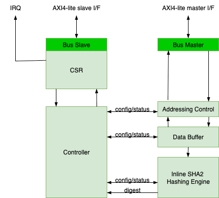

1. Security Processor (SEP)
1.1. Introduction
SEP is the Root of Trust (RoT) of the chiplet with the highest security privilege. SEP provides a physically isolated execution environment for highly sensitive security services. The following are some examples:
-
Secure boot: The SEP ROM BL0 image uses non-volatile public keys to conduct authentication verification on the loaded BL1 software images.
-
Secure lifecycle control: SEP implements a secure lifecycle controller to manage function, debug and test access to the chiplet according to fuse configuration, in-field demotion, and secret token inputs.
-
Device attestation: SEP offers support to device attestation by recording the boot process and device configuration followed attestation using public key infrastructure.
-
Cryptography service: SEP offers secure key services to the rest of the system together with cryptography acceleration. SEP also implements True Random Number Generator (TRNG) to provide random numbers for SEP itself and the rest of the system.
-
User authentication: Similar to secure boot, user authentication is another authentication service SEP offers. Besides feature control that can be tied to the authentication result, SEP software can also tie the authentication result to the secret key derivation to ensure that bypass of the user authentication leads to a useless system.
The SEP is responsible for ensuring that the chiplet and overall packaged system composed of multiple chiplets remains secure from adversaries. This means that SEP ensures the system
-
Runs correctly with the intended firmware and data protected by digital signatures
-
Guards against malicious data input to SEP, SMC and the debug/test infrastructure
-
Prevents exfiltration of private or secret data on all exits, including side channels
-
Prevents privilege escalation which would enable illegal operations
A consolidated description of OCAH use cases is available in the top-level [use-cases] section.
1.1.1. Threat Model
The threat model covers remote software attacks, physical attacks and supply chain attacks. Software attacks are universal and the primary vector against data center implementations while physical attacks are localized and require close proximity. They are relevant for automotive and robotics applications. Supply chain attacks involve modification of chips in production and provisioning.
Software attacks include:
-
Malicious firmware modification in boot, overlay or application loading or updating
-
Modifying or exfiltrating private data e.g. ML model weights, cryptographic keys
-
Providing forged attestation to mimic legal device behavior
Physical attacks include:
-
Fault injection to bypass security checks and differential cryptoanalysis for key recovery. This can include clock and voltage glitching, laser and EM energy injection, and thermal gradients. Logically induced faults such as Row Hammer DRAM attacks are also included in this category.
-
Side channel for key and other secret data extraction
-
We assume that the attacker has full view of SRAM and OTP data state
-
-
Hardware probing to observe or control data within a chiplet or communication between chiplets
Supply chain attacks include:
-
Insider modification of design to disable or weaken security features and insert backdoors. Theft of hardware secrets such as security tokens
-
Modification of IC design masks to modify behavior and insert trojans. For example the BL0 boot ROM contents may be modified to disable secure boot.
-
Corruption of fuse provisioning to enable or disable features illegally and leak device unique secrets
We however limit the scope of physical attacks we defend against and do not explicitly protect against the following:
-
Package internal inter-chiplet communications secure from hardware probing
-
Package internal chiplet hardware probing and certain physical attacks such as bias fault injection
-
Thermal gradients to influence entropy source and induce timing faults
-
Supply chain attacks
1.1.2. Attack Countermeasures
Countermeasures include:
-
Protection of BL0 boot ROM and subsequent secure boot via digital signature verification
-
Glitch and error detection
-
SRAMs and other memory structures such as FIFOs and register files are protected by parity (byte-wise) or SECDED
-
-
Temporal noise injection, masking, secret splitting and obfuscation on sensitive operations
-
Transaction filtering and firewalling
-
Functional and physical isolation of private data assets e.g. cryptographic keys
-
Anti-replay facilities e.g. non-volatile counterj in OTP
-
Obfuscate data stored in SRAM and OTP memories
1.1.3. Debug and DFT Security Considerations
The debug facilities and DFT share the scan chain infrastructure for their respective tasks. This is a security hazard as certain secret values will be resident in the registers: tokens, secrets, cryptographic keys. Unless prevented, an attacker could halt the chip execution and extract the register state containing these secrets. This section describes the countermeasures we take to prevent this from happening.
One debug feature is scandump which provides access to all internal register states. We must ensure that a certain subset of registers holding secrets are never dumped out in this mode.
There are three scenarios of how registers are handled for DFT scan test and debug scandump:
-
Full DFT and Debug access
-
DFT access but no Debug access
-
No DFT and no Debug access
Consequently there will be two discrete scan chains to handle the registers in groups 1 and 2. The register instances (or module instances) will be labelled as belonging to one of the three groups and the DFT scan insertion tool will group the registers into the respective scan chains which will be managed for security in the TAP controller.
These three groups correspond to the SEP asset classes defined authoritatively in the Lifecycle Controller chapter (Asset and Scan-Chain Protection): group 1 = Class 3 (general), group 2 = Class 2 (crypto / KM secret-bearing), group 3 = Class 1 (secrets and integrity-critical control fields).
Debug and Scan Dump
Debug mode is enabled when in-field debug is granted, via demotion (DEMOTE_1 / DEMOTE_2) or an RMA debug state (RMA_SIP / RMA_CHIPLET). In this mode, the user has near full control and observability of the chip state, but we must enforce security restrictions.
General logic (Class 3) scan dump is gated by the *_DBG feature-control
bits (sourced from the OTP DIS vectors; 1’b0 = enabled, 1’b1 = disabled,
irreversible) and the LC state — a scope’s general logic is dumpable only
when its local gate (SEP_DBG / CHIPLET_DBG), the SIP_DBG debug-access
path into the chiplet, and the LC state permit it.
Secret-bearing logic (Class 2) — crypto-engine key / round-key storage and
the Key Manager key vault / shared key storage — is placed on a dedicated
secret-bearing scan chain so DFT keeps coverage, but is never
scan-dumpable, for any owner or LC state. It is governed by secure_tm, not
the *_DBG bits: under secure_tm = 1 the secret sources (UID / CLASS_KEY)
are disconnected from these consumers, and under secure_tm = 0 the chain is
tied off.
Secrets and integrity-critical fields (Class 1) are excluded from every scan chain (never scannable):
-
Class 1a (confidentiality): UIDs,
CLASS_KEY, token-plaintext input registers (*_TOKEN_I). -
Class 1b (integrity):
LOCKS,LC_STATE,SIP_DIS,SYS_DIS,*_TOKEN_DIGESTshadow registers.
Class 2 Asset Manifest and Naming
The authoritative class definitions, scan-chain policy, and gating rules are in the Lifecycle Controller chapter (Asset and Scan-Chain Protection); Key Manager specifics are in the Key Manager chapter (Scan and Scan-Dump Protection). This section records the implementation manifest. A complete module instance is classified as Class 2 when it is the Key Manager, a device-secret-consuming cryptographic engine, an entropy engine, or sequential distribution logic that retains key, seed, random, digest-working, or round-key state. Classifying complete instances deliberately includes their control flops and avoids fragile per-register marking.
The current SEP implementation has exactly 10 Class 2 RTL scan roots:
-
sep_crypto.hmac_wrapper_s3c_scan -
sep_crypto.sep_crypto_otbn_wrapper_s3c_scan -
sep_crypto.aes_wrapper_s3c_scan -
sep_crypto.kmac_wrapper_s3c_scan -
sep_crypto.u_sep_crypto_abr_wrapper_s3c_scan -
sep_crypto.u_entropy_source_s3c_scan -
sep_crypto.u_drbg_s3c_scan -
sep_crypto.u_axis_edn_crypto_s3c_scan -
sep_crypto.u_key_manager_s3c_scan -
u_trng_wrapper_s3c_scan
The _s3c_scan suffix is reserved for Class 2 instance and generate-scope
names. It is not a module-name or per-flop suffix. A nested _n0_scan name
remains Class 1 and takes precedence over an enclosing _s3c_scan hierarchy.
Three writable companion SRAMs are also Class 2 assets:
u_km_sram, u_otbn_imem_sram, and u_otbn_dmem_sram. Their macro instance
names remain unchanged because _s3c_scan identifies RTL scan hierarchies;
the owning memory-DFT/MBIST policy must provide the same never-dump outcome.
u_km_rom is explicitly excluded because immutable executable contents
cannot retain runtime secrets. The vendor TRNG core keeps its delivered DFT
view beneath u_trng_wrapper_s3c_scan.
Secure Test Mode (SECURE_TM)
We assert a GPIO pin strap to enable secure test mode. This generates the SECURE_TM signal which is consumed by
-
TAP to enable scan test
-
Shadow registers of LOCKS, LC_STATE, SIP_DIS, and SYS_DIS are non-scannable registers
-
Any downstream registers in the path from these registers to the test enablement signals for DTAP or fuse write enablement signals are also non-scannable
-
Dedicated test registers may be inserted in the path while in SECURE_TM mode to enable testing of downstream logic
-
-
During scan test (
secure_tm = 1) the secret-source outputs (UID /CLASS_KEY) are disconnected from the Class 2 secret-bearing consumers, so no real secret is shifted; during scan dump (secure_tm = 0) the Class 2 secret-bearing chain is tied off (never dumpable). See the Lifecycle Controller chapter, `secure_tm` and Scan Dump. -
Disable writing to any OTP fuse state to prevent updates.
-
-
OTP controller
-
Disable writing of shadow registers: LOCKS, LC_STATE, SIP_DIS and SYS_DIS
-
Other shadow register fields may optionally also have write disabled
-
1.2. Hardware Overview
The diagram below shows the top level SEP architecture.

SEP is hierarchically organized as follows:
-
SEP interconnect fabric
-
AXI4 top level for CPU subsystem, its base platform components, System peripherals, Cryptographic/Security peripherals and IO peripherals subsystems
-
-
External IO ports
-
System Interface to SMN NoC
-
Outbound AXI4 system bus master
-
Inbound AXI4 system bus slave
-
-
Low speed IO peripherals AXI4 extension port with peripheral interrupt
-
SPI controller interface (single/quad/octal)
-
Remote peripherals shared with SMC: UART, GPIO
-
-
JTAG for debug and test
-
-
External Macro Interfaces
-
Memories: BL0 ROM, DCCM, ICCM, Scratch SRAM, KM SRAM, KM ROM, OTBN IMEM, OTBN DMEM
-
OTP eFuse
-
Entropy source
-
-
CPU subsystem
-
JTAG interface to CPU debugger and system debug facilities
-
Tightly coupled instruction SRAMs and ROM
-
-
Scratch Register Bank x 2
-
DMA Engine
-
Watchdog Timer (WDT)
-
Alarm aggregation processor (AGP) with Reliability and Service (RAS) port - deferred to the next generation
-
Cryptographic subsystem
-
Cryptographic accelerators: Public Key Engine, AES, HMAC-SHA2, KMAC-SHA3
-
Security components: Life Cycle Controller, Key Manager, OTP Fuse Controller
-
Entropy source, DRBG, Entropy Distribution
-
Key Manager (KM)
-
Key and Policy Vault (KPV)
-
Crypto engine key sideload interfaces
-
-
The cryptographic, peripheral IO and systems IO subsystems reside in their own respective hierarchies. These subsystems are connected with the main SEP AXI4 crossconnect fabric. Individual peripherals in the subsystems have AXI4-lite interfaces.
Technology and vendor specific macro blocks such as SRAM, ROM etc. are instantiated outside of SEP and have dedicated SEP interfaces. The goal is to cleanly separate the generic SEP IP from technology specific components in order to make integration and migration easier.
1.3. SEP Interconnect
The interconnect of SEP components and subsystems is done with a hierarchical AXI4 crossbar fabric. Masters drive traffic onto the interconnect fabric and receive responses from the addressed slave. Slave components are directly connected to the AXI4 fabric or via a bridging shim. The shim translates either AXI4-lite or the legacy Tilelink TL-UL used in OpenTitan. The goal is to eventually convert all TL-UL slaves into AXI4-lite slaves.
AXI4-lite slave bridges will need to perform the following tasks in order to mate with AXI4:
-
Bursts are not supported: convert burst transactions to single transactions
-
Write strobe (WSTRB) for partial write is not supported: TBD how to handle
-
Transaction IDs (AxID) handling
1.3.1. Top Level AXI4
C = Connected, N/C = Not Connected.
The table below reflects the generated crossbar connectivity defined in
meta/crossbars/configs/sep_local_axi_xbar.yaml, along with the dedicated
Boot ROM path that lies outside the crossbar. The crossbar has five
initiators (CPU IFI, CPU LSU, CPU DBG, DMA, and the System Interface)
and ten targets.
A few access paths are intentionally outside this crossbar:
-
Boot ROM is accessed by the CPU IFI and LSU through a dedicated point-to-point path, not through this crossbar.
-
The CPU’s own ICCM/DCCM are tightly coupled to the core and are not reached through this crossbar by the IFI/LSU. The CPU TCM target below is a backdoor AXI path into the ICCM/DCCM, used by the DMA engine to preload code/data.
-
The Alarm AGP is a feature deferred to the next generation and is not present.
The System Periph target aggregates the System Bus interface, the dual scratch register bank, the AP/STEE remap regions, and the outbound routing to SMC/SMN resources.
The Entropy Pool target is sep_entropy_fifo (0x1095_0000): a 64-bit
read-only entropy drain aperture, filled autonomously by a native EDN
endpoint on a separate hardware path (not this crossbar). Writes to it
terminate with BRESP=SLVERR.
The System Interface initiator is the external inbound master. It does
not attach to this crossbar directly; it enters SEP through the dedicated
smn_inbound port and the inbound traffic filter (block-by-default), then
through the sep_system_peripherals inner crossbar. That inner crossbar
reaches the mailboxes and system CSRs directly, and loops everything
else back into this crossbar’s System Interface row. The inbound filter
controls which addresses the external master may reach; it is block-by-default
after POR and configured by SEP firmware.
Masters |
Crossbar |
Dedicated Path |
|||||||||
|---|---|---|---|---|---|---|---|---|---|---|---|
CPU TCM |
Scratch SRAM |
DMA CSR |
WDT |
Reset Ctrl |
Crypto Periph |
System Periph |
IO Periph |
Entropy Pool |
AXI Extension |
Boot ROM |
|
CPU IFI |
N/C |
C |
N/C |
N/C |
N/C |
N/C |
N/C |
N/C |
N/C |
N/C |
C |
CPU LSU |
N/C |
C |
C |
C |
C |
C |
C |
C |
C |
C |
C |
CPU DBG |
N/C |
C |
C |
C |
C |
C |
C |
C |
C |
C |
N/C |
DMA |
C |
C |
N/C |
C |
C |
C |
C |
C |
N/C |
C |
N/C |
System I/F |
N/C |
C |
C |
C |
N/C |
C |
N/C |
C |
C |
C |
N/C |
1.3.2. Subsystem External Interfaces
-
Memory interfaces: BL0 ROM, DCCM, ICCM, Scratch SRAM, KM SRAM, KM ROM, OTBN IMEM, OTBN DMEM
-
Fuse controller interface
-
Entropy source interface
-
JTAG interfaces
-
RAS Interface - Alarm Processor is deferred to next generation
1.3.3. Local and External AXI4 Traffic Remapping
The figure below illustrates the AXI4 traffic management performed by the Systems Peripheral block. The AXI4 slave port is driven by one of the local masters from the SEP i.e. the CPU or the DMA controller. Traffic may be local to the SEP or outbound to external resources either within the SMU or beyond the SMU. Traffic beyond the SMU to the rest of the chiplet or remote chiplets will bridge to the system NOC also known as the SMN.
Transaction Routing
Local resources can be addressed by SEP CPU direct internal addresses
or by the SEP CPU local-alias view. Local resources include CSRs in SEP
components and subsystems, SRAM, and the AP- and STEE-controlled
remappers. The local-alias view is an internal CPU-side naming
convention: for example, addresses in the high alias range can be
translated back to the direct internal 0x1000_0000 and 0x2000_0000
regions. This high local-alias window has a fixed SEP-local size of
768 MiB.
External masters use chiplet-global addresses. The SEP_GLOBAL_BASE_ADDR
and SEP_REGION_SIZE CSRs define the global SEP aperture used by the
SMU crossbar and by SEP inbound global-to-local remap. The current SEP_REGION_SIZE reset is 0x0100_0000 (16 MiB); firmware may
program a larger or different aperture during early boot to match the
chiplet address assignment.
Neighboring SMC resources are accessed through the SMC global aperture programmed by SMC firmware and supplied to SEP/SMU integration logic. That aperture is independent from the SEP CPU local-alias range.
As stated earlier, any transaction which is not routed to local SEP resources or to neighboring SMC resources is directly routed out to the SMN system NoC.
SEP’s outbound traffic serves to:
-
Provide security services and
-
extend its protection to the reset of the system
For 1 the outbound traffic traverses the AP controlled remappers and for 2 the traffic goes directly to the SMN system fabric. SEP differentiates between the two scenarios 1 and 2 and enforces that the correct path is used.
When SEP accesses shared resources such as shared memory for example, the traffic goes through the AP or STEE controlled remappers to get the address translation service. These remappers are controlled by external resources such as Ascalon AP. The inbound traffic filter ensures that only STEE has access to the STEE address remapper.
When SEP accesses external private memory or the system’s memory mapped IO, the SEP traffic is directly routed to SMN.
SEP’s outbound traffic carries a source ID. Traffic destined to the SMN
uses SEP’s unique source ID. Traffic that traverses through the AP
controlled remapper uses the regular source ID termed others''.
Traffic then traverses the outbound filter after traversing the
remapper. SEP works with M-mode software to program the outbound filters
so that traffic with source ID others'' cannot access M-mode assets.
The outbound filter enables filtering based on address, NS and source
ID.
The SEP’s inbound traffic filter is configured by default to block all traffic from entering the SEP. Only the SEP CPU can program these filters. Again, these filters enable filtering based on address, NS and source ID.
Address Remapping
Sixteen remap regions are available, each supported by an address remapper. Remappers define the following attributes:
-
Input address range
-
Remapped output address offset
-
Cacheable flag
The programmable remap regions accomplish several jobs. First, they expand local 32-bit addresses to the global 56-bit address space. Second, they provide software-programmed translation and cacheability attributes for locally initiated transactions. Out of reset, these programmable remap entries are invalid and therefore behave as transparent pass-through entries until firmware programs them.
After the alias remap, traffic routing is done as follows:
-
External or cross-subsystem traffic reaches SEP through the global aperture described by
SEP_GLOBAL_BASE_ADDRandSEP_REGION_SIZE. The currentSEP_REGION_SIZEreset is0x0100_0000(16 MiB), and firmware programs the runtime value during early boot to match the chiplet map. Barrier is recommended between programming these routing CSRs and issuing later MMIO accesses. -
SEP CPU local-alias traffic is an internal CPU-side view of the SEP map. It exists so software can use high alias addresses such as
0xD000_0000for resources whose direct internal addresses begin at0x1000_0000. This high local alias span has a fixed SEP-local size of 768 MiB. -
Any transaction that doesn’t get routed to local resources is directly routed out to the SMN.
To compute global addresses for external agents, firmware needs the chiplet ID or chiplet BAR for the integration. Both the chiplet ID and chiplet BAR are available in SMC as MMRs.
SEPs outbound traffic to the main fabric serves the purposes of 1) providing services and 2) extending its protection to the rest of the system. For the former purpose, SEP’s outbound traffic goes through an AP-controlled remap logic. For the latter purpose, SEP’s outbound traffic directly goes to the NoC. SEP software shall differentiate these two purposes and choose/enforce the correct traffic path to be used.
-
When SEP accesses shared resources (e.g. shared memory) with the rest of the system, SEP’s traffic goes through the AP-controlled or STEE-controlled remap logic to get address translation. Such remap logic is supposed to be controlled by the rest of the system, like Ascalon. The inbound traffic filter ensures only STEE has access to the STEE-controlled remap logic.
-
When SEP accesses its external private memory or the system’s memory mapped IO, SEP’s traffic directly goes to the system fabric.
Mailboxes
SEP uses mailboxes to communicate with the rest of the system such as AP cores for example. Each different agent has its own private mailbox in order to separate the contexts. Each mailbox resides in its own 4 kB address space. Each mailbox is configured according to the inbound traffic filter and has an inbox and outbox pair. When the inbox is written, an interrupt is sent to the SEP CPU to notify it of an incoming service request. Similarly, when the outbox is written by the SEP, an interrupt is sent out of the SMU to the system’s interrupt controller (APLIC). The outbox is only used for communication with AP cores. For all other resources we only use inboxes on both ends of the transaction.
The SEP mailboxes have 64-bit data inputs while SEP is a 32-bit system. This means that each 64-bit input word is mapped to two 32-bit words. The SEP host can access both the low-order and high-order words.
| Mailbox Type | Description |
|---|---|
ISS |
Uses fabric source ID to qualify incoming transactions. Legal source ID is programmable, lockable and reset by SEP reset. |
STEE |
Relies on STEE indicator in the transactions (NS bit) to qualify incoming transactions. |
DTEE |
Reserved. Relies on the DTEE indicator in the transactions (confidential bit) to qualify incoming transactions. |
Regular |
Relies on PMA/PMP or page table for protection. No special action required by SEP. |

1.4. Memory Map
SEP uses 32-bit addressing. The following table outlines the SEP CPU’s
logical view of the SEP-local address space. External masters use the
chiplet-global base programmed in SEP_GLOBAL_BASE_ADDR; SEP CPU
software uses either direct internal addresses (0x1000_0000,
0x1080_0000, and so on) or the local alias view described below.
| Base Address | End Address | Size | Unit | Description |
|---|---|---|---|---|
0x0000_0000 |
0x1000_0000 |
256 MB |
External |
External to chiplet, but not in SMU (SMC, DTP, etc). |
0x1000_0000 |
0x2000_0000 |
256 MB |
SEP Local |
SEP Local resources (DMA, Crypto, etc) |
0x2000_0000 |
0x4000_0000 |
512 MB |
SEP External |
Reserved for adopter extension IP |
0x4000_0000 |
0x8000_0000 |
1 GB |
SMC |
SMC Resources |
0x8000_0000 |
0xC000_0000 |
1 GB |
SMU |
SMU Resources (DTP, etc) |
0xC000_0000 |
0xD000_0000 |
256 MB |
SEP CPU Resources |
EL2 Veer Resources (DCCM, ICCM, PIC) |
0xD000_0000 |
0x1_0000_0000 |
768 MB |
SEP Local Alias |
Corresponds to 0x1000_0000 - 0x4000_0000 |
The SEP Local Alias row is an alternate CPU-side name for the same
hardware listed in the SEP Local and SEP External rows. For
example, 0xD000_0000 aliases 0x1000_0000 and 0xD080_2000 aliases
0x1080_2000. This alias range is used by SEP-local masters, while
external masters use chiplet-global addresses.
The EL2 CPU resources are mapped into a separate segment than the SEP
Local resources due to constraints on the CPU memory map. The ICCM,
DCCM, and PIC addresses in the 0xC000_0000 region are statically
configured in the CPU core module and are reached through the CPU’s
internal wiring. The high local-alias mapping covers the 0xD000_0000
and above alias view. CPU CSRs are accessed with dedicated RISC-V
instructions and do not appear in the address map.
The high local alias span has a fixed SEP-local size of 768 MiB
(0xD000_0000 through 0xFFFF_FFFF), corresponding to the direct
internal range 0x1000_0000 through 0x3FFF_FFFF. The
chiplet-global SEP aperture configured by SEP_GLOBAL_BASE_ADDR /
SEP_REGION_SIZE controls the SMU xbar and inbound global-to-local
remap.
| Base Address | End Address | Size | Unit | Description |
|---|---|---|---|---|
0xC000_0000 |
0xC003_FFFF |
256 kB |
ICCM |
Tightly Coupled Instruction SRAM |
0xC004_0000 |
0xC005_FFFF |
128 kB |
DCCM |
Tightly Coupled Data SRAM |
0xC006_0000 |
0xC007_FFFF |
Reserved |
||
0xC008_0000 |
0xC008_7FFF |
32 kB |
PIC |
Interrupt controller for El2 CPU |
0xC008_8000 |
0xCFFF_FFFF |
Reserved |
The remaining subsystems are mapped into regions 1 and 2 for the EL2 CPU.
| Base Address | End Address | Size | Unit | Description |
|---|---|---|---|---|
0x1000_0000 |
0x1000_FFFF |
64 kB |
SRAM |
Scratch SRAM |
0x1001_0000 |
0x1003_FFFF |
192 kB |
RSV |
Reserved Scratch SRAM expansion |
0x1004_0000 |
0x1004_FFFF |
64 kB |
ROM |
BL0 immutable instruction memory |
0x1005_0000 |
0x107F_FFFF |
7,872 KB |
RSV |
reserved |
0x1080_0000 |
0x1080_0FFF |
4 kB |
DMA |
DMA CSR |
0x1080_1000 |
0x1080_1FFF |
4 kB |
WDT |
Watchdog Timer |
0x1080_2000 |
0x1080_2FFF |
4 kB |
SRB |
Dual Scratch Register Banks |
0x1080_3000 |
0x1080_3007 |
8 B |
RST_CTRL |
SEP Reset Controller (software reset for KM and crypto accelerators) |
0x1080_3008 |
0x108F_FFFF |
1,043 kB |
RSV |
reserved |
0x1090_0000 |
0x1090_FFFF |
64kB |
OTBN |
Public Key processor memory and CSR |
0x1091_0000 |
0x1091_0FFF |
4 kB |
AES |
Block Cipher |
0x1091_1000 |
0x1091_2FFF |
8 kB |
HMAC-SHA2 |
Hash / MAC |
0x1091_3000 |
0x1091_3FFF |
4 kB |
KMAC-SHA3 |
Hash / MAC |
0x1091_4000 |
0x1091_4FFF |
4 kB |
RSV |
Reserved |
0x1091_5000 |
0x1091_5FFF |
4 kB |
DRBG |
Deterministic Random Bit Generator |
0x1091_6000 |
0x1091_6FFF |
4 kB |
ESRC |
Entropy Source |
0x1091_7000 |
0x1091_7FFF |
4 kB |
TRNG |
Random Num Gen |
0x1091_8000 |
0x1091_FFFF |
32 kB |
LC |
Life Cycle Controller |
0x1092_0000 |
0x1092_0FFF |
4 kB |
KM |
Key Manager |
0x1092_1000 |
0x1092_FFFF |
RSV |
Reserved |
|
0x1093_0000 |
0x1093_7FFF |
32 kB |
OTP |
Fuse Control and Shadow Memory |
0x1093_8000 |
0x1094_FFFF |
RSV |
Reserved |
|
0x1095_0000 |
0x1095_FFFF |
64 kB |
EPOOL |
Entropy Pool FIFO (read-only drain; writes return SLVERR). Filled by native EDN. |
0x1096_0000 |
0x109F_FFFF |
RSV |
Reserved |
|
0x10A0_0000 |
0x10A3_FFFF |
256 kB |
SYS |
System Bus I/F |
0x10A4_0000 |
0x10AF_FFFF |
RSV |
Reserved |
|
0x10B0_0000 |
0x10BF_FFFF |
1 MB |
IO |
External IO Peripherals Bridge: UART, GPIO etc. |
0x1100_0000 |
0x117F_FFFF |
8 MB |
AP Remap Region |
Write to this region to be routed to the AP remapper |
0x1180_0000 |
0x11FF_FFFF |
8 MB |
STEE Remap Region |
Write to this region to be routed to the STEE remapper |
0x1200_0000 |
0x1FFF_FFFF |
20 MB |
RSV |
Reserved |
0x2000_0000 |
0x4000_0000 |
512 MB |
SEP External Region |
Reserved for adopter extension IP |
1.5. Detailed Register Map
The following register tables are generated from the SEP register description
(RDL) sub-blocks under hw/sys/sep/regs/. Each entry corresponds to a unit in
the SEP memory map above.
1.5.1. CPU Control and Interrupts
Address Map: sep_cpu_ctrl
Register List:
| Address | Name | Access | Description |
|---|---|---|---|
| 0x8 | CLOCK_GATE_CTRL | RW | TODO: clock-gate control - placeholder fields, not yet implemented. |
| 0x10 | REFERENCE_COUNTER | RW | - |
| 0x18 | TIMEOUT_INTERRUPT | R | Reserved - per-block timeout interrupt not yet implemented. |
| 0x20 | PKA_CTRL | RW | TODO: PKA control - placeholder fields, not yet implemented. |
| 0x28 | TIMEOUT_COUNT_DMA | RW | Reserved - per-block timeout count/threshold not yet implemented. |
| 0x30 | TIMEOUT_COUNT_SYS_IN | RW | Reserved - per-block timeout count/threshold not yet implemented. |
| 0x38 | TIMEOUT_COUNT_MAILBOX_INBOUND | RW | Reserved - per-block timeout count/threshold not yet implemented. |
| 0x40 | TIMEOUT_COUNT_MAILBOX_OUTBOUND | RW | Reserved - per-block timeout count/threshold not yet implemented. |
| 0x48 | TIMEOUT_COUNT_ENTROPY_WRITE | RW | Reserved - per-block timeout count/threshold not yet implemented. |
| 0x50 | TIMEOUT_COUNT_ENTROPY_READ | RW | Reserved - per-block timeout count/threshold not yet implemented. |
| 0x58 | TIMEOUT_COUNT_FILTER_OUT | RW | Reserved - per-block timeout count/threshold not yet implemented. |
| 0x60 | TIMEOUT_COUNT_ALIAS_REMAP | RW | Reserved - per-block timeout count/threshold not yet implemented. |
| 0x68 | TIMEOUT_ENABLE | RW | Reserved - per-block timeout enable not yet implemented. |
| 0x70 | TIMEOUT_CLEAR | W | Reserved - per-block timeout interrupt-clear not yet implemented. |
| 0x78 | TIMEOUT_MODE | W | Reserved - per-block timeout mode not yet implemented. |
| 0xB0 | SEP_TEST_CTRL | R | - |
| 0xC0 | SEP_GLOBAL_BASE_ADDR | RW | - |
| 0xC8 | SEP_LOCAL_BASE_ADDR | RW | - |
| 0xD0 | SEP_REGION_SIZE | RW | - |
| 0x100 | SMU_GLOBAL_BASE_ADDR | RW | - |
| 0x110 | SMU_REGION_SIZE | RW | - |
| 0x140 | SMC_FUSE_SENSE_STATUS | R | - |
| 0x150 | SEP_FUSE_SENSE_STATUS | R | - |
| 0x160 | SEP_STRAPS | R | - |
| 0x170 | RAS_BANK_INFO | RW | - |
| 0x178 | SEP_SW_DEBUG | RW | - |
| 0x180 | SEP_NMI_VEC | RW | NMI vector address for VeeR-EL2 CPU. The default value is 0xC000_0100. The NMI interrupt is used for the WDT Bark interrupt. WARNING: the reset value is a placeholder, not a usable handler. Firmware must program this register with the address of its own NMI handler, and then set SEP_NMI_VEC_LOCK, before enabling any NMI source (the WDT bark in particular). If a bark arrives while the reset value is still in place, the CPU jumps to 0xC000_0100 in ICCM and executes whatever is there: arbitrary instructions if the loaded image covers that location, or an uncorrectable ICCM ECC error (which itself re-raises NMI) if it does not. |
| 0x188 | SEP_NMI_VEC_LOCK | RW | Lock the NMI vector address. Once locked, the NMI vector address cannot be changed. The NMI interrupt is used for the WDT Bark interrupt. |
| 0x190 | EXT_TRNG_SRC_SEL | RW | Per-stream external TRNG source selection for crypto subsystem entropy muxes. |
| 0x198 | EXT_TRNG_SRC_SEL_LOCK | RW | Lock the TRNG source selection. Once locked, EXT_TRNG_SRC_SEL cannot be changed until reset. |
| 0x1A0 | KM_WIPE_CTRL | RW | Key Manager emergency wipe control. |
| 0x1000 | SEP_VERSION_ID | R | - |
Register Details:
CLOCK_GATE_CTRL
| Bits | Field | Access | Reset | Description |
|---|---|---|---|---|
| 63:1 | Reserved | - | - | Reserved |
| 0 | pka_cg_enable | RW | 0x0 | Reserved - PKA clock-gate enable, not yet implemented. |
REFERENCE_COUNTER
| Bits | Field | Access | Reset | Description |
|---|---|---|---|---|
| 63:0 | rc | RW | 0x0 | SEP REFERENCE COUNTER, counting after deassert of cold reset |
TIMEOUT_INTERRUPT
| Bits | Field | Access | Reset | Description |
|---|---|---|---|---|
| 63:1 | Reserved | - | - | Reserved |
| 0 | reserved | R | 0x0 | Reserved - timeout interrupt status not yet implemented. |
PKA_CTRL
| Bits | Field | Access | Reset | Description |
|---|---|---|---|---|
| 63:3 | Reserved | - | - | Reserved |
| 2 | pka_noise_src_valid | RW | 0x0 | Reserved - PKA noise source valid, not yet implemented. |
| 1 | pka_noise_src | RW | 0x0 | Reserved - PKA noise source select, not yet implemented. |
| 0 | pka_dpa_disable | RW | 0x0 | Reserved - disable DPA countermeasures in PKA, not yet implemented. |
TIMEOUT_COUNT_DMA
| Bits | Field | Access | Reset | Description |
|---|---|---|---|---|
| 63:1 | Reserved | - | - | Reserved |
| 0 | reserved | RW | 0x0 | Reserved - timeout count not yet implemented. |
TIMEOUT_COUNT_SYS_IN
| Bits | Field | Access | Reset | Description |
|---|---|---|---|---|
| 63:1 | Reserved | - | - | Reserved |
| 0 | reserved | RW | 0x0 | Reserved - timeout count not yet implemented. |
TIMEOUT_COUNT_MAILBOX_INBOUND
| Bits | Field | Access | Reset | Description |
|---|---|---|---|---|
| 63:1 | Reserved | - | - | Reserved |
| 0 | reserved | RW | 0x0 | Reserved - timeout count not yet implemented. |
TIMEOUT_COUNT_MAILBOX_OUTBOUND
| Bits | Field | Access | Reset | Description |
|---|---|---|---|---|
| 63:1 | Reserved | - | - | Reserved |
| 0 | reserved | RW | 0x0 | Reserved - timeout count not yet implemented. |
TIMEOUT_COUNT_ENTROPY_WRITE
| Bits | Field | Access | Reset | Description |
|---|---|---|---|---|
| 63:1 | Reserved | - | - | Reserved |
| 0 | reserved | RW | 0x0 | Reserved - timeout count not yet implemented. |
TIMEOUT_COUNT_ENTROPY_READ
| Bits | Field | Access | Reset | Description |
|---|---|---|---|---|
| 63:1 | Reserved | - | - | Reserved |
| 0 | reserved | RW | 0x0 | Reserved - timeout count not yet implemented. |
TIMEOUT_COUNT_FILTER_OUT
| Bits | Field | Access | Reset | Description |
|---|---|---|---|---|
| 63:1 | Reserved | - | - | Reserved |
| 0 | reserved | RW | 0x0 | Reserved - timeout count not yet implemented. |
TIMEOUT_COUNT_ALIAS_REMAP
| Bits | Field | Access | Reset | Description |
|---|---|---|---|---|
| 63:1 | Reserved | - | - | Reserved |
| 0 | reserved | RW | 0x0 | Reserved - timeout count not yet implemented. |
TIMEOUT_ENABLE
| Bits | Field | Access | Reset | Description |
|---|---|---|---|---|
| 63:1 | Reserved | - | - | Reserved |
| 0 | reserved | RW | 0x0 | Reserved - timeout monitors not yet implemented. |
TIMEOUT_CLEAR
| Bits | Field | Access | Reset | Description |
|---|---|---|---|---|
| 63:1 | Reserved | - | - | Reserved |
| 0 | reserved | W | 0x0 | Reserved - timeout monitors not yet implemented. |
TIMEOUT_MODE
| Bits | Field | Access | Reset | Description |
|---|---|---|---|---|
| 63:1 | Reserved | - | - | Reserved |
| 0 | reserved | W | 0x0 | Reserved - timeout monitors not yet implemented. |
SEP_TEST_CTRL
| Bits | Field | Access | Reset | Description |
|---|---|---|---|---|
| 31 | fast_spi_en | R | 0x0 | Fast SPI Enable |
| 30 | fast_iccm_en | R | 0x0 | Fast ICCM Enable |
| 29 | fast_dccm_en | R | 0x0 | Fast DCCM Enable |
| 28 | fast_sram_en | R | 0x0 | Fast SRAM Enable |
| 27 | fast_pka_en | R | 0x0 | Fast PKA Enable |
| 26 | sep_standalone | R | 0x0 | SEP is standalone (not part of eg SMU) |
| 25:0 | Reserved | - | - | Reserved |
SEP_GLOBAL_BASE_ADDR
| Bits | Field | Access | Reset | Description |
|---|---|---|---|---|
| 63:56 | Reserved | - | - | Reserved |
| 55:0 | addr | RW | 0x0 | - |
SEP_LOCAL_BASE_ADDR
| Bits | Field | Access | Reset | Description |
|---|---|---|---|---|
| 63:56 | Reserved | - | - | Reserved |
| 55:0 | addr | RW | 0xD0000000 | - |
SEP_REGION_SIZE
| Bits | Field | Access | Reset | Description |
|---|---|---|---|---|
| 63:32 | Reserved | - | - | Reserved |
| 31:0 | size | RW | 0x1000000 | - |
SMU_GLOBAL_BASE_ADDR
| Bits | Field | Access | Reset | Description |
|---|---|---|---|---|
| 63:56 | Reserved | - | - | Reserved |
| 55:0 | addr | RW | 0x80000000 | - |
SMU_REGION_SIZE
| Bits | Field | Access | Reset | Description |
|---|---|---|---|---|
| 63:32 | Reserved | - | - | Reserved |
| 31:0 | size | RW | 0x40000000 | - |
SMC_FUSE_SENSE_STATUS
| Bits | Field | Access | Reset | Description |
|---|---|---|---|---|
| 63:1 | Reserved | - | - | Reserved |
| 0 | smc_fuse_sense_done | R | 0x0 | This bit indicates when SMC's fuse sense is completed. While fuse sense if ongoing, SMC fabric will be in reset. Any requests to the SMC will hang. When this is 1, it is safe to send requests to the SMC. |
SEP_FUSE_SENSE_STATUS
| Bits | Field | Access | Reset | Description |
|---|---|---|---|---|
| 63:1 | Reserved | - | - | Reserved |
| 0 | sep_fuse_sense_done | R | 0x0 | This reg is used to indicate the fuse sense status of SEP. |
SEP_STRAPS
| Bits | Field | Access | Reset | Description |
|---|---|---|---|---|
| 31:2 | Reserved | - | - | Reserved |
| 1 | bypass_mem_repair | R | 0x0 | straps for bypass_mem_repair -> Used to indicate if the memory repair should be bypassed |
| 0 | test_en | R | 0x0 | straps for test_en -> Used to be latched by SEP and generate the secure_tm |
RAS_BANK_INFO
| Bits | Field | Access | Reset | Description |
|---|---|---|---|---|
| 31:8 | Reserved | - | - | Reserved |
| 7:4 | bank_instance | RW | 0x0 | Chiplet instance ID |
| 3:0 | bank_chip | RW | 0x0 | Chiplet type ID |
SEP_SW_DEBUG
| Bits | Field | Access | Reset | Description |
|---|---|---|---|---|
| 63:32 | Reserved | - | - | Reserved |
| 31:0 | sep_sw_debug | RW | 0x0 | software writtable debug information. This reg is routed to CLA |
SEP_NMI_VEC
| Bits | Field | Access | Reset | Description |
|---|---|---|---|---|
| 63:32 | Reserved | - | - | Reserved |
| 31:1 | nmi_vec | RW | 0x60000080 | NMI vector address [31:1] for VeeR-EL2 CPU. Bit 0 is always 0 (aligned). Address where CPU jumps on Non-Maskable Interrupt. This is used for the WDT Bark interrupt. The reset value does not point at a valid handler -- see the register description for the required programming order. |
| 0 | rsvd | R | 0x0 | Reserved, bit 0 is always 0 (aligned) |
SEP_NMI_VEC_LOCK
| Bits | Field | Access | Reset | Description |
|---|---|---|---|---|
| 63:1 | Reserved | - | - | Reserved |
| 0 | lock | RW | 0x0 | Lock the NMI vector address. Once locked, the NMI vector address cannot be changed. The NMI interrupt is used for the WDT Bark interrupt. |
EXT_TRNG_SRC_SEL
| Bits | Field | Access | Reset | Description |
|---|---|---|---|---|
| 63:3 | Reserved | - | - | Reserved |
| 2:0 | sel | RW | 0x7 | TRNG source select per stream. Bit N selects the source for stream N (bit0 = Key Manager, bit1 = crypto blocks, bit2 = entropy pool). 0 = internal DRBG output, 1 = external TRNG (default). |
EXT_TRNG_SRC_SEL_LOCK
| Bits | Field | Access | Reset | Description |
|---|---|---|---|---|
| 63:1 | Reserved | - | - | Reserved |
| 0 | lock | RW | 0x0 | Lock TRNG source selection. Once set, cannot be cleared by software. |
KM_WIPE_CTRL
| Bits | Field | Access | Reset | Description |
|---|---|---|---|---|
| 63:1 | Reserved | - | - | Reserved |
| 0 | wipe_state | RW | 0x0 | Key Manager wipe state. A rising edge zeroes all KPV entries and sets the WIPE_STATE interrupt status. |
SEP_VERSION_ID
| Bits | Field | Access | Reset | Description |
|---|---|---|---|---|
| 63:32 | Reserved | - | - | Reserved |
| 31:0 | version_id | R | 0xDEADBEEF | Version ID for the CPU |
Address Map: el2_pic
Register Arrays:
- meipl[32]: 32 registers, base 0x4, stride 0x4
- meip[2]: 2 registers, base 0x1000, stride 0x4
- meie[32]: 32 registers, base 0x2004, stride 0x4
- meigwctrl[32]: 32 registers, base 0x4004, stride 0x4
- meigwclr[32]: 32 registers, base 0x5004, stride 0x4
Register List:
| Address | Name | Access | Description |
|---|---|---|---|
| 0x4 - 0x80 | meipl[32] | RW | External Interrupt Priority Level Register. Sets the priority level for an interrupt source. |
| 0x1000 - 0x1004 | meip[2] | R | External Interrupt Pending Register. Reports pending status of up to 32 interrupt sources. |
| 0x2004 - 0x2080 | meie[32] | RW | External Interrupt Enable Register. Controls interrupt enable for a single source. |
| 0x3000 | mpiccfg | RW | PIC Configuration Register. Used to select the operational parameters of the PIC. |
| 0x4004 - 0x4080 | meigwctrl[32] | RW | External Interrupt Gateway Configuration Register. Controls interrupt type and polarity. |
| 0x5004 - 0x5080 | meigwclr[32] | W | External Interrupt Gateway Clear Register. Writing any value clears the gateway's interrupt pending (IP) bit for edge-triggered interrupts. |
Register Details:
meipl[32]
| Bits | Field | Access | Reset | Description |
|---|---|---|---|---|
| 31:4 | Reserved | - | - | Reserved |
| 3:0 | intpriority | RW | 0x0 | External interrupt priority level: RISC-V standard order: 0=Never interrupt, 1..15=Priority (1 lowest, 15 highest) Reverse order: 15=Never interrupt, 14..0=Priority (14 lowest, 0 highest) |
meip[2]
| Bits | Field | Access | Reset | Description |
|---|---|---|---|---|
| 31:0 | intpend | R | 0x0 | External interrupt pending bits. Bit Y indicates pending status for source X*32+Y. 0: Interrupt not pending 1: Interrupt pending |
meie[32]
| Bits | Field | Access | Reset | Description |
|---|---|---|---|---|
| 31:1 | Reserved | - | - | Reserved |
| 0 | inten | RW | 0x0 | External interrupt enable: 0: Interrupt disabled 1: Interrupt enabled |
mpiccfg
| Bits | Field | Access | Reset | Description |
|---|---|---|---|---|
| 31:1 | Reserved | - | - | Reserved |
| 0 | priord | RW | 0x0 | Priority order: 0: RISC-V standard compliant priority order (0=lowest to 15=highest) 1: Reverse priority order (15=lowest to 0=highest) |
meigwctrl[32]
| Bits | Field | Access | Reset | Description |
|---|---|---|---|---|
| 31:2 | Reserved | - | - | Reserved |
| 1 | irq_type | RW | 0x0 | External interrupt type: 0: Level-triggered interrupt 1: Edge-triggered interrupt |
| 0 | polarity | RW | 0x0 | External interrupt polarity: 0: Active-high interrupt 1: Active-low interrupt |
meigwclr[32]
| Bits | Field | Access | Reset | Description |
|---|---|---|---|---|
| 31:1 | Reserved | - | - | Reserved |
| 0 | clear | W | 0x0 | Write any value to clear the interrupt pending bit in the gateway. This register is write-only; reads return 0. |
1.5.2. Reset and Lifecycle
Address Map: sep_reset_ctrl
Register List:
| Address | Name | Access | Description |
|---|---|---|---|
| 0x0 | SW_RESET_N | RW | - |
Register Details:
SW_RESET_N
| Bits | Field | Access | Reset | Description |
|---|---|---|---|---|
| 63:5 | Reserved | - | - | Reserved |
| 4 | kmac_sw_rst_n | RW | 0x1 | KMAC reset (0=assert, 1=release) |
| 3 | hmac_sw_rst_n | RW | 0x1 | HMAC reset (0=assert, 1=release) |
| 2 | aes_sw_rst_n | RW | 0x1 | AES reset (0=assert, 1=release) |
| 1 | otbn_sw_rst_n | RW | 0x1 | OTBN reset (0=assert, 1=release) |
| 0 | km_sw_rst_n | RW | 0x0 | KM reset (0=assert, 1=release) |
Address Map: sep_lifecycle_ctrl
Register List:
| Address | Name | Access | Description |
|---|---|---|---|
| 0x0 | FEAT_CTRL | R | - |
| 0x8 | DEMOTE_1 | RW | - |
| 0x10 | DEMOTE_2 | RW | - |
Register Details:
FEAT_CTRL
| Bits | Field | Access | Reset | Description |
|---|---|---|---|---|
| 63:0 | feature_control | R | 0x0 | Lifecycle feature control bits, |
DEMOTE_1
| Bits | Field | Access | Reset | Description |
|---|---|---|---|---|
| 63:2 | rsvd | RW | 0x0 | Not used |
| 1 | lock | RW | 0x0 | Demote lock bit. Once locked, demote can no longer be changed |
| 0 | demote | RW | 0x0 | Demote bit to enter PROD_DBG state |
DEMOTE_2
| Bits | Field | Access | Reset | Description |
|---|---|---|---|---|
| 63:2 | rsvd | RW | 0x0 | Not used |
| 1 | lock | RW | 0x0 | Demote lock bit. Once locked, demote can no longer be changed |
| 0 | demote | RW | 0x0 | Demote bit to enter PROD_DBG state |
1.5.3. Scratch and eFuse
Address Map: sep_scratch
Register Arrays:
- SCRATCH[8]: 8 registers, base 0x0, stride 0x8
Register List:
| Address | Name | Access | Description |
|---|---|---|---|
| 0x0 - 0x38 | SCRATCH[8] | RW | - |
Register Details:
SCRATCH[8]
| Bits | Field | Access | Reset | Description |
|---|---|---|---|---|
| 63:32 | Reserved | - | - | Reserved |
| 31:0 | data | RW | 0x0 | Scratch register for the CPU |
Address Map: sep_efuse_map
Register List:
| Address | Name | Access | Description |
|---|---|---|---|
| 0x0 | LOCKS | RW | - |
| 0x8 | LC_STATE | R | - |
| 0xC | SBOOT_DIS | R | - |
| 0x10 | TRANSIENT_RMA_EN | R | - |
| 0x14 | SiP_DIS | RW | An owner's (SiP or System) feature control vector. When set, the corresponding feature is disabled |
| 0x1C | SYS_DIS | RW | An owner's (SiP or System) feature control vector. When set, the corresponding feature is disabled |
| 0x24 | RMA_SIP_TOKEN_DIGEST | R | - |
| 0x44 | RMA_CHIPLET_TOKEN_DIGEST | R | - |
| 0x64 | CLASS_KEY | R | - |
| 0x84 | CHIPLET_PUBK_REVOKE | R | - |
| 0x88 | BL1_VERSION | R | - |
| 0xA8 | BL2_VERSION | R | - |
| 0xC8 | CHIPLET_UID | R | - |
| 0xE8 | SiP_PUBK_DIGEST | R | - |
| 0x108 | SiP_UID | R | - |
| 0x128 | SYS_PUBK_DIGEST | R | - |
| 0x148 | SYS_UID | R | - |
| 0x168 | STATUS_RPT | R | - |
| 0x16C | SEP_ROM_CTRL | R | - |
| 0x170 | SEP_SPI_CTRL_FIELD_EN | R | - |
| 0x174 | SPI_DISCOVERY_CTRL | R | - |
| 0x178 | SPI_PHY_DQ_TIMING | R | - |
| 0x17C | SPI_PHY_DQS_TIMING | R | - |
| 0x180 | SPI_PHY_GATE_LPBK | R | - |
| 0x184 | SPI_PHY_DLL_SLAVE | R | - |
| 0x188 | SPI_PHY_DLL_MASTER | R | - |
| 0x18C | SPI_PHY_MISC | R | - |
| 0x190 | SPI_RB_VALID_TIME | R | - |
| 0x194 | PUBLIC_KEY_0 | R | - |
| 0x1B4 | PUBLIC_KEY_1 | R | - |
| 0x1D4 | RESERVED_0 | R | - |
| 0x214 | RESERVED_1 | R | - |
| 0x254 | RESERVED_2 | R | - |
| 0x294 | RESERVED_3 | R | - |
| 0x2D4 | RESERVED_4 | R | - |
| 0x314 | RESERVED_5 | R | - |
| 0x354 | RESERVED_6 | R | - |
| 0x394 | RESERVED_7 | R | - |
| 0x3D4 | RESERVED_LAST_256 | R | - |
| 0x3F4 | RESERVED_LAST_64 | R | - |
| 0x3FC | RESERVED_LAST_32 | R | - |
Register Details:
LOCKS
| Bits | Field | Access | Reset | Description |
|---|---|---|---|---|
| 63 | RESERVED_LAST_32_READ_LOCK | RW | 0x0 | RESERVED_LAST_32_READ_LOCK, when set, this field is not read-able (neither the eFuse nor the shadow register) |
| 62 | RESERVED_LAST_32_WRITE_LOCK | RW | 0x0 | RESERVED_LAST_32_WRITE_LOCK, when set, this field is not write-able (neither the eFuse nor the shadow register) |
| 61 | RESERVED_LAST_64_READ_LOCK | RW | 0x0 | RESERVED_LAST_64_READ_LOCK, when set, this field is not read-able (neither the eFuse nor the shadow register) |
| 60 | RESERVED_LAST_64_WRITE_LOCK | RW | 0x0 | RESERVED_LAST_64_WRITE_LOCK, when set, this field is not write-able (neither the eFuse nor the shadow register) |
| 59 | RESERVED_LAST_256_READ_LOCK | RW | 0x0 | RESERVED_LAST_256_READ_LOCK, when set, this field is not read-able (neither the eFuse nor the shadow register) |
| 58 | RESERVED_LAST_256_WRITE_LOCK | RW | 0x0 | RESERVED_LAST_256_WRITE_LOCK, when set, this field is not write-able (neither the eFuse nor the shadow register) |
| 57 | RESERVED_7_READ_LOCK | RW | 0x0 | RESERVED_7_READ_LOCK, when set, this field is not read-able (neither the eFuse nor the shadow register) |
| 56 | RESERVED_7_WRITE_LOCK | RW | 0x0 | RESERVED_7_WRITE_LOCK, when set, this field is not write-able (neither the eFuse nor the shadow register) |
| 55 | RESERVED_6_READ_LOCK | RW | 0x0 | RESERVED_6_READ_LOCK, when set, this field is not read-able (neither the eFuse nor the shadow register) |
| 54 | RESERVED_6_WRITE_LOCK | RW | 0x0 | RESERVED_6_WRITE_LOCK, when set, this field is not write-able (neither the eFuse nor the shadow register) |
| 53 | RESERVED_5_READ_LOCK | RW | 0x0 | RESERVED_5_READ_LOCK, when set, this field is not read-able (neither the eFuse nor the shadow register) |
| 52 | RESERVED_5_WRITE_LOCK | RW | 0x0 | RESERVED_5_WRITE_LOCK, when set, this field is not write-able (neither the eFuse nor the shadow register) |
| 51 | RESERVED_4_READ_LOCK | RW | 0x0 | RESERVED_4_READ_LOCK, when set, this field is not read-able (neither the eFuse nor the shadow register) |
| 50 | RESERVED_4_WRITE_LOCK | RW | 0x0 | RESERVED_4_WRITE_LOCK, when set, this field is not write-able (neither the eFuse nor the shadow register) |
| 49 | RESERVED_3_READ_LOCK | RW | 0x0 | RESERVED_3_READ_LOCK, when set, this field is not read-able (neither the eFuse nor the shadow register) |
| 48 | RESERVED_3_WRITE_LOCK | RW | 0x0 | RESERVED_3_WRITE_LOCK, when set, this field is not write-able (neither the eFuse nor the shadow register) |
| 47 | RESERVED_2_READ_LOCK | RW | 0x0 | RESERVED_2_READ_LOCK, when set, this field is not read-able (neither the eFuse nor the shadow register) |
| 46 | RESERVED_2_WRITE_LOCK | RW | 0x0 | RESERVED_2_WRITE_LOCK, when set, this field is not write-able (neither the eFuse nor the shadow register) |
| 45 | RESERVED_1_READ_LOCK | RW | 0x0 | RESERVED_1_READ_LOCK, when set, this field is not read-able (neither the eFuse nor the shadow register) |
| 44 | RESERVED_1_WRITE_LOCK | RW | 0x0 | RESERVED_1_WRITE_LOCK, when set, this field is not write-able (neither the eFuse nor the shadow register) |
| 43 | RESERVED_0_READ_LOCK | RW | 0x0 | RESERVED_0_READ_LOCK, when set, this field is not read-able (neither the eFuse nor the shadow register) |
| 42 | RESERVED_0_WRITE_LOCK | RW | 0x0 | RESERVED_0_WRITE_LOCK, when set, this field is not write-able (neither the eFuse nor the shadow register) |
| 41 | SEP_PUBLIC_KEY_HASH_1_READ_LOCK | RW | 0x0 | SEP_PUBLIC_KEY_HASH_1_READ_LOCK, when set, this field is not read-able (neither the eFuse nor the shadow register) |
| 40 | SEP_PUBLIC_KEY_HASH_1_WRITE_LOCK | RW | 0x0 | SEP_PUBLIC_KEY_HASH_1_WRITE_LOCK, when set, this field is not write-able (neither the eFuse nor the shadow register) |
| 39 | SEP_PUBLIC_KEY_HASH_0_READ_LOCK | RW | 0x0 | SEP_PUBLIC_KEY_HASH_0_READ_LOCK, when set, this field is not read-able (neither the eFuse nor the shadow register) |
| 38 | SEP_PUBLIC_KEY_HASH_0_WRITE_LOCK | RW | 0x0 | SEP_PUBLIC_KEY_HASH_0_WRITE_LOCK, when set, this field is not write-able (neither the eFuse nor the shadow register) |
| 37 | SEP_SPI_CTRL_READ_LOCK | RW | 0x0 | sep_spi_ctrl_read_lock, when set, this field is not read-able (neither the eFuse nor the shadow register) |
| 36 | SEP_SPI_CTRL_WRITE_LOCK | RW | 0x0 | sep_spi_ctrl_write_lock, when set, this field is not write-able (neither the eFuse nor the shadow register) |
| 35 | SEP_ROM_CTRL_READ_LOCK | RW | 0x0 | sep_rom_ctrl_read_lock, when set, this field is not read-able (neither the eFuse nor the shadow register) |
| 34 | SEP_ROM_CTRL_WRITE_LOCK | RW | 0x0 | sep_rom_ctrl_write_lock, when set, this field is not write-able (neither the eFuse nor the shadow register) |
| 33 | STATUS_RPT_READ_LOCK | RW | 0x0 | status_rpt_read_lock, when set, this field is not read-able (neither the eFuse nor the shadow register) |
| 32 | STATUS_RPT_WRITE_LOCK | RW | 0x0 | status_rpt_write_lock, when set, this field is not write-able (neither the eFuse nor the shadow register) |
| 31 | SYS_UID_READ_LOCK | RW | 0x0 | sys_uid_read_lock, when set, this field is not read-able (neither the eFuse nor the shadow register) |
| 30 | SYS_UID_WRITE_LOCK | RW | 0x0 | sys_uid_write_lock, when set, this field is not write-able (neither the eFuse nor the shadow register) |
| 29 | SYS_PUBK_DIGEST_READ_LOCK | RW | 0x0 | sys_pubk_digest_read_lock, when set, this field is not read-able (neither the eFuse nor the shadow register) |
| 28 | SYS_PUBK_DIGEST_WRITE_LOCK | RW | 0x0 | sys_pubk_digest_write_lock, when set, this field is not write-able (neither the eFuse nor the shadow register) |
| 27 | SiP_UID_READ_LOCK | RW | 0x0 | sip_uid_read_lock, when set, this field is not read-able (neither the eFuse nor the shadow register) |
| 26 | SiP_UID_WRITE_LOCK | RW | 0x0 | sip_uid_write_lock, when set, this field is not write-able (neither the eFuse nor the shadow register) |
| 25 | SiP_PUBK_DIGEST_READ_LOCK | RW | 0x0 | sip_pubk_digest_read_lock, when set, this field is not read-able (neither the eFuse nor the shadow register) |
| 24 | SiP_PUBK_DIGEST_WRITE_LOCK | RW | 0x0 | sip_pubk_digest_write_lock, when set, this field is not write-able (neither the eFuse nor the shadow register) |
| 23 | CHIPLET_UID_READ_LOCK | RW | 0x0 | chiplet_uid_read_lock, when set, this field is not read-able (neither the eFuse nor the shadow register) |
| 22 | CHIPLET_UID_WRITE_LOCK | RW | 0x0 | chiplet_uid_write_lock, when set, this field is not write-able (neither the eFuse nor the shadow register) |
| 21 | BL2_VERSION_READ_LOCK | RW | 0x0 | bl2_version_read_lock, when set, this field is not read-able (neither the eFuse nor the shadow register) |
| 20 | BL2_VERSION_WRITE_LOCK | RW | 0x0 | bl2_version_write_lock, when set, this field is not write-able (neither the eFuse nor the shadow register) |
| 19 | BL1_VERSION_READ_LOCK | RW | 0x0 | bl1_version_read_lock, when set, this field is not read-able (neither the eFuse nor the shadow register) |
| 18 | BL1_VERSION_WRITE_LOCK | RW | 0x0 | bl1_version_write_lock, when set, this field is not write-able (neither the eFuse nor the shadow register) |
| 17 | CHIPLET_PUBK_REVOKE_READ_LOCK | RW | 0x0 | chiplet_pubk_revoke_sel_read_lock, when set, this field is not read-able (neither the eFuse nor the shadow register) |
| 16 | CHIPLET_PUBK_REVOKE_WRITE_LOCK | RW | 0x0 | chiplet_pubk_revoke_sel_write_lock, when set, this field is not write-able (neither the eFuse nor the shadow register) |
| 15 | CLASS_KEY_READ_LOCK | RW | 0x0 | class_key_read_lock, when set, this field is not read-able (neither the eFuse nor the shadow register) |
| 14 | CLASS_KEY_WRITE_LOCK | RW | 0x0 | class_key_write_lock, when set, this field is not write-able (neither the eFuse nor the shadow register) |
| 13 | RMA_CHIPLET_TOKEN_DIGEST_READ_LOCK | RW | 0x0 | rma_chiplet_token_digest_read_lock, when set, this field is not read-able (neither the eFuse nor the shadow register) |
| 12 | RMA_CHIPLET_TOKEN_DIGEST_WRITE_LOCK | RW | 0x0 | rma_chiplet_token_digest_write_lock, when set, this field is not write-able (neither the eFuse nor the shadow register) |
| 11 | RMA_SIP_TOKEN_DIGEST_READ_LOCK | RW | 0x0 | rma_sip_token_digest_read_lock, when set, this field is not read-able (neither the eFuse nor the shadow register) |
| 10 | RMA_SIP_TOKEN_DIGEST_WRITE_LOCK | RW | 0x0 | rma_sip_token_digest_write_lock, when set, this field is not write-able (neither the eFuse nor the shadow register) |
| 9 | SYS_DIS_READ_LOCK | RW | 0x0 | sys_dis_read_lock, when set, this field is not read-able (neither the eFuse nor the shadow register) |
| 8 | SYS_DIS_WRITE_LOCK | RW | 0x0 | sys_dis_write_lock, when set, this field is not write-able (neither the eFuse nor the shadow register) |
| 7 | SiP_DIS_READ_LOCK | RW | 0x0 | sip_dis_read_lock, when set, this field is not read-able (neither the eFuse nor the shadow register) |
| 6 | SiP_DIS_WRITE_LOCK | RW | 0x0 | sip_dis_write_lock, when set, this field is not write-able (neither the eFuse nor the shadow register) |
| 5 | TRANSIENT_RMA_EN_READ_LOCK | RW | 0x0 | TRANSIENT_RMA_EN_READ_LOCK, when set, this field is not read-able (neither the eFuse nor the shadow register) |
| 4 | TRANSIENT_RMA_EN_WRITE_LOCK | RW | 0x0 | TRANSIENT_RMA_EN_WRITE_LOCK, when set, this field is not write-able (neither the eFuse nor the shadow register) |
| 3 | SBOOT_DIS_READ_LOCK | RW | 0x0 | sboot_dis_read_lock, when set, this field is not read-able (neither the eFuse nor the shadow register) |
| 2 | SBOOT_DIS_WRITE_LOCK | RW | 0x0 | sboot_dis_write_lock, when set, this field is not write-able (neither the eFuse nor the shadow register) |
| 1 | LC_STATE_READ_LOCK | RW | 0x0 | lc_state_read_lock, when set, this field is not read-able (neither the eFuse nor the shadow register) |
| 0 | LC_STATE_WRITE_LOCK | RW | 0x0 | lc_state_write_lock, when set, this field is not write-able (neither the eFuse nor the shadow register) |
LC_STATE
| Bits | Field | Access | Reset | Description |
|---|---|---|---|---|
| 31:8 | rsvd | R | 0x0 | Unused |
| 7:0 | lc_state | R | 0xF0 | Life cycle manufacturing state, differentially encoded: {~raw[3:0], raw[3:0]} |
SBOOT_DIS
| Bits | Field | Access | Reset | Description |
|---|---|---|---|---|
| 31:1 | rsvd | R | 0x0 | Unused |
| 0 | disable_secure_boot | R | 0x0 | Chicken bit to disable secure boot in SEP ROM. |
TRANSIENT_RMA_EN
| Bits | Field | Access | Reset | Description |
|---|---|---|---|---|
| 31:1 | rsvd | R | 0x0 | Unused |
| 0 | transient_rma_en | R | 0x0 | When Transient RMA EN is 1, matching on corresponding *_Tokens will automatically transfer the chip to the corresponding RMA state by setting the LC_STATE reg |
SiP_DIS
| Bits | Field | Access | Reset | Description |
|---|---|---|---|---|
| 63:48 | func_reserved | RW | 0x0 | Reserved |
| 47:37 | test_reserved | RW | 0x0 | Reserved |
| 36 | ap_dtest | RW | 0x0 | When true, diagnostic tests are disabled for non-SEP logic; When false, diagnostic tests are enabled for non-SEP logic. |
| 35 | ap_stest | RW | 0x0 | When true, screening tests are disabled for non-SEP logic; When false, screening tests are enabled for non-SEP logic. |
| 34 | sep_dtest | RW | 0x0 | When true, diagnostic tests are disabled for SEP; When false, diagnostic tests are enabled for SEP. |
| 33 | sep_stest | RW | 0x0 | When true, screening tests are disabled for SEP; When false, screening tests are enabled for SEP. |
| 32 | fuse_test | RW | 0x0 | When true, fuse controller and fuse block interface are non-scannable; When false, fuse controller and fuse block interface are scannable. |
| 31:5 | debug_reserved | RW | 0x0 | Reserved |
| 4 | sip_debug | RW | 0x0 | When true, external debug traffic is forwarded to downstream chiplets via outbound JTAG PTAP, is disabled; When false, external debug traffic is not forwarded to outbound JTAG PTAP. |
| 3 | ap_trace | RW | 0x0 | When true, trace logic across the chiplet, e.g. Ascalon cluster, is disabled; When false, trace logic is enabled. |
| 2 | ap_debug | RW | 0x0 | When true, debug module across the chiplet, e.g. Ascalon cluster, is disabled; When false, debug logic is enabled. |
| 1 | soc_debug | RW | 0x0 | Silicon overall debug control; When true, external traffics can only get access to silicon’s peripheral states, but not internal state. Scan dump is disabled; When false, external traffics can get access to silicon’s internal states. Scan dump is enabled. |
| 0 | sep_debug | RW | 0x0 | SEP’s overall debug control; When true, external traffics need to go through SEP inbound filter to get access to SEP’s internal states, scan dump of SEP is disabled; When false, SEP inbound traffic filter let all transactions pass, scan dump of SEP is enabled. |
SYS_DIS
| Bits | Field | Access | Reset | Description |
|---|---|---|---|---|
| 63:48 | func_reserved | RW | 0x0 | Reserved |
| 47:37 | test_reserved | RW | 0x0 | Reserved |
| 36 | ap_dtest | RW | 0x0 | When true, diagnostic tests are disabled for non-SEP logic; When false, diagnostic tests are enabled for non-SEP logic. |
| 35 | ap_stest | RW | 0x0 | When true, screening tests are disabled for non-SEP logic; When false, screening tests are enabled for non-SEP logic. |
| 34 | sep_dtest | RW | 0x0 | When true, diagnostic tests are disabled for SEP; When false, diagnostic tests are enabled for SEP. |
| 33 | sep_stest | RW | 0x0 | When true, screening tests are disabled for SEP; When false, screening tests are enabled for SEP. |
| 32 | fuse_test | RW | 0x0 | When true, fuse controller and fuse block interface are non-scannable; When false, fuse controller and fuse block interface are scannable. |
| 31:5 | debug_reserved | RW | 0x0 | Reserved |
| 4 | sip_debug | RW | 0x0 | When true, external debug traffic is forwarded to downstream chiplets via outbound JTAG PTAP, is disabled; When false, external debug traffic is not forwarded to outbound JTAG PTAP. |
| 3 | ap_trace | RW | 0x0 | When true, trace logic across the chiplet, e.g. Ascalon cluster, is disabled; When false, trace logic is enabled. |
| 2 | ap_debug | RW | 0x0 | When true, debug module across the chiplet, e.g. Ascalon cluster, is disabled; When false, debug logic is enabled. |
| 1 | soc_debug | RW | 0x0 | Silicon overall debug control; When true, external traffics can only get access to silicon’s peripheral states, but not internal state. Scan dump is disabled; When false, external traffics can get access to silicon’s internal states. Scan dump is enabled. |
| 0 | sep_debug | RW | 0x0 | SEP’s overall debug control; When true, external traffics need to go through SEP inbound filter to get access to SEP’s internal states, scan dump of SEP is disabled; When false, SEP inbound traffic filter let all transactions pass, scan dump of SEP is enabled. |
RMA_SIP_TOKEN_DIGEST
| Bits | Field | Access | Reset | Description |
|---|---|---|---|---|
| 255:0 | token_digest | R | 0x0 | Hash digest of life cycle secret that allows entering RMA_SIP state / Note this is a 256 bit field |
RMA_CHIPLET_TOKEN_DIGEST
| Bits | Field | Access | Reset | Description |
|---|---|---|---|---|
| 255:0 | token_digest | R | 0x0 | Hash digest of life cycle secret that allows entering RMA_CHIPLET state/ Note this is a 256 bit field |
CLASS_KEY
| Bits | Field | Access | Reset | Description |
|---|---|---|---|---|
| 255:0 | key | R | 0x0 | Class key that could be used for FW encryption/decryption |
CHIPLET_PUBK_REVOKE
| Bits | Field | Access | Reset | Description |
|---|---|---|---|---|
| 31:0 | select | R | 0x0 | Revoke public key used to verify BL1/ SEP ROM Should reject using the corresponding public key when associated bit is set to 1 |
BL1_VERSION
| Bits | Field | Access | Reset | Description |
|---|---|---|---|---|
| 255:0 | version | R | 0x0 | Minimum BL1 version that can be loaded by SEPROM |
BL2_VERSION
| Bits | Field | Access | Reset | Description |
|---|---|---|---|---|
| 255:0 | version | R | 0x0 | Minimum BL2 version that can be loaded by BL1. If more boot stages exist, rollback protection can be implemented by BL2. |
CHIPLET_UID
| Bits | Field | Access | Reset | Description |
|---|---|---|---|---|
| 255:0 | uid | R | 0x0 | Silicon creator's confidential device unique ID. |
SiP_PUBK_DIGEST
| Bits | Field | Access | Reset | Description |
|---|---|---|---|---|
| 255:0 | key_digest | R | 0x0 | Hash digest of SiP owner's root public key for secure boot. |
SiP_UID
| Bits | Field | Access | Reset | Description |
|---|---|---|---|---|
| 255:0 | uid | R | 0x0 | SiP owner's confidential device unique ID. |
SYS_PUBK_DIGEST
| Bits | Field | Access | Reset | Description |
|---|---|---|---|---|
| 255:0 | key_digest | R | 0x0 | Hash digest of system owner's root public key for secure boot. |
SYS_UID
| Bits | Field | Access | Reset | Description |
|---|---|---|---|---|
| 255:0 | uid | R | 0x0 | System owner's confidential device unique ID. |
STATUS_RPT
| Bits | Field | Access | Reset | Description |
|---|---|---|---|---|
| 31:2 | reserved | R | 0x0 | reserved |
| 1:0 | rpt | R | 0x0 | BOOTROM report status based on the bit. 2'b00-> bootrom report status based on GPIO; 2'b01->bootrom report status;otherwise, bootrom does not report status |
SEP_ROM_CTRL
| Bits | Field | Access | Reset | Description |
|---|---|---|---|---|
| 31:6 | reserved | R | 0x0 | reserved |
| 5:1 | rom_swap_ctrl | R | 0x0 | controls how the rom slices are swapped |
| 0 | rom_endianness_ctrl | R | 0x0 | controls the endianness of the rom data out. 0->little endian; 1->big endian |
SEP_SPI_CTRL_FIELD_EN
| Bits | Field | Access | Reset | Description |
|---|---|---|---|---|
| 31:19 | spi_control_field_en_rsvd | R | 0x0 | Reserved 13 bits |
| 18:8 | smu_pll_sysclk | R | 0x0 | 11 bits that indicates the configured sysclk PLL frequency in MHz; ignored if 0 |
| 7:0 | spi_control_field_en | R | 0x0 | 8 bit which indicates the following 8 spi config regs are enabled or not. 1->enabled; 0->disabled |
SPI_DISCOVERY_CTRL
| Bits | Field | Access | Reset | Description |
|---|---|---|---|---|
| 31:0 | discovery | R | 0x0 | spi discovery control reg |
SPI_PHY_DQ_TIMING
| Bits | Field | Access | Reset | Description |
|---|---|---|---|---|
| 31:0 | dq_timing | R | 0x0 | spi phy dq timing reg |
SPI_PHY_DQS_TIMING
| Bits | Field | Access | Reset | Description |
|---|---|---|---|---|
| 31:0 | dqs_timing | R | 0x0 | spi phy dqs timing reg |
SPI_PHY_GATE_LPBK
| Bits | Field | Access | Reset | Description |
|---|---|---|---|---|
| 31:0 | gate_lpbk | R | 0x0 | spi phy gate lpbk ctrl reg |
SPI_PHY_DLL_SLAVE
| Bits | Field | Access | Reset | Description |
|---|---|---|---|---|
| 31:0 | dll_slave | R | 0x0 | spi phy dll slv ctrl reg |
SPI_PHY_DLL_MASTER
| Bits | Field | Access | Reset | Description |
|---|---|---|---|---|
| 31:0 | dll_master | R | 0x0 | spi phy dll mst ctrl reg |
SPI_PHY_MISC
| Bits | Field | Access | Reset | Description |
|---|---|---|---|---|
| 31:0 | misc | R | 0x0 | spi init phy misc |
SPI_RB_VALID_TIME
| Bits | Field | Access | Reset | Description |
|---|---|---|---|---|
| 31:0 | rb_valid_time | R | 0x0 | spi init rb valid time |
PUBLIC_KEY_0
| Bits | Field | Access | Reset | Description |
|---|---|---|---|---|
| 255:0 | key_hash | R | 0x0 | Extra public key hash digest |
PUBLIC_KEY_1
| Bits | Field | Access | Reset | Description |
|---|---|---|---|---|
| 255:0 | key_hash | R | 0x0 | Extra public key hash digest |
RESERVED_0
| Bits | Field | Access | Reset | Description |
|---|---|---|---|---|
| 511:0 | rsvd | R | 0x0 | Reserved region for future use |
RESERVED_1
| Bits | Field | Access | Reset | Description |
|---|---|---|---|---|
| 511:0 | rsvd | R | 0x0 | Reserved region for future use |
RESERVED_2
| Bits | Field | Access | Reset | Description |
|---|---|---|---|---|
| 511:0 | rsvd | R | 0x0 | Reserved region for future use |
RESERVED_3
| Bits | Field | Access | Reset | Description |
|---|---|---|---|---|
| 511:0 | rsvd | R | 0x0 | Reserved region for future use |
RESERVED_4
| Bits | Field | Access | Reset | Description |
|---|---|---|---|---|
| 511:0 | rsvd | R | 0x0 | Reserved region for future use |
RESERVED_5
| Bits | Field | Access | Reset | Description |
|---|---|---|---|---|
| 511:0 | rsvd | R | 0x0 | Reserved region for future use |
RESERVED_6
| Bits | Field | Access | Reset | Description |
|---|---|---|---|---|
| 511:0 | rsvd | R | 0x0 | Reserved region for future use |
RESERVED_7
| Bits | Field | Access | Reset | Description |
|---|---|---|---|---|
| 511:0 | rsvd | R | 0x0 | Reserved region for future use |
RESERVED_LAST_256
| Bits | Field | Access | Reset | Description |
|---|---|---|---|---|
| 255:0 | rsvd | R | 0x0 | Reserved region for future use |
RESERVED_LAST_64
| Bits | Field | Access | Reset | Description |
|---|---|---|---|---|
| 63:0 | rsvd | R | 0x0 | Reserved region for future use |
RESERVED_LAST_32
| Bits | Field | Access | Reset | Description |
|---|---|---|---|---|
| 31:0 | rsvd | R | 0x0 | Reserved region for future use |
Address Map: efuse_mmr
Register Arrays:
- RMA_SIP_TOKEN_I[8]: 8 registers, base 0x0, stride 0x4
- RMA_CHIPLET_TOKEN_I[8]: 8 registers, base 0x20, stride 0x4
- SEC_DISABLE_TOKEN_I[8]: 8 registers, base 0x40, stride 0x4
Register List:
| Address | Name | Access | Description |
|---|---|---|---|
| 0x0 - 0x1C | RMA_SIP_TOKEN_I[8] | RW | Software-writeable RMA token word. The assembled token is hashed and compared against the fused value to authorize lifecycle (LC) state transitions. |
| 0x20 - 0x3C | RMA_CHIPLET_TOKEN_I[8] | RW | Software-writeable RMA token word. The assembled token is hashed and compared against the fused value to authorize lifecycle (LC) state transitions. |
| 0x40 - 0x5C | SEC_DISABLE_TOKEN_I[8] | RW | Software-writeable security-disable token word. The assembled token is hashed and compared against the post-silicon injected value to authorize security_disable. |
| 0x60 | TOKEN_EOP | W | Token end-of-packet control. Writing the per-token go bit signals that all token words have been written and triggers a pulse to begin token hashing. |
| 0x64 | RMA_SIP_TOKEN_MATCH | R | Token match status. Reports the result of the token hash comparison (match, mismatch, or error). |
| 0x68 | RMA_CHIPLET_TOKEN_MATCH | R | Token match status. Reports the result of the token hash comparison (match, mismatch, or error). |
| 0x6C | SEC_DISABLE_TOKEN_MATCH | R | Token match status. Reports the result of the token hash comparison (match, mismatch, or error). |
Register Details:
RMA_SIP_TOKEN_I[8]
| Bits | Field | Access | Reset | Description |
|---|---|---|---|---|
| 31:0 | token | RW | - | Portion of writeable version of RMA_*_TOKEN, hashed, and compared with fused value to allow LC to change states. |
RMA_CHIPLET_TOKEN_I[8]
| Bits | Field | Access | Reset | Description |
|---|---|---|---|---|
| 31:0 | token | RW | - | Portion of writeable version of RMA_*_TOKEN, hashed, and compared with fused value to allow LC to change states. |
SEC_DISABLE_TOKEN_I[8]
| Bits | Field | Access | Reset | Description |
|---|---|---|---|---|
| 31:0 | token | RW | - | Portion of writeable version of SEC_DISABLE_TOKEN, hashed, and compared with the post silicon injected values to allow security_disable. |
TOKEN_EOP
| Bits | Field | Access | Reset | Description |
|---|---|---|---|---|
| 31:17 | Reserved | - | - | Reserved |
| 16 | secure_disable_token_go | W | 0x0 | Write 1 to indicate that all token data has been written; this generates a pulse to begin token hashing. |
| 15:9 | Reserved | - | - | Reserved |
| 8 | rma_chiplet_token_go | W | 0x0 | Write 1 to indicate that all token data has been written; this generates a pulse to begin token hashing. |
| 7:1 | Reserved | - | - | Reserved |
| 0 | rma_sip_token_go | W | 0x0 | Write 1 to indicate that all token data has been written; this generates a pulse to begin token hashing. |
RMA_SIP_TOKEN_MATCH
| Bits | Field | Access | Reset | Description |
|---|---|---|---|---|
| 31:6 | Reserved | - | - | Reserved |
| 5:0 | token_match_status | R | 0x0 | Store the status of the token match. Match = 6'b010101, Mismatch = 6'b101010, Error = 6'b111111 |
RMA_CHIPLET_TOKEN_MATCH
| Bits | Field | Access | Reset | Description |
|---|---|---|---|---|
| 31:6 | Reserved | - | - | Reserved |
| 5:0 | token_match_status | R | 0x0 | Store the status of the token match. Match = 6'b010101, Mismatch = 6'b101010, Error = 6'b111111 |
SEC_DISABLE_TOKEN_MATCH
| Bits | Field | Access | Reset | Description |
|---|---|---|---|---|
| 31:6 | Reserved | - | - | Reserved |
| 5:0 | token_match_status | R | 0x0 | Store the status of the token match. Match = 6'b010101, Mismatch = 6'b101010, Error = 6'b111111 |
1.5.4. Timers
Address Map: aon_timer
Register List:
| Address | Name | Access | Description |
|---|---|---|---|
| 0x0 | ALERT_TEST | W | Alert Test Register |
| 0x4 | WKUP_CTRL | RW | Wakeup Timer Control register. Each write to the register resets the internal prescaler count. |
| 0x8 | WKUP_THOLD_HI | RW | Wakeup Timer Threshold Register (bits 63 - 32) |
| 0xC | WKUP_THOLD_LO | RW | Wakeup Timer Threshold Register (bits 31 - 0) |
| 0x10 | WKUP_COUNT_HI | RW | Wakeup Timer Count Register (bits 63 - 32) |
| 0x14 | WKUP_COUNT_LO | RW | Wakeup Timer Count Register (bits 31 - 0) |
| 0x18 | WDOG_REGWEN | RW | Watchdog Timer Write Enable Register |
| 0x1C | WDOG_CTRL | RW | Watchdog Timer Control register |
| 0x20 | WDOG_BARK_THOLD | RW | Watchdog Timer Bark Threshold Register |
| 0x24 | WDOG_BITE_THOLD | RW | Watchdog Timer Bite Threshold Register |
| 0x28 | WDOG_COUNT | RW | Watchdog Timer Count Register |
| 0x2C | INTR_STATE | RW | Interrupt State Register |
| 0x30 | INTR_TEST | W | Interrupt Test Register |
| 0x34 | WKUP_CAUSE | RW | Wakeup request status |
Register Details:
ALERT_TEST
| Bits | Field | Access | Reset | Description |
|---|---|---|---|---|
| 31:1 | Reserved | - | - | Reserved |
| 0 | fatal_fault | W | 0x0 | Write 1 to trigger one alert event of this kind. |
WKUP_CTRL
| Bits | Field | Access | Reset | Description |
|---|---|---|---|---|
| 31:13 | Reserved | - | - | Reserved |
| 12:1 | prescaler | RW | 0x0 | Pre-scaler value for wakeup timer count. |
| 0 | enable | RW | 0x0 | When set to 1, the wakeup timer will count. |
WKUP_THOLD_HI
| Bits | Field | Access | Reset | Description |
|---|---|---|---|---|
| 31:0 | threshold_hi | RW | 0x0 | The count at which a wakeup interrupt should be generated, top 32 bits. |
WKUP_THOLD_LO
| Bits | Field | Access | Reset | Description |
|---|---|---|---|---|
| 31:0 | threshold_lo | RW | 0x0 | The count at which a wakeup interrupt should be generated, bottom 32 bits. |
WKUP_COUNT_HI
| Bits | Field | Access | Reset | Description |
|---|---|---|---|---|
| 31:0 | count_hi | RW | 0x0 | The current wakeup counter value, top 32 bits. |
WKUP_COUNT_LO
| Bits | Field | Access | Reset | Description |
|---|---|---|---|---|
| 31:0 | count_lo | RW | 0x0 | The current wakeup counter value, bottom 32 bits. |
WDOG_REGWEN
| Bits | Field | Access | Reset | Description |
|---|---|---|---|---|
| 31:1 | Reserved | - | - | Reserved |
| 0 | regwen | RW | 0x1 | Once cleared, the watchdog configuration will be locked until the next reset. |
WDOG_CTRL
| Bits | Field | Access | Reset | Description |
|---|---|---|---|---|
| 31:2 | Reserved | - | - | Reserved |
| 1 | pause_in_sleep | RW | 0x0 | When set to 1, the watchdog timer will not count during sleep. |
| 0 | enable | RW | 0x0 | When set to 1, the watchdog timer will count. |
WDOG_BARK_THOLD
| Bits | Field | Access | Reset | Description |
|---|---|---|---|---|
| 31:0 | threshold | RW | 0x0 | The count at which a watchdog bark interrupt should be generated. |
WDOG_BITE_THOLD
| Bits | Field | Access | Reset | Description |
|---|---|---|---|---|
| 31:0 | threshold | RW | 0x0 | The count at which a watchdog bite reset should be generated. |
WDOG_COUNT
| Bits | Field | Access | Reset | Description |
|---|---|---|---|---|
| 31:0 | count | RW | 0x0 | The current watchdog counter value. |
INTR_STATE
| Bits | Field | Access | Reset | Description |
|---|---|---|---|---|
| 31:2 | Reserved | - | - | Reserved |
| 1 | wdog_timer_bark | RW | 0x0 | Raised if the watchdog timer has hit the bark threshold. |
| 0 | wkup_timer_expired | RW | 0x0 | Raised if the wakeup timer has hit the specified threshold. |
INTR_TEST
| Bits | Field | Access | Reset | Description |
|---|---|---|---|---|
| 31:2 | Reserved | - | - | Reserved |
| 1 | wdog_timer_bark | W | 0x0 | Write 1 to force wdog_timer_bark interrupt. |
| 0 | wkup_timer_expired | W | 0x0 | Write 1 to force wkup_timer_expired interrupt. |
WKUP_CAUSE
| Bits | Field | Access | Reset | Description |
|---|---|---|---|---|
| 31:1 | Reserved | - | - | Reserved |
| 0 | cause | RW | 0x0 | AON timer requested wakeup, write 0 to clear. |
1.5.5. Cryptographic Accelerators
Address Map: aes
Register Arrays:
- KEY_SHARE0[8]: 8 registers, base 0x4, stride 0x4
- KEY_SHARE1[8]: 8 registers, base 0x24, stride 0x4
- IV[4]: 4 registers, base 0x44, stride 0x4
- DATA_IN[4]: 4 registers, base 0x54, stride 0x4
- DATA_OUT[4]: 4 registers, base 0x64, stride 0x4
Register List:
| Address | Name | Access | Description |
|---|---|---|---|
| 0x0 | ALERT_TEST | W | - |
| 0x4 - 0x20 | KEY_SHARE0[8] | W | - |
| 0x24 - 0x40 | KEY_SHARE1[8] | W | - |
| 0x44 - 0x50 | IV[4] | RW | - |
| 0x54 - 0x60 | DATA_IN[4] | W | - |
| 0x64 - 0x70 | DATA_OUT[4] | R | - |
| 0x74 | CTRL_SHADOWED | RW | - |
| 0x78 | CTRL_AUX_SHADOWED | RW | - |
| 0x7C | CTRL_AUX_REGWEN | RW | - |
| 0x80 | TRIGGER | W | - |
| 0x84 | STATUS | R | - |
| 0x88 | CTRL_GCM_SHADOWED | RW | - |
Register Details:
ALERT_TEST
| Bits | Field | Access | Reset | Description |
|---|---|---|---|---|
| 31:2 | Reserved | - | - | Reserved |
| 1 | fatal_fault | W | 0x0 | Write 1 to trigger one alert event of this kind. |
| 0 | recov_ctrl_update_err | W | 0x0 | Write 1 to trigger one alert event of this kind. |
KEY_SHARE0[8]
| Bits | Field | Access | Reset | Description |
|---|---|---|---|---|
| 31:0 | KEY_SHARE0 | W | 0x0 | Initial Key Registers Share 0. The actual initial key corresponds to Initial Key Registers Share 0 XORed with Initial Key Registers Share 1. Loaded into the internal Full Key register upon starting encryption/decryption of the next block. All key registers (Share 0 and Share 1) must be written at least once when the key is changed, regardless of key length (write random data for unused bits). The order in which the registers are updated does not matter. Can only be updated when the AES unit is idle. If the AES unit is non-idle, writes to these registers are ignored. Upon reset, these registers are cleared with pseudo-random data. |
KEY_SHARE1[8]
| Bits | Field | Access | Reset | Description |
|---|---|---|---|---|
| 31:0 | KEY_SHARE1 | W | 0x0 | Initial Key Registers Share 1. The actual initial key corresponds to Initial Key Registers Share 0 XORed with Initial Key Registers Share 1. Loaded into the internal Full Key register upon starting encryption/decryption of the next block. All key registers (Share 0 and Share 1) must be written at least once when the key is changed, regardless of key length (write random data for unused bits). The order in which the registers are updated does not matter. Can only be updated when the AES unit is idle. If the AES unit is non-idle, writes to these registers are ignored. Upon reset, these registers are cleared with pseudo-random data. |
IV[4]
| Bits | Field | Access | Reset | Description |
|---|---|---|---|---|
| 31:0 | IV | RW | 0x0 | Initialization Vector Registers. The initialization vector (IV) or initial counter value must be written to these registers when starting a new message in CBC or CTR mode (see Control Register), respectively. In CBC and CTR modes, the AES unit does not start encryption/decryption with a partially updated IV. Each register has to be written at least once. The order in which the registers are written does not matter. If the AES unit is non-idle, writes to these registers are ignored. Whenever starting a new message, the corresponding IV value must be provided by the processor. Once started, the AES unit automatically updates the contents of these registers. In ECB mode, the IV registers are not used and do not need to be configured. Upon reset, these registers are cleared with pseudo-random data. |
DATA_IN[4]
| Bits | Field | Access | Reset | Description |
|---|---|---|---|---|
| 31:0 | DATA_IN | W | 0x0 | Input Data Registers. If MANUAL_OPERATION=0 (see Control Register), the AES unit automatically starts encryption/decryption after all Input Data registers have been written. Each register has to be written at least once. The order in which the registers are written does not matter. Loaded into the internal State register upon starting encryption/decryption of the next block. After that, the processor can update the Input Data registers (See INPUT_READY field of Status Register). Upon reset, these registers are cleared with pseudo-random data. |
DATA_OUT[4]
| Bits | Field | Access | Reset | Description |
|---|---|---|---|---|
| 31:0 | DATA_OUT | R | 0x0 | Output Data Register. Holds the output data produced by the AES unit during the last encryption/decryption operation. If MANUAL_OPERATION=0 (see Control Register), the AES unit is stalled when the previous output data has not yet been read and is about to be overwritten. Each register has to be read at least once. The order in which the registers are read does not matter. Upon reset, these registers are cleared with pseudo-random data. |
CTRL_SHADOWED
| Bits | Field | Access | Reset | Description |
|---|---|---|---|---|
| 31:16 | Reserved | - | - | Reserved |
| 15 | MANUAL_OPERATION | RW | 0x0 | Controls whether the AES unit is operated in normal/automatic mode (0) or fully manual mode (1). In automatic mode (0), the AES unit automatically i) starts to encrypt/decrypt when it receives new input data, and ii) stalls during the last encryption/decryption cycle if the previous output data has not yet been read. This is the most efficient mode to operate in. Note that the corresponding status tracking is automatically cleared upon a write to the Control Register. In manual mode (1), the AES unit i) only starts to encrypt/decrypt after receiving a start trigger (see Trigger Register), and ii) overwrites previous output data irrespective of whether it has been read out or not. This mode is useful if software needs full control over the AES unit. |
| 14:12 | PRNG_RESEED_RATE | RW | 0x1 | 3-bit one-hot field to control the reseeding rate of the internal pseudo-random number generator (PRNG) used for masking. Invalid input values, i.e., values with multiple bits set and value 3'b000 are mapped to the highest reseeding rate PER_1 (3'b001). |
| 11 | SIDELOAD | RW | 0x0 | Controls whether the AES unit uses the key provided by the key manager via key sideload interface (1) or the key provided by software via Initial Key Registers KEY_SHARE1_0 - KEY_SHARE1_7 (0). |
| 10:8 | KEY_LEN | RW | 0x1 | 3-bit one-hot field to select AES key length. Invalid input values, i.e., values with multiple bits set, value 3'b000, and value 3'b010 in case 192-bit keys are not supported (because disabled at compile time) are mapped to AES_256 (3'b100). |
| 7:2 | MODE | RW | 0x3F | 6-bit one-hot field to select AES block cipher mode. Invalid input values, i.e., values with multiple bits set and value 6'b00_0000, are mapped to AES_NONE (6'b11_1111). |
| 1:0 | OPERATION | RW | 0x1 | 2-bit one-hot field to select the operation of AES unit. Invalid input values, i.e., values with multiple bits set and value 2'b00, are mapped to AES_ENC (2'b01). |
CTRL_AUX_SHADOWED
| Bits | Field | Access | Reset | Description |
|---|---|---|---|---|
| 31:2 | Reserved | - | - | Reserved |
| 1 | FORCE_MASKS | RW | 0x0 | Allow the internal masking PRNG to advance (0) or force its internal state (1) leading to constant masks. Setting all masks to constant value can be useful when performing SCA. To completely disable the masking, the second key share (KEY_SHARE1_0 - KEY_SHARE1_7) must be zero as well. In addition, a special seed needs to be loaded into the masking PRNG using the EDN interface. Only applicable if both the Masking parameter and the SecAllowForcingMasks parameter are set to one. |
| 0 | KEY_TOUCH_FORCES_RESEED | RW | 0x1 | Controls whether providing a new key triggers the reseeding of internal pseudo-random number generators used for clearing and masking (1) or not (0). |
CTRL_AUX_REGWEN
| Bits | Field | Access | Reset | Description |
|---|---|---|---|---|
| 31:1 | Reserved | - | - | Reserved |
| 0 | CTRL_AUX_REGWEN | RW | 0x1 | Auxiliary Control Register configuration enable bit. If this is cleared to 0, the Auxiliary Control Register cannot be written anymore. |
TRIGGER
| Bits | Field | Access | Reset | Description |
|---|---|---|---|---|
| 31:4 | Reserved | - | - | Reserved |
| 3 | PRNG_RESEED | W | 0x1 | Keep continuing with the current states of the internal pseudo-random number generators used for register clearing and masking (0) or perform a reseed of the internal states from the connected entropy source (1). If the KEY_TOUCH_FORCES_RESEED bit in the Auxiliary Control Register is set to one, this trigger will automatically get set after providing a new initial key. |
| 2 | DATA_OUT_CLEAR | W | 0x1 | Keep current values in Output Data registers (0) or clear those registers with pseudo-random data (1). |
| 1 | KEY_IV_DATA_IN_CLEAR | W | 0x1 | Keep current values in Initial Key, internal Full Key and Decryption Key registers, IV registers and Input Data registers (0) or clear all those registers with pseudo-random data (1). |
| 0 | START | W | 0x0 | Keep AES unit paused (0) or trigger the encryption/decryption of one data block (1). This trigger is cleared to `0` if MANUAL_OPERATION=0 or if MODE=AES_NONE (see Control Register). |
STATUS
| Bits | Field | Access | Reset | Description |
|---|---|---|---|---|
| 31:7 | Reserved | - | - | Reserved |
| 6 | ALERT_FATAL_FAULT | R | 0x0 | No fatal fault has occurred inside the AES unit (0). A fatal fault has occurred and the AES unit needs to be reset (1). Examples for fatal faults include i) storage errors in the Control Register, ii) if any internal FSM enters an invalid state, iii) if any sparsely encoded signal takes on an invalid value, iv) errors in the internal round counter, v) escalations triggered by the life cycle controller, and vi) fatal integrity failures on the TL-UL bus. |
| 5 | ALERT_RECOV_CTRL_UPDATE_ERR | R | 0x0 | An update error has not occurred (0) or has occurred (1) in the shadowed Control Register. AES operation needs to be restarted by re-writing the Control Register. |
| 4 | INPUT_READY | R | 0x0 | The AES unit is ready (1) or not ready (0) to receive new data input via the DATA_IN registers. If the present values in the DATA_IN registers have not yet been loaded into the module this flag is `0` (not ready). |
| 3 | OUTPUT_VALID | R | 0x0 | The AES unit has no valid output (0) or has valid output data (1). |
| 2 | OUTPUT_LOST | R | 0x0 | All previous output data has been fully read by the processor (0) or at least one previous output data block has been lost (1). It has been overwritten by the AES unit before the processor could fully read it. Once set to `1`, this flag remains set until AES operation is restarted by re-writing the Control Register. The primary use of this flag is for design verification. This flag is not meaningful if MANUAL_OPERATION=0 (see Control Register). |
| 1 | STALL | R | 0x0 | The AES unit is not stalled (0) or stalled (1) because there is previous output data that must be read by the processor before the AES unit can overwrite this data. This flag is not meaningful if MANUAL_OPERATION=1 (see Control Register). |
| 0 | IDLE | R | 0x0 | The AES unit is idle (1) or busy (0). This flag is `0` if one of the following operations is currently running: i) encryption/decryption, ii) register clearing or iii) PRNG reseeding. This flag is also `0` if an encryption/decryption is running but the AES unit is stalled. |
CTRL_GCM_SHADOWED
| Bits | Field | Access | Reset | Description |
|---|---|---|---|---|
| 31:11 | Reserved | - | - | Reserved |
| 10:6 | NUM_VALID_BYTES | RW | 0x10 | Number of valid bytes of the current input block. Only the last block in the GCM_AAD and GCM_TEXT phases are expected to have not all bytes marked as valid. For all other blocks, the number of valid bytes should be set to 16. Invalid input values, i.e., the value 5'b0_0000, and all other values different from 5'b1_0000 in case GCM is not supported (because disabled at compile time) are mapped to 5'b1_0000. |
| 5:0 | PHASE | RW | 0x1 | 6-bit one-hot field to select the phase of the Galois/Counter Mode (GCM) of operation. Invalid input values, i.e., values with multiple bits set and value 6'b00_0000, are mapped to GCM_INIT (6'b00_0001). In case support for GCM has been disabled at compile time, this field is not writable and always reads as GCM_INIT (6'b00_0001). |
Address Map: hmac
Register Arrays:
- KEY[32]: 32 registers, base 0x24, stride 0x4
- DIGEST[16]: 16 registers, base 0xA4, stride 0x4
Register List:
| Address | Name | Access | Description |
|---|---|---|---|
| 0x0 | INTR_STATE | RW | - |
| 0x4 | INTR_ENABLE | RW | - |
| 0x8 | INTR_TEST | W | - |
| 0xC | ALERT_TEST | W | - |
| 0x10 | CFG | RW | - |
| 0x14 | CMD | W | - |
| 0x18 | STATUS | R | - |
| 0x1C | ERR_CODE | R | - |
| 0x20 | WIPE_SECRET | W | - |
| 0x24 - 0xA0 | KEY[32] | W | - |
| 0xA4 - 0xE0 | DIGEST[16] | RW | - |
| 0xE4 | MSG_LENGTH_LOWER | RW | - |
| 0xE8 | MSG_LENGTH_UPPER | RW | - |
Register Details:
INTR_STATE
| Bits | Field | Access | Reset | Description |
|---|---|---|---|---|
| 31:3 | Reserved | - | - | Reserved |
| 2 | hmac_err | RW | 0x0 | HMAC error has occurred. ERR_CODE register shows which error occurred. |
| 1 | fifo_empty | R | 0x0 | The message FIFO is empty. This interrupt is raised only if the message FIFO is actually writable by software, i.e., if all of the following conditions are met: i) The HMAC block is not running in HMAC mode and performing the second round of computing the final hash of the outer key as well as the result of the first round using the inner key. ii) Software has not yet written the Process or Stop command to finish the hashing operation. For the interrupt to be raised, the message FIFO must also have been full previously. Otherwise, the hardware empties the FIFO faster than software can fill it and there is no point in interrupting the software to inform it about the message FIFO being empty. |
| 0 | hmac_done | RW | 0x0 | HMAC/SHA-2 has completed. |
INTR_ENABLE
| Bits | Field | Access | Reset | Description |
|---|---|---|---|---|
| 31:3 | Reserved | - | - | Reserved |
| 2 | hmac_err | RW | 0x0 | Enable interrupt when !!INTR_STATE.hmac_err is set. |
| 1 | fifo_empty | RW | 0x0 | Enable interrupt when !!INTR_STATE.fifo_empty is set. |
| 0 | hmac_done | RW | 0x0 | Enable interrupt when !!INTR_STATE.hmac_done is set. |
INTR_TEST
| Bits | Field | Access | Reset | Description |
|---|---|---|---|---|
| 31:3 | Reserved | - | - | Reserved |
| 2 | hmac_err | W | 0x0 | Write 1 to force !!INTR_STATE.hmac_err to 1. |
| 1 | fifo_empty | W | 0x0 | Write 1 to force !!INTR_STATE.fifo_empty to 1. |
| 0 | hmac_done | W | 0x0 | Write 1 to force !!INTR_STATE.hmac_done to 1. |
ALERT_TEST
| Bits | Field | Access | Reset | Description |
|---|---|---|---|---|
| 31:1 | Reserved | - | - | Reserved |
| 0 | fatal_fault | W | 0x0 | Write 1 to trigger one alert event of this kind. |
CFG
| Bits | Field | Access | Reset | Description |
|---|---|---|---|---|
| 31:15 | Reserved | - | - | Reserved |
| 14:9 | key_length | RW | 0x20 | Key length configuration. This is a 6-bit one-hot encoded field to configure the key length for HMAC. The HMAC can be programmed with the following key lengths: 128-bit, 256-bit, 384-bit, 512-bit and 1024-bit. But the HMAC supports any arbitrary key length: the software should configure the HMAC with the next largest supported key length and concatenate zeros to reach the programmed key length. The position of these zeros depends on the endianness, thus on the programmed [`CFG.key_swap`](registers.md#cfg--key_swap). For example, for an 80-bit key, HMAC should be configured with an 128-bit key length, fed with the 80-bit key and with 48 zero-bits. Note that the key length cannot be greater than the block size: up to 1024-bit for SHA-2 384/512 and up to 512-bit for SHA-2 256. The value of this register is irrelevant when only SHA-2 (not keyed HMAC) is configured. However, for HMAC mode (`hmac_en == 1`), when HMAC is triggered to start while !!KEY_LENGTH holds `Key_None` or !!KEY_LENGTH holds `Key_1024` for !!DIGEST_SIZE = `SHA2_256`, starting is blocked and an error is signalled to SW. |
| 8:5 | digest_size | RW | 0x8 | Digest size configuration. This is a 4-bit one-hot encoded field to select digest size for either HMAC or SHA-2. Invalid/unsupported values, i.e., values that don't correspond to SHA2_256, SHA2_384, or SHA2_512, are mapped to SHA2_None. |
| 4 | key_swap | RW | 0x0 | Key register byte swap (deprecated: KEY path is for DV only; production uses key manager sideload). If 1 the endianness of each KEY_* register is swapped. Default value (value 0) is big endian representation of the KEY_* CSRs. |
| 3 | digest_swap | RW | 0x0 | Digest register byte swap. If 1 the value in each digest output register is converted to big-endian byte order. This setting does not affect the order of the digest output registers, !!DIGEST_0 still contains the first 4 bytes of the digest. |
| 2 | endian_swap | RW | 0x0 | Endian swap. If 0, each value will be added to the message in little-endian byte order. The value is written to MSG_FIFO same to the SW writes. If 1, then each individual multi-byte value, regardless of its alignment, written to !!MSG_FIFO will be added to the message in big-endian byte order. A message written to !!MSG_FIFO one byte at a time will not be affected by this setting. From a hardware perspective byte swaps are performed on a TL-UL word granularity. |
| 1 | sha_en | RW | - | SHA-2 enable. If 0, the SHA engine will not initiate compression, this is used to stop operation of the SHA-2 engine until configuration has been done. When the SHA-2 engine is disabled the digest is cleared. |
| 0 | hmac_en | RW | - | HMAC datapath enable. If this bit is 1, HMAC operates when `hash_start` toggles. |
CMD
| Bits | Field | Access | Reset | Description |
|---|---|---|---|---|
| 31:4 | Reserved | - | - | Reserved |
| 3 | hash_continue | W | - | When 1 is written to this field, SHA-2 or HMAC will continue hashing based on the current hash in the digest registers and the message length, which both have to be restored to switch context. |
| 2 | hash_stop | W | - | When 1 is written to this field, SHA-2 or HMAC will afterwards set the `hmac_done` interrupt as soon as the current block has been hashed. The hash can then be read from the registers !!DIGEST_0 to !!DIGEST_15. Together with the message length in !!MSG_LENGTH_LOWER and !!MSG_LENGTH_UPPER, this forms the information that has to be saved before switching context. |
| 1 | hash_process | W | - | If 1 is written to this field, SHA-2 or HMAC calculates the digest or signing based on currently received message. |
| 0 | hash_start | W | - | If 1 is written into this field, SHA-2 or HMAC begins its operation. CPU must configure relative information first, such as the digest size, secret key and the key length. |
STATUS
| Bits | Field | Access | Reset | Description |
|---|---|---|---|---|
| 31:10 | Reserved | - | - | Reserved |
| 9:4 | fifo_depth | R | - | FIFO entry count. |
| 3 | Reserved | - | - | Reserved |
| 2 | fifo_full | R | - | FIFO full. Data written to the FIFO whilst it is full will cause back-pressure on the interconnect |
| 1 | fifo_empty | R | 0x1 | FIFO empty |
| 0 | hmac_idle | R | 0x1 | HMAC idle status. When IDLE, the `DIGEST` and the `MSG_LENGTH_LOWER`/`MSG_LENGTH_UPPER` can be written to from SW which enables restoring context (to support context switching). |
ERR_CODE
| Bits | Field | Access | Reset | Description |
|---|---|---|---|---|
| 31:0 | err_code | R | 0x0 | If an error interrupt occurs, this register has information of error cause. Please take a look at `hw/ip/prim/rtl/prim_sha2_pkg.sv:err_code_e enum type. |
WIPE_SECRET
| Bits | Field | Access | Reset | Description |
|---|---|---|---|---|
| 31:0 | secret | W | - | Secret value |
KEY[32]
| Bits | Field | Access | Reset | Description |
|---|---|---|---|---|
| 31:0 | key_0 | W | - | 32-bit chunk of 1024-bit secret key |
DIGEST[16]
| Bits | Field | Access | Reset | Description |
|---|---|---|---|---|
| 31:0 | digest_0 | RW | - | 32-bit chunk of 512-bit digest |
MSG_LENGTH_LOWER
| Bits | Field | Access | Reset | Description |
|---|---|---|---|---|
| 31:0 | v | RW | - | Message Length [31:0] |
MSG_LENGTH_UPPER
| Bits | Field | Access | Reset | Description |
|---|---|---|---|---|
| 31:0 | v | RW | - | Message Length [63:32] |
Address Map: kmac
Register Arrays:
- KEY_SHARE0[16]: 16 registers, base 0x30, stride 0x4
- KEY_SHARE1[16]: 16 registers, base 0x70, stride 0x4
- PREFIX[11]: 11 registers, base 0xB4, stride 0x4
Register List:
| Address | Name | Access | Description |
|---|---|---|---|
| 0x0 | INTR_STATE | RW | - |
| 0x4 | INTR_ENABLE | RW | - |
| 0x8 | INTR_TEST | W | - |
| 0xC | ALERT_TEST | W | - |
| 0x10 | CFG_REGWEN | R | - |
| 0x14 | CFG_SHADOWED | RW | - |
| 0x18 | CMD | W | - |
| 0x1C | STATUS | R | - |
| 0x20 | ENTROPY_PERIOD | RW | - |
| 0x24 | ENTROPY_REFRESH_HASH_CNT | R | - |
| 0x28 | ENTROPY_REFRESH_THRESHOLD_SHADOWED | RW | - |
| 0x2C | ENTROPY_SEED | W | - |
| 0x30 - 0x6C | KEY_SHARE0[16] | W | - |
| 0x70 - 0xAC | KEY_SHARE1[16] | W | - |
| 0xB0 | KEY_LEN | W | - |
| 0xB4 - 0xDC | PREFIX[11] | RW | - |
| 0xE0 | ERR_CODE | R | - |
Register Details:
INTR_STATE
| Bits | Field | Access | Reset | Description |
|---|---|---|---|---|
| 31:3 | Reserved | - | - | Reserved |
| 2 | kmac_err | RW | 0x0 | KMAC/SHA3 error occurred. ERR_CODE register shows the details |
| 1 | fifo_empty | R | 0x0 | The message FIFO is empty. This interrupt is raised only if the message FIFO is actually writable by software, i.e., if all of the following conditions are met: i) The KMAC block is not exercised by a hardware application interface. ii) The SHA3 block is in the Absorb state. iii) Software has not yet written the Process command to finish the absorption process. For the interrupt to be raised, the message FIFO must also have been full previously. Otherwise, the hardware empties the FIFO faster than software can fill it and there is no point in interrupting the software to inform it about the message FIFO being empty. |
| 0 | kmac_done | RW | 0x0 | KMAC/SHA3 absorbing has been completed |
INTR_ENABLE
| Bits | Field | Access | Reset | Description |
|---|---|---|---|---|
| 31:3 | Reserved | - | - | Reserved |
| 2 | kmac_err | RW | 0x0 | Enable interrupt when !!INTR_STATE.kmac_err is set. |
| 1 | fifo_empty | RW | 0x0 | Enable interrupt when !!INTR_STATE.fifo_empty is set. |
| 0 | kmac_done | RW | 0x0 | Enable interrupt when !!INTR_STATE.kmac_done is set. |
INTR_TEST
| Bits | Field | Access | Reset | Description |
|---|---|---|---|---|
| 31:3 | Reserved | - | - | Reserved |
| 2 | kmac_err | W | 0x0 | Write 1 to force !!INTR_STATE.kmac_err to 1. |
| 1 | fifo_empty | W | 0x0 | Write 1 to force !!INTR_STATE.fifo_empty to 1. |
| 0 | kmac_done | W | 0x0 | Write 1 to force !!INTR_STATE.kmac_done to 1. |
ALERT_TEST
| Bits | Field | Access | Reset | Description |
|---|---|---|---|---|
| 31:2 | Reserved | - | - | Reserved |
| 1 | fatal_fault_err | W | 0x0 | Write 1 to trigger one alert event of this kind. |
| 0 | recov_operation_err | W | 0x0 | Write 1 to trigger one alert event of this kind. |
CFG_REGWEN
| Bits | Field | Access | Reset | Description |
|---|---|---|---|---|
| 31:1 | Reserved | - | - | Reserved |
| 0 | en | R | 0x1 | Configuration enable. |
CFG_SHADOWED
| Bits | Field | Access | Reset | Description |
|---|---|---|---|---|
| 31:27 | Reserved | - | - | Reserved |
| 26 | en_unsupported_modestrength | RW | 0x0 | Enable Unsupported Mode and Strength configs. SW may set this field for KMAC to move forward with unsupported Keccak Mode and Strength configurations, such as cSHAKE512. If not set, KMAC won't propagate the SW command (CmdStart) to the rest of the blocks (AppIntf, KMAC Core, SHA3). |
| 25 | Reserved | - | - | Reserved |
| 24 | entropy_ready | RW | 0x0 | Entropy Ready status. Software sets this field to allow the entropy generator in KMAC to fetch the entropy and run. |
| 23:21 | Reserved | - | - | Reserved |
| 20 | msg_mask | RW | 0x0 | Message Masking with PRNG. If 1, KMAC applies PRNG to the input messages to the Keccak module when KMAC mode is on. |
| 19 | entropy_fast_process | RW | 0x0 | Entropy Fast process mode. If 1, entropy logic uses garbage data while not processing the KMAC key block. It will re-use previous entropy value and will not expand the entropy when it is consumed. Only it refreshes the entropy while processing the secret key block. This process should not be used if SCA resistance is required because it may cause side channel leakage. |
| 18 | Reserved | - | - | Reserved |
| 17:16 | entropy_mode | RW | 0x0 | Entropy Mode Using this field, software can configure mode of operation of the internal pseudo-random number generator (PRNG). Note that once software has configured a value different from `idle_mode` after reset, and set the !!CFG_SHADOWED.entropy_ready bit afterwards, the PRNG configuration cannot be changed anymore (unless an EDN request timeout occurs when running in EDN mode). Further writes to this field will change the value received upon reading the register, but they will be ignored by the internal hardware. |
| 15:13 | Reserved | - | - | Reserved |
| 12 | sideload | RW | 0x1 | Sideloaded Key. Deprecated: defaults to 1 (sideload). Set to 0 for DV testing with SW key path only. If 1, KMAC uses KeyMgr sideloaded key for SW initiated KMAC operation. KMAC uses the sideloaded key regardless of this configuration when KeyMgr initiates the KMAC operation for Key Derivation Function (KDF). |
| 11:10 | Reserved | - | - | Reserved |
| 9 | state_endianness | RW | 0x0 | State Endianness. If 1 then each individual word in the !!STATE output register is converted to big-endian byte order. The order of the words in relation to one another is not changed. This setting does not affect how the state is interpreted during computation. |
| 8 | msg_endianness | RW | 0x0 | Message Endianness. If 1 then each individual multi-byte value, regardless of its alignment, written to !!MSG_FIFO will be added to the message in big-endian byte order. If 0, each value will be added to the message in little-endian byte order. A message written to !!MSG_FIFO one byte at a time will not be affected by this setting. From a hardware perspective byte swaps are performed on a TL-UL word granularity. |
| 7:6 | Reserved | - | - | Reserved |
| 5:4 | mode | RW | 0x0 | Keccak hashing mode. This module supports SHA3 main hashing algorithm and the part of its derived functions, SHAKE and cSHAKE with limitations. This field is to select the mode. |
| 3:1 | kstrength | RW | 0x0 | Hashing Strength 3 bit field to select the security strength of SHA3 hashing engine. If mode field is set to SHAKE or cSHAKE, only 128 and 256 strength can be selected. Other value will result error when hashing starts. |
| 0 | kmac_en | RW | 0x0 | KMAC datapath enable. If this bit is 1, the incoming message is processed in KMAC with the secret key. |
CMD
| Bits | Field | Access | Reset | Description |
|---|---|---|---|---|
| 31:11 | Reserved | - | - | Reserved |
| 10 | err_processed | W | - | When error occurs and one of the state machine stays at Error handling state, SW may process the error based on ERR_CODE, then let FSM back to the reset state |
| 9 | hash_cnt_clr | W | - | Software can set this bit to 1 to manually clear !!ENTROPY_REFRESH_HASH_CNT. |
| 8 | entropy_req | W | - | Software can set this bit to 1 to manually trigger the reseeding of the internal PRNG when running in EDN mode. This will also clear !!ENTROPY_REFRESH_HASH_CNT. Note that the hardware may miss the trigger pulse if the module is not idle, or if the module is currently performing a reseed operation. |
| 7:6 | Reserved | - | - | Reserved |
| 5:0 | cmd | W | - | Issue a command to the KMAC/SHA3 IP. The command is sparse encoded. To prevent sw from writing multiple commands at once, the field is defined as enum. |
STATUS
| Bits | Field | Access | Reset | Description |
|---|---|---|---|---|
| 31:18 | Reserved | - | - | Reserved |
| 17 | ALERT_RECOV_CTRL_UPDATE_ERR | R | 0x0 | An update error has not occurred (0) or has occurred (1) in the shadowed Control Register. KMAC operation needs to be restarted by re-writing the Control Register. |
| 16 | ALERT_FATAL_FAULT | R | 0x0 | No fatal fault has occurred inside the KMAC unit (0). A fatal fault has occurred and the KMAC unit needs to be reset (1), Examples for such faults include i) TL-UL bus integrity fault ii) storage errors in the shadow registers iii) errors in the message, round, or key counter iv) any internal FSM entering an invalid state v) an error in the redundant lfsr |
| 15 | fifo_full | R | - | Message FIFO Full indicator |
| 14 | fifo_empty | R | 0x1 | Message FIFO Empty indicator. The FIFO's `Pass` parameter is set to `1'b 1`. So, by default, if the SHA engine is ready, the write data to FIFO just passes through. In this case, `fifo_depth` remains **0**. `fifo_empty`, however, lowers the value to **0** for a cycle, then goes back to the empty state, **1**. See the "Message FIFO" section in the spec for the reason. |
| 13 | Reserved | - | - | Reserved |
| 12:8 | fifo_depth | R | - | Count of occupied entries in the message FIFO. |
| 7:3 | Reserved | - | - | Reserved |
| 2 | sha3_squeeze | R | - | If 1, SHA3 completes sponge absorbing stage. In this stage, SW can manually run the hashing engine. |
| 1 | sha3_absorb | R | - | If 1, SHA3 is receiving message stream and processing it |
| 0 | sha3_idle | R | 0x1 | If 1, SHA3 hashing engine is in idle state. |
ENTROPY_PERIOD
| Bits | Field | Access | Reset | Description |
|---|---|---|---|---|
| 31:16 | wait_timer | RW | 0x0 | EDN request wait timer. The entropy module in KMAC waits up to this field in the timer pulse after it sends request to EDN module. If the timer expires, the entropy module moves to an error state and notifies to the system. If there is a pending EDN request during wait timer update, then this update is delayed until the EDN request is complete. If 0, the entropy module waits the EDN response always. If EDN does not respond in this configuration, the software shall reset the IP. |
| 15:10 | Reserved | - | - | Reserved |
| 9:0 | prescaler | RW | 0x0 | EDN Wait timer prescaler. EDN Wait timer has 16 bit value. The timer value is increased when the timer pulse is generated. Timer pulse is raises when the number of the clock cycles hit this prescaler value. The exact period of the timer pulse is unknown as the KMAC input clock may contain jitters. |
ENTROPY_REFRESH_HASH_CNT
| Bits | Field | Access | Reset | Description |
|---|---|---|---|---|
| 31:10 | Reserved | - | - | Reserved |
| 9:0 | hash_cnt | R | 0x0 | Hash (KMAC) counter |
ENTROPY_REFRESH_THRESHOLD_SHADOWED
| Bits | Field | Access | Reset | Description |
|---|---|---|---|---|
| 31:10 | Reserved | - | - | Reserved |
| 9:0 | threshold | RW | 0x0 | Hash Threshold |
ENTROPY_SEED
| Bits | Field | Access | Reset | Description |
|---|---|---|---|---|
| 31:0 | seed | W | - | 32-bit chunk of the entropy generator seed |
KEY_SHARE0[16]
| Bits | Field | Access | Reset | Description |
|---|---|---|---|---|
| 31:0 | key_0 | W | - | 32-bit chunk of up-to 512-bit Secret Key |
KEY_SHARE1[16]
| Bits | Field | Access | Reset | Description |
|---|---|---|---|---|
| 31:0 | key_0 | W | - | 32-bit chunk of up-to 512-bit Secret Key |
KEY_LEN
| Bits | Field | Access | Reset | Description |
|---|---|---|---|---|
| 31:3 | Reserved | - | - | Reserved |
| 2:0 | len | W | 0x0 | Key length choice |
PREFIX[11]
| Bits | Field | Access | Reset | Description |
|---|---|---|---|---|
| 31:0 | prefix_0 | RW | 0x0 | 32-bit chunk of Encoded NS Prefix |
ERR_CODE
| Bits | Field | Access | Reset | Description |
|---|---|---|---|---|
| 31:0 | err_code | R | 0x0 | If the `kmac_err` interrupt occurs, this register has information on the error cause. Bits 31:24 contain the error code (please refer to `err_code_e` in `hw/ip/kmac/rtl/kmac_pkg.sv`) for the encoding, and bits 23:0 contain additional debug information. This register does *not* get cleared when the `kmac_err` interrupt state gets cleared. |
Address Map: otbn
Register List:
| Address | Name | Access | Description |
|---|---|---|---|
| 0x0 | INTR_STATE | RW | - |
| 0x4 | INTR_ENABLE | RW | - |
| 0x8 | INTR_TEST | W | - |
| 0xC | ALERT_TEST | W | - |
| 0x10 | CMD | W | - |
| 0x14 | CTRL | RW | - |
| 0x18 | STATUS | R | - |
| 0x1C | ERR_BITS | RW | - |
| 0x20 | FATAL_ALERT_CAUSE | R | - |
| 0x24 | INSN_CNT | RW | - |
| 0x28 | LOAD_CHECKSUM | RW | - |
Register Details:
INTR_STATE
| Bits | Field | Access | Reset | Description |
|---|---|---|---|---|
| 31:1 | Reserved | - | - | Reserved |
| 0 | done | RW | 0x0 | OTBN has completed the operation. |
INTR_ENABLE
| Bits | Field | Access | Reset | Description |
|---|---|---|---|---|
| 31:1 | Reserved | - | - | Reserved |
| 0 | done | RW | 0x0 | Enable interrupt when !!INTR_STATE.done is set. |
INTR_TEST
| Bits | Field | Access | Reset | Description |
|---|---|---|---|---|
| 31:1 | Reserved | - | - | Reserved |
| 0 | done | W | 0x0 | Write 1 to force !!INTR_STATE.done to 1. |
ALERT_TEST
| Bits | Field | Access | Reset | Description |
|---|---|---|---|---|
| 31:2 | Reserved | - | - | Reserved |
| 1 | recov | W | 0x0 | Write 1 to trigger one alert event of this kind. |
| 0 | fatal | W | 0x0 | Write 1 to trigger one alert event of this kind. |
CMD
| Bits | Field | Access | Reset | Description |
|---|---|---|---|---|
| 31:8 | Reserved | - | - | Reserved |
| 7:0 | cmd | W | 0x0 | The operation to perform. | Value | Name | Description | |:------|:--------------|:------------| | 0xd8 | EXECUTE | Starts the execution of the program stored in the instruction memory, starting at address zero. | | 0xc3 | SEC_WIPE_DMEM | Securely removes all contents from the data memory. | | 0x1e | SEC_WIPE_IMEM | Securely removes all contents from the instruction memory. | |
CTRL
| Bits | Field | Access | Reset | Description |
|---|---|---|---|---|
| 31:1 | Reserved | - | - | Reserved |
| 0 | software_errs_fatal | RW | 0x0 | Controls the reaction to software errors. When set software errors produce fatal errors, rather than recoverable errors. Writes are ignored if OTBN is not idle. |
STATUS
| Bits | Field | Access | Reset | Description |
|---|---|---|---|---|
| 31:8 | Reserved | - | - | Reserved |
| 7:0 | status | R | 0x4 | Indicates the current operational state OTBN is in. All BUSY values represent an operation started by a write to the !!CMD register. | Value | Name | Description | |:------|:-------------------|:------------------------------------------------------| | 0x00 | IDLE | OTBN is idle: it is not performing any action. | | 0x01 | BUSY_EXECUTE | OTBN is busy executing software. | | 0x02 | BUSY_SEC_WIPE_DMEM | OTBN is busy securely wiping the data memory. | | 0x03 | BUSY_SEC_WIPE_IMEM | OTBN is busy securely wiping the instruction memory. | | 0x04 | BUSY_SEC_WIPE_INT | OTBN is busy securely wiping the internal state. | | 0xFF | LOCKED | OTBN is locked as reaction to a fatal error, and must be reset to unlock it again. See also the section "Reaction to Fatal Errors". | |
ERR_BITS
| Bits | Field | Access | Reset | Description |
|---|---|---|---|---|
| 31:24 | Reserved | - | - | Reserved |
| 23 | fatal_software | RW | 0x0 | A `FATAL_SOFTWARE` error was observed. |
| 22 | lifecycle_escalation | RW | 0x0 | A `LIFECYCLE_ESCALATION` error was observed. |
| 21 | illegal_bus_access | RW | 0x0 | An `ILLEGAL_BUS_ACCESS` error was observed. |
| 20 | bad_internal_state | RW | 0x0 | A `BAD_INTERNAL_STATE` error was observed. |
| 19 | bus_intg_violation | RW | 0x0 | A `BUS_INTG_VIOLATION` error was observed. |
| 18 | reg_intg_violation | RW | 0x0 | A `REG_INTG_VIOLATION` error was observed. |
| 17 | dmem_intg_violation | RW | 0x0 | A `DMEM_INTG_VIOLATION` error was observed. |
| 16 | imem_intg_violation | RW | 0x0 | A `IMEM_INTG_VIOLATION` error was observed. |
| 15:8 | Reserved | - | - | Reserved |
| 7 | rnd_fips_chk_fail | RW | 0x0 | An `RND_FIPS_CHK_FAIL` error was observed. |
| 6 | rnd_rep_chk_fail | RW | 0x0 | An `RND_REP_CHK_FAIL` error was observed. |
| 5 | key_invalid | RW | 0x0 | A `KEY_INVALID` error was observed. |
| 4 | loop | RW | 0x0 | A `LOOP` error was observed. |
| 3 | illegal_insn | RW | 0x0 | An `ILLEGAL_INSN` error was observed. |
| 2 | call_stack | RW | 0x0 | A `CALL_STACK` error was observed. |
| 1 | bad_insn_addr | RW | 0x0 | A `BAD_INSN_ADDR` error was observed. |
| 0 | bad_data_addr | RW | 0x0 | A `BAD_DATA_ADDR` error was observed. |
FATAL_ALERT_CAUSE
| Bits | Field | Access | Reset | Description |
|---|---|---|---|---|
| 31:8 | Reserved | - | - | Reserved |
| 7 | fatal_software | R | 0x0 | A `FATAL_SOFTWARE` error was observed. |
| 6 | lifecycle_escalation | R | 0x0 | A `LIFECYCLE_ESCALATION` error was observed. |
| 5 | illegal_bus_access | R | 0x0 | A `ILLEGAL_BUS_ACCESS` error was observed. |
| 4 | bad_internal_state | R | 0x0 | A `BAD_INTERNAL_STATE` error was observed. |
| 3 | bus_intg_violation | R | 0x0 | A `BUS_INTG_VIOLATION` error was observed. |
| 2 | reg_intg_violation | R | 0x0 | A `REG_INTG_VIOLATION` error was observed. |
| 1 | dmem_intg_violation | R | 0x0 | A `DMEM_INTG_VIOLATION` error was observed. |
| 0 | imem_intg_violation | R | 0x0 | A `IMEM_INTG_VIOLATION` error was observed. |
INSN_CNT
| Bits | Field | Access | Reset | Description |
|---|---|---|---|---|
| 31:0 | insn_cnt | RW | 0x0 | The number of executed instructions. |
LOAD_CHECKSUM
| Bits | Field | Access | Reset | Description |
|---|---|---|---|---|
| 31:0 | checksum | RW | 0x0 | Checksum accumulator |
1.6. CPU Subsystem
SEP uses the 32-bit RISC-V VeeR EL2 CPU as its host. The core has been silicon proven by Western Digital and others. The EL2 Programmer’s Reference Manual provides the details required for programming the CPU.
1.6.1. CPU Feature Summary
-
RV32IMC including bit manipulation extensions Zb(abcsefbr)
-
4-stage pipeline
-
DCLS (Dual Core Lock Step) option required for automotive applications for FUSA compliance
-
Cores are replicated, but ICCM and DCCM are not
-
Configurable, constant delay between the two cores
-
-
Closely coupled instruction and data memory
-
Parity and ECC (32+7)
-
-
RISC-V PMP (Physical Memory Protection) - Privileged Architecture standard
-
32-bit address space divided into 16 regions of 256 MB fixed size
-
Each region has execute, write and read permissions controlled by the Region Access Control Register (mrac)
-
Precisely trapped exception on usage violation
-
-
PIC (Programmable Interrupt Controller) is integrated supporting up to 255 external interrupts
-
Two independent or linked internal timers with standard RV mip interrupts
-
Debug unit with JTAG interface and internal AXI4 Debug Master
-
Hardware Secure Boot Unlock
1.6.2. Configuration Straps
There shall be a minimum of 8 static configuration straps (preferably 16) which are associated with the GPIO interface pins. Note that the GPIO interface is shared with the SMC and resides in the SMC complex. GPIO pin states are sampled upon power up and state is stored in memory mapped registers associated with the GPIO interface. In a system context, the initial GPIO states can be driven either by static high-impledance pull-up or pull-down resistors or dynamically driven by the board controller hardware. The configuration values are read by the BL0 ROM code during the boot process to determine startup execution options. Examples would be configuring the device as a primary versus secondary chiplet and recovery mode versus normal mode.
1.6.3. Reset Vector
The SEP CPU reset vector is held in a test data register (TDR) in the EL2
debug TAP, selected by JTAG instruction opcode 0x18. The TDR resets to the
Boot ROM base address (SEP_BOOT_ROM_MEM_BASE_ADDR) on JTAG reset
(TRST assertion or the Test-Logic-Reset TAP state), so the CPU executes the
BL0 Root-of-Trust code after any cold boot.
A debugger may redirect the first instruction fetch by shifting an alternate address into the TDR through JTAG while the SEP CPU is held in reset. The programmed value persists until the TAP is reset. This supports bring-up and failure analysis flows that execute from a memory other than the Boot ROM.
1.6.4. Boot ROM
The Boot ROM holds the BL0 immutable Root-of-Trust code which is the first code running on the SEP host upon power on. It has the following features:
-
64 kB capacity
-
SECDED Error Correction - single error detect double error correct
-
32-bit data + 7-bit ECC tag
-
There is no ROM patching facility in the first generation implementation. This feature is planned for the second generation design and will use OTP as the backup storage.
1.6.5. BL0 Secure Boot and BL1 Execution Unlock
The SEP CPU Boot ROM firmware AKA BL0 is responsible for bringing the SEP system into a runnable state after power on reset (PoR) and running the first stage of external firmware AKA BL1. Below is a summary of the steps involved.
-
SEP initialization
-
Read configuration strap values from GPIO registers
-
Determine boot options, if any
-
-
Configure CPU CSRs
-
PMP
-
-
Configure peripherals
-
SPI host controller
-
OTP controller
-
DMA controller
-
HMAC-SHA256
-
-
Start C runtime and execute the following boot tasks
-
Load second stage bootloader firmware BL1
-
Instruct SPI host controller to fetch BL1 firmware from an attached external SPI flash memory device. Stream image from SPI to TCM memory via DMA controller.
-
-
Verify integrity of BL1 firmware image via RSA digital signature verification algorithm
-
Read manifest and extract firmware signature, RSA public key (n, e) and OTP personality mask
-
Run SHA256 firmware to generate the hash digest ``h'' of \{BL1 firmware, OTP fuse profile}
-
Configure OTBN PK cryptographic accelerator image and parameters
-
Extract the RSA3k digital signature verification firmware from BL0 and load into the OTBN Imem, i.e. the instruction memory
-
Provision the BL1 manifest’s public key (n, e) into Key Manager via software write port.
-
Exponent e is expected to be a short value such as 2**16+1, so we don’t need 3k bits even if RSA3k is being used, only 17 bits
-
Modulus n would still be the full 3k bits for RSA3k
-
-
-
Run RSA firmware to verify the BL1 signature stored in its manifest using its public key also stored in the manifest
-
Compare hash digest ``h'' with the decrypted signature. This is to guard against fault attacks.
-
Read decrypted signature from OTBN Dmem.
-
Remove any padding from digest (e.g. PKCS#1) to produce h'
-
Perform comparison PASS := (h==h')
-
Repeat this operation at least twice with a random delay in between and only pass verification check if individual checks pass. This is a guard against fault injection attacks.
-
-
-
-
Anti-rollback checks are completed at this point: security version of manifest is compared to security version in OTP
-
Verification of the integrity of SEP / SMC BL1 payload image based on payload hash/length
-
Execution unlock logic in the CPU PMP to enable BL1 code execution if hash comparisons have passed.
-
Failure to complete any of the above checks will result in processor entering fail loop requiring a reset event to exit
-
Future versions of the SEP will also have additional hardware redundancy by running the CPU in Dual Core Lock Step. This will further protect against fault attacks.
1.6.6. Dual Scratch Register Banks
There shall be two sets of 16 x 32-bit scratch register banks instantiated at the SEP top level. Both are designed as simple SystemRDL defined configuration registers with AXI4-lite slave interfaces. The configuration registers have the following properties:
-
Software read and write access
-
No hardware read access - they are only intended as a software register
The two sets are distinguished by their different reset properties.
Scratch register set 0 has the default cold reset behavior. This means that its state is only changed by either a software write operation or a power-on-reset event.
Scratch register set 1 has additional warm reset behavior. It can be reset by a signal from the Watchdog Timer (WDT).
1.6.7. Direct Memory Access Controller (DMA)
The module is based on the OpenTitan DMA Controller design. Its primary purpose is to offload the SEP CPU from the overhead of large or slow data copying operations. The DMA has a built-in SHA2 engine for inline hashing.
Transfers operate on a word by word basis. This is because the TL-UL bus, used in the OpenTitan implementation, does not support burst transfers. AXI4-lite also does not support bursts.
Features:
-
Transfer modes
-
Memory to memory
-
e.g. Scratch SRAM to CPU ICCM SRAM
-
-
Memory to peripheral
-
e.g. Scratch SRAM to I3C
-
-
Peripheral to memory
-
e.g. SPI to Scratch SRAM
-
-
-
Addressing modes
-
Autoincrementing source and/or destination address for memories
-
Fixed address for peripherals
-
Circular (wrapping) address range for buffers and queues in memories
-
-
Inline hashing during data transfer
-
SHA2-256 or SHA2-384
-
Digest stored in DMA CSR
-
-
Interrupt Outputs: full transaction done, chunk transaction done, error
-
Hardware handshake via interrupt inputs
-
Interrupts from IP peripherals enable streaming data transfers: UART, SPI
-
Peripheral signals read FIFO data available and transmit FIFO space available to DMA for automatic flow control
-
OCH Modifications
-
64-bit AXI4-lite slave interface (replaces or translates the 32-bit TL-UL bus protocol)
Future Enhancements
The following feature enhancements will be considered for the next generation implementation:
-
Inline AES encryption or decryption (with/without inline hashing)
-
Inline hashing with only digest written to target slave
-
Optimize implementation by using cryptographic resources (AES, HMAC-SHA2) engines inside the cryptographic subsystem and adding streaming interfaces
Replace the FSM based controller with microsequencer or simple CPU (potentially the same one as used in the Key Manager)

1.6.8. Alarm Aggregation Processor (AGP)
Note that this module will not be implemented in the first generation SEP and will be deferred to the second generation. The AGP use case is primarily for edge device implementations such as automotive and robotics where fault attacks are in scope.
The AGP module is a hardware component responsible for collection and monitoring alarm event signals throughout the SEP. It is programmed to detect abnormalities and to initiate rapid countermeasures when an attack is deemed to be underway.
The AGP is configured by the SEP CPU to monitor input events, filter them and issue response actions. Response actions include:
-
Force wipe of all sensitive state
-
Initiate reset sequence on local components, subsystems or the entire SEP
1.7. Cryptographic Subsystem
The cryptographic subsystem is composed of hardware and software. The hardware subsystem has a number of accelerators interconnected by two distinct buses:
-
AXI4-lite data and CSR bus
-
Mastered by top host AXI4-lite bridge
-
-
AXI4-lite secret key bus
-
Mastered by Key Manager
-
The subsystem’s hardware components are modified versions of the OpenTitan components and the firmware is also based on the OpenTitan cryptographic library.
The primary modifications to the hardware is the separation of the key and data bus interfaces and the switch from TL-UL interface protocol to AXI4-lite. In OpenTitan, keys are transferred from the Key Manager to the Cryptographic accelerators via dedicated ``side loading'' interfaces. While this does physically separate key and data transport it is not scalable and requires modifications to the Key Manager whenever a new accelerator is added to the subsystem.

The sep_crypto module implements the integration layer. A single 64-bit AXI
slave port from the SEP system fabric feeds an axi_demux that decodes the
address and routes each transaction to the appropriate accelerator or internal
peripheral. Each OpenTitan wrapper converts the AXI bus to TL-UL through a
standard three-stage pipeline: axi_dw_converter (64-bit to 32-bit),
axi_to_axi_lite, and axi_lite_to_tlul. The Key Manager drives a private
AXI4-Lite key bus to each accelerator wrapper, which maps key words into the
sideload structures expected by the OpenTitan cores.
Alerts from all crypto components are collected by 11 prim_alert_receiver
instances within sep_crypto and aggregated into a single crypto_alert_o
output. Each accelerator has its own independent software-controllable reset,
gated with the system reset through the SEP Reset Controller.
The crypto complex uses whole-instance Class 2 scan boundaries so all
sequential key, round-key, digest-working, seed, and random-distribution state
is covered without per-register marking. The marked roots in sep_crypto are
hmac_wrapper_s3c_scan, sep_crypto_otbn_wrapper_s3c_scan,
aes_wrapper_s3c_scan, kmac_wrapper_s3c_scan,
u_sep_crypto_abr_wrapper_s3c_scan, u_entropy_source_s3c_scan,
u_drbg_s3c_scan, u_axis_edn_crypto_s3c_scan, and
u_key_manager_s3c_scan. The integration module itself, public bus
infrastructure, and combinational entropy muxes are not Class 2 roots.
1.7.1. HMAC-SHA2
The HMAC component is based on the OpenTitan HMAC design.
OCH Modifications
-
AXI4-lite key bus slave interface replaces side loading interface
-
AXI4-lite control/status bus slave interface
The hmac_wrapper receives a 64-bit AXI slave port from the crypto crossbar and
narrows it to 32-bit AXI, then to AXI-Lite, and finally to TL-UL for the
tt_hmac core. The address path subtracts the HMAC base address and masks to a
13-bit window (8 KB), accommodating both the register space and the message
FIFO window at offset 0x1000. The Key Manager provides an 8-word-per-share
key through the hmac_wrapper_key_reg block, which maps directly to the
keymgr_key_i sideload input. HMAC exposes a single fatal alert channel (index
[0] in the sep_crypto aggregation), three interrupts (done, fifo_empty,
err), and an idle_o status output. Unlike the other crypto wrappers, HMAC
has no EDN connection.
For the full HMAC theory of operation and register map, refer to the OpenTitan HMAC documentation.
1.7.2. OTBN PKA Public Key Accelerator
The module is based on the OpenTitan OTBN design.
Features:
-
Fully programmable big integer processor
-
256-bit data path with 32 entry register file
-
32-bit control path with 32 entry register file
-
Complex flow control: conditional branching, loops, call/return with optimized hardware for performance
-
Dual status control bits to assist in big integer computation
-
Optimized modular arithmetic on big integers
-
-
Access to entropy noise stream from the TRNG
The OTBN is programmed in assembly and its runtime driver library currently supports the following algorithms:
-
ECDSA P256, P384
-
ECDH P256, P384
-
Ed25519
-
X25519
-
RSA 2k, 3k, 4k
-
Key generation, signature generation and signature verification
-
-
SHA256, SHA-512
Since the OTBN is programmable, more algorithms can easily be developed at a later time. The microcode is loaded into SRAM based instruction memory allowing firmware updates to be made in the field.
OCH Modifications
-
AXI4-lite key bus slave interface replaces side loading interface
-
AXI4-lite control/status bus slave interface
The sep_crypto_otbn_wrapper is the most complex of the OpenTitan wrappers. The
64-bit AXI slave port requires a CACHE_MODIFIABLE bit fix before the
axi_dw_converter, because the VeeR CPU may emit non-modifiable cache
attributes for MMIO accesses that would be rejected by the AXI-to-AXI-Lite
converter. After data-width conversion and protocol bridging, TL-UL drives the
standard otbn core configured with Stub = 0 and RegFile = RegFileFF.
OTBN’s instruction and data memories are external SRAM macros; the IMEM and
DMEM prim_ram_1p_scr ports are brought out of the wrapper to the sep_crypto
top level. The key bus is wider than other accelerators: the
otbn_wrapper_key_reg block maps 12 words per share to the
keymgr_pkg::otbn_key_req_t structure. The two random-number request ports
(edn_rnd, edn_urnd) are served over native-protocol EDN by the shared
drbg_axis_edn_adapter instance u_axis_edn_crypto_s3c_scan in sep_crypto,
which converts the post-CSRNG DRBG AXI-Stream feed assigned to the crypto sink
domain into per-client EDN responses. The adapter forwards the per-beat FIPS
provenance through a generic AXI-Stream tuser sideband so OTBN RND observes
compliant entropy and does not assert rnd_fips_chk_fail. The OTP scramble key
handshake is tied to fixed values. Life-cycle escalation and RMA request
signals are tied to their inactive state. OTBN occupies alert indices [2:1] in
the crypto aggregation and exports a single intr_done_o interrupt.
For the full OTBN theory of operation, instruction set, and register map, refer to the OpenTitan OTBN documentation.
1.7.3. AES Cipher
The module is based on the OpenTitan AES design.
Key sizes: 128, 192 and 256 Modes: ECB, CBC, CFB, OFB, CTR, CTR-GCM
The accelerator consumes 128-bit data blocks written into its CSR memory space and produces 128-bit output blocks round number of cycles. The round value depends on the key size used.
-
128 bit key: 10 rounds
-
192 bit key: 12 rounds
-
256 bit key: 14 rounds
OCH Modifications
-
AXI4-lite key bus slave interface replaces side loading interface
-
AXI4-lite control/status bus slave interface
The aes_wrapper follows the standard three-stage bus conversion (64-bit AXI →
32-bit AXI → AXI-Lite → TL-UL) without address adjustment or cache-attribute
patching. The aes_wrapper_key_reg block provides an 8-word-per-share key
mapping to the keymgr_pkg::hw_key_req_t sideload input. EDN requests are
served by the shared drbg_axis_edn_adapter instance
u_axis_edn_crypto_s3c_scan, which converts the post-CSRNG DRBG AXI-Stream feed
for the crypto sink domain into AES’s native-protocol EDN response. The adapter
forwards the per-beat FIPS bit from the stream’s tuser sideband into
edn_fips; AES itself does not consume the flag. The AES core uses rst_ni for
both the main and shadow reset domains. Life-cycle escalation is tied to its
inactive state. AES occupies alert indices [4:3] in the crypto aggregation and
exports an idle_o status output but no interrupt.
For the full AES theory of operation, modes, and register map, refer to the OpenTitan AES documentation.
1.7.4. KMAC-SHA3
The module is based on the OpenTitan KMAC design.
OCH Modifications
-
AXI4-lite key bus slave interface replaces side loading interface
-
AXI4-lite control/status bus slave interface
The kmac_wrapper uses the same bus conversion pipeline as AES. The address
path subtracts the KMAC base address and masks to a 12-bit window (4 KB) before
the axi_to_axi_lite stage, aligning the internal decoder with the OpenTitan
register block. The kmac_wrapper_key_reg block provides the same
8-word-per-share key mapping. EDN is handled identically to AES: KMAC is one of
the four clients arbitrated by u_axis_edn_crypto_s3c_scan (the shared
drbg_axis_edn_adapter), served from the same post-CSRNG DRBG AXI-Stream feed.
The app_i application interface is tied off since the SEP does not use the
KMAC hardware application path. Life-cycle escalation is inactive. KMAC
occupies alert indices [6:5] in the crypto aggregation and exports three
interrupts: done, fifo_empty, and err.
For the full KMAC theory of operation and register map, refer to the OpenTitan KMAC documentation.
1.7.5. True Random Number Generator (TRNG)
Entropy bits are fundamental data for key generation as well as for attack countermeasure implementations. The entropy source must be high quality, meaning that it meets the NIST SP 800-90B statistical requirements for a cryptographic source.
The True Random Number Generator subsystem consists of the following elements:
-
Entropy source
-
Entropy extractor, debiaser and whitener
-
Statistical health online testing and reporting
-
Entropy distributor
The entropy source is typically a digital circuit employing ring oscillators which produces the random bit stream. Random bits are generated based on metastable sampling effects resulting from process, voltage and temperature variations in the delay of the asynchronous oscillator sampling. Once the entropy source is enabled it generates a continuous stream of random bits. The raw entropy stream will usually exhibit statistical biases. Debiasing is done with an LFSR like circuit which combines bits at a distance and down samples the stream. The debiaser is followed by a whitener which is most often implemented using a cryptographic hash function such as SHA256. Acceptable choices are listed in the NIST specification. The debiaser and whitener will improve the statistical properties of the stream, increasing the entropy rate, while reducing the actual bit stream rate.
The online health tester monitors statistical metrics on both the raw entropy stream as well as the post-processed, whitened entropy stream on the TRNG output. Health monitoring tests include repetition count and markov tests, specified by NIST in addition to other tests such as bucket and Markov tests. The goal of the health monitor is to detect any measurable degradation in entropy quality due to external effects such as environment or active attack and to alert the security system of the degradation via alarm interrupts. Metrics can be queried by software via the CSRs.

In OCAH the whitened entropy stream from the noise source is not routed
directly to the cryptographic accelerators. Instead it seeds the DRBG,
and the post-CSRNG output of the DRBG (NIST SP 800-90A; HMAC-SHA2 or
AES-CTR construction) is what fans out to the rest of the crypto
subsystem. The DRBG exposes two AXI-Stream EDN endpoints
(u_drbg_s3c_scan.edn_axis_o[1:0]) that carry conditioned, DRBG-generated bits,
one per sink domain:
-
endpoint
[0]feeds the Key Manager sink domain; -
endpoint
[1]feeds the four native-EDN crypto clients (AES, KMAC, OTBN edn_rnd, OTBN edn_urnd) throughu_axis_edn_crypto_s3c_scan— thedrbg_axis_edn_adapterthat converts the 32-bit AXI-Stream feed into a small round-robin native-protocol EDN fan-out.
FIPS provenance is carried per-beat on a generic AXI-Stream tuser
sideband. The adapter forwards this bit into each client’s edn_fips so
that FIPS-aware consumers such as OTBN RND — which latches the bit and
raises rnd_fips_chk_fail on a non-FIPS ack — observe the correct
provenance of the bits they are receiving.
The Class 2 entropy boundary starts at
u_trng_wrapper_s3c_scan, whose sequencer, 128-bit release stage, and stream
FIFOs retain seed material. Its vendor core remains covered by its delivered
DFT view. In sep_crypto, u_entropy_source_s3c_scan covers the entropy FIFO
and SHA-256 whitener, u_drbg_s3c_scan covers CSRNG/EDN and endpoint state,
and u_axis_edn_crypto_s3c_scan covers staging outside the DRBG root. The
combinational source-selection muxes are not scan assets.
The noise is distributed via streaming interfaces. The stream interface is generic and compatible with AXI-Stream and TLUL-Stream. The following table describes the stream interface. Source is the generator of the signal. Sink is the consumer. The entropy streaming interface will not require address or mask signals.
| Signal | Polarity | Width Range | Description |
|---|---|---|---|
valid |
source |
1 |
Active high indicates that the streaming data beat is valid. |
ready |
sink |
1 |
Backpressure from the receiver. Active high indicates the sink can accept new data. Low informs the transmitter that it should hold off sending more data until the sink is ready again. |
data |
source |
[1,N] |
Streaming payload data can be any width 1 to N bits. If the mask signal is used its width must be a multiple of bytes. |
address |
source |
[0,M] |
Optional. Used when multiple sink endpoints are available. M can be any integer width |
mask |
source |
Optional. Byte mask if only a subset of the data is consumed by the sink |
1.7.6. Fuse Controller (OTP)

When SEP is released from reset (chiplet_cold_reset), the sensing FSM automatically copies each fuse field into its dedicated memory-mapped shadow register.
The output of the LC_STATE shadow register shall remain 4’b1111 until fuse sensing completes; only then is the LC_STATE value sensed from the fuses driven to downstream logic such as the lifecycle controller. The fuse-field table below defines whether software can read and write the shadow register of each fuse field. Shadow registers that are not software-visible drive their fuse values directly to downstream hardware. All fuse fields other than LOCKS and LC_STATE are made available to downstream logic as soon as they are ready.
After the fuses have been read into their shadow registers, a sense-completion indicator is generated. This triggers the DFT-based memory-repair machine for the SEP SRAMs. Once memory repair completes or is bypassed, the SEP CPU is enabled and fetches its first instruction from the SEP ROM.
Every fuse field has two lock bits in the LOCKS field: one write-lock bit and one read-lock bit. When the write-lock bit is set to 1, the corresponding fuse field can no longer be programmed, and its shadow register is no longer writable. When the read-lock bit is set to 1, the shadow register of the corresponding fuse field is readable neither by software nor by JTAG. The read lock is effective only for fuse fields that are software-visible.
The fuse block’s internal space, including the fuse-programming configuration space, is accessible through both a JTAG interface and an AXI interface, as shown in the figure, and each interface has its own access control. In addition to the shadow-register access control defined by the fuse-field table below, the JTAG port shall be further restricted: in the PROD and RMA_SIP states it can only read and write RMA_SIP_TOKEN_I and RMA_CHIPLET_TOKEN_I.
The fuse-programming protection shall enable the fuse-programming function only after the LOCKS field has been sensed, and shall honor the write-lock value of each field. Programming LC_STATE is subject to additional restrictions: LC_STATE[2:1] indicate whether the chiplet is in an RMA state (see the LC State Machine section of the Life Cycle Controller). The SEP fuse controller implements two 256-bit registers, RMA_SIP_TOKEN_I and RMA_CHIPLET_TOKEN_I.
These two registers can be populated by both SEP software and JTAG. Each input is hashed (SHA-256) and compared with the stored RMA_SIP_TOKEN_DIGEST and RMA_CHIPLET_TOKEN_DIGEST, respectively. Only on a match can LC_STATE[1] and LC_STATE[2] be programmed. This is described in more detail in the next section.
The fuse bank shall support keeping the programming-voltage rail active for an unlimited lifetime. This is achieved by using only the internal charge-pump-generated programming voltage rather than the external programming voltage.
The charge pump is calibrated early in wafer test, and its calibration values are burned into the corresponding fuse bits; this is the only time the external fuse-programming voltage is used. Consequently, software-initiated fuse programming never needs to configure the programming voltage.
-
Programming a fuse does not update its shadow register until the next fuse sensing occurs.
-
The shadow registers of LOCKS, LC_STATE, SIP_DIS, and SYS_DIS are non-scannable. Any register on the path from these registers to the TAP test-enable or fuse write-enable signals is likewise non-scannable.
-
When SECURE_TM is 1 (see the Test Mode section), the shadow registers of LOCKS, LC_STATE, SIP_DIS, and SYS_DIS are blocked from any update. Other fuse fields may optionally follow the same rule.
To prevent test patterns from accidentally or maliciously changing or reading out the fuse values:
-
When SECURE_TM is 1, the fuse write-enable inputs to the fuse IP block are tied inactive, and the fuse-bank outputs are disconnected from downstream logic. If needed, dedicated test registers can be added to drive the downstream logic during test.
Fuse Fields
| Field | Field index | Size (bits) | SW writable | SW readable | Description |
|---|---|---|---|---|---|
LOCK |
0 |
64 |
set-only |
true |
Lock control for each fuse field. There are two lock bits for each of the 32 fields. When write-locked, the corresponding shadow register is not writable. When read-locked, neither software nor JTAG can read the corresponding shadow register or fuse field. The fuse-sensing FSM is always able to read the fuses in order to populate the shadow registers. |
LC_STATE |
1 |
32 (use only 4 bits) |
set-only |
true |
Life-cycle state of the chiplet. LC_STATE shall never be write-locked or read-locked by the corresponding LOCKS bits. LC_STATE[3] and LC_STATE[0] are set-only. LC_STATE[2:1] shall be set-only when the corresponding *_TOKEN has a match. Otherwise, LC_STATE[2:1] cannot be updated. |
SBOOT_DIS |
2 |
32 (use only 1 bit) |
true |
true |
Disables secure boot when set to 1, in any lifecycle state (global override, including the otherwise-mandatory enforcement in PROD and PROD_END); see Secure-Boot Enforcement in the Life Cycle Controller section. |
TRANS_RMA_EN |
3 |
32 (use only 1 bit) |
true |
true |
When TRANS_RMA_EN == 1, token-matching operations are permitted. On a token match, the chip is automatically placed into the corresponding RMA state by updating the LC_STATE shadow-register bits, with no chip reset required. A match on RMA_CHIPLET_TOKEN takes priority. The user decides whether to reset the chip before entering the RMA state. When TRANS_RMA_EN == 0, a match on the *_TOKENs does not automatically change the LC_STATE shadow register. |
SIP_DIS |
4 |
64 |
set-only |
true |
SiP owner’s feature-control disable vector, provisioned by the chiplet owner. A bit set to 1 disables the corresponding feature. |
SYS_DIS |
5 |
64 |
set-only |
true |
System owner’s feature-control disable vector, provisioned by the SiP owner. A bit set to 1 disables the corresponding feature. |
RMA_SIP_TOKEN_DIGEST |
6 |
256 |
true |
true |
Hash digest of the secret RMA_SIP_TOKEN, that enables entering RMA_SIP Life Cycle state |
RMA_CHIPLET_TOKEN_DIGEST |
7 |
256 |
true |
true |
Hash digest of the secret RMA_CHIPLET_TOKEN that enables entering RMA_CHIPLET Life Cycle state |
CLASS_KEY |
8 |
256 |
true |
true |
Can be used for firmware encryption and decryption. |
CHIPLET_PUBK_REVOKE |
9 |
32 |
set-only |
true |
Global public-key revocation vector covering every boot-verification key of every owner (classical and PQC). SEP ROM embeds a set of public-key hash digests and accesses additional fused key hashes; each key entry maps to one bit here. Once set, SEP ROM rejects the corresponding key. Bit map: [7:0] ROM chiplet-creator classical keys (bits 0,1 are development keys); [15:8] ROM chiplet-creator PQC keys; [16]/[17] CHIPLET_PUBK_HASH0/1; [18]/[19] CHIPLET_PUBK_PQC_HASH0/1; [20]/[21] SIP_PUBK_HASH0 / SIP_PUBK_PQC_HASH0; [22]/[23] SYS_PUBK_HASH / SYS_PUBK_PQC_HASH; [24]/[25] SIP_PUBK_HASH1 / SIP_PUBK_PQC_HASH1; [31:26] reserved. Before the chiplet owner transfers a part to the customer, the development-key bits shall be set (revoked). (Name retained for compatibility; scope is now all owners.) |
BL1_VERSION |
10 |
256 |
set-only |
true |
Anti-Rollback Counter (ARBC) for BL1: the minimum BL1 version that SEP ROM will load. The version is encoded as the population count of 1 bits in this field. The maximum version is 240 (TBD), which leaves redundancy for any fuses that fail to blow. |
BL2_VERSION |
11 |
256 |
set-only |
true |
Anti-Rollback Counter (ARBC) for BL2: the minimum BL2 version that can be loaded. The version is encoded as the population count of 1 bits in this field. The maximum version is 240 (TBD), which leaves redundancy for any fuses that fail to blow. |
CHIPLET_UID |
12 |
256 |
true |
true |
Silicon creator’s secret device unique ID (also referred to as the UDS, Unique Device Secret). The chiplet creator is responsible for CHIPLET_UID provisioning and public identity enrollment. FUTURE IMPROVEMENT: HW enforced key provisioning measurement recording. When locked, both writability and software visibility are disabled. |
SIP_PUBK_HASH0 |
13 |
256 |
true |
true |
Hash digest of SiP owner’s root public key for secure boot (slot 0). Note: The chiplet creator’s actual root public key is embedded in the SEPROM. The digest is used to validate that public key. |
SIP_UID |
14 |
256 |
true |
true |
SiP owner’s secret device unique ID. The SiP owner is responsible for SIP_UID provisioning and public identity enrollment. When locked, both writability and software visibility are disabled. FUTURE IMPROVEMENT: HW enforced key provisioning measurement recording; keep previous owners’ PUBK and UID pair(s) still valid but reflected in the key derivation hierarchy. |
SYS_PUBK_HASH |
15 |
256 |
true |
true |
Hash digest of system owner’s root public key for secure boot. |
SYS_UID |
16 |
256 |
true |
true |
System owner’s secret device unique ID. The system owner is responsible for SYS_UID provisioning and public identity enrollment. When locked, both writability and software visibility are disabled. |
STATUS_RPT |
17 |
32 (2 used) |
true |
true |
When STATUS_RPT[1:0] == 2’b00, the boot ROM samples an SMC GPIO (STATUS_RPT) to determine whether to report status. When STATUS_RPT[1:0] == 2’b01, the boot ROM reports status; otherwise, it does not. |
ROM_CTL |
18 |
32 |
true |
true |
ROM_CTL[0]: 0 = little-endian, 1 = big-endian. ROM_CTL[5:1]: row-swap control; swaps ROM slices when set. ROM_CTL[31:6]: reserved. |
SPI_CONFIG |
19 |
288 |
true |
true |
SPI discovery has 8 configuration values as well as 1 enable bitfield. Each word is 32-bits in length: [0] SPI_CONFIG_EN Enable for each of the following 8 SPI_CONFIG field words. SPI_CONFIG_EN[7:0] corresponds to registers 1-8 below. When bit N is set in this field, then configuration register N+1 is valid in fuses and that value will be read from fuses and written into the specified SPI configuration register during the SPI controller initialization. SPI_CONFIG_EN[31:8] are reserved. [1] SPI_CTRL_DISCOVERY_CTRL_REG [2] SPI_CTRL_INIT_PHY_DQ_TIMING_REG_ADDR phy_dq_timing_reg [3] SPI_CTRL_INIT_PHY_DQS_TIMING_REG_ADDR phy_dqs_timing_reg [4] SPI_CTRL_INIT_PHY_GATE_LPBK_CTRL_REG_ADDR phy_gate_lpbk_ctrl_reg [5] SPI_CTRL_INIT_PHY_DLL_SLAVE_CTRL_REG_ADDR phy_dll_slave_ctrl_reg [6] SPI_CTRL_INIT_PHY_DLL_MASTER_CTRL_REG_ADDR phy_dll_master_ctrl_reg [7] SEP_SPI_PHY_MISC [8] INIT_RB_VALID_TIME |
CHIPLET_PUBK_HASH0 |
20 |
256 |
true |
true |
Hash of chiplet-owner authentication key 0, fused. These fused chiplet-owner key hashes can be used in addition to the hashes embedded in the ROM to authenticate manifests. |
CHIPLET_PUBK_HASH1 |
21 |
256 |
true |
true |
Hash of chiplet-owner authentication key 1, fused. |
REQUIRED_SIGNERS |
22 |
32 (use only 2 bits) |
true |
true |
Owners whose signature a manifest must carry to be authenticated by SEP ROM. Per owner, 1 = required, 0 = not-required; the default all-zero value requires no additional owner. [0] SiP owner, [1] system owner, [31:2] reserved. The chiplet creator is the root of trust — its classical and PQC root digests are embedded in SEP ROM and always authenticate BL1 — so it has no bit here. Burning a fuse bit only ever adds a required signer, so the fuse is monotonic: the standard LOCK bits exist but locking this field is unnecessary, since a later burn can never weaken security. The value is applied via the shadow register (loaded from the fuse at cold reset, SW-writable): firmware may update the shadow to set the required signers for each manifest it verifies (BL1, BL2, runtime, …). See Secure-Boot Signing Model in the Life Cycle Controller section. |
REQUIRED_ALGS |
23 |
32 (use only 12 bits) |
set-only |
true |
Per-owner required signature algorithms, applied only when that owner is required. Each owner has a 4-bit nibble; bit 0 = classical (ECDSA P-384 or RSA), bit 1 = post-quantum (ML-DSA), bits 3:2 reserved. The specific classical scheme and ML-DSA parameter set (e.g., ML-DSA-44/65/87) are set by the owner’s provisioned keys, not mandated here. [3:0] chiplet, [7:4] SiP owner, [11:8] system owner, [31:12] reserved. For each required (owner, algorithm) the manifest must carry a signature verified against that owner’s burned, non-revoked key of that type; all required pairs must verify, and any signature from a non-required owner is ignored. |
CHIPLET_PUBK_PQC_HASH0 |
24 |
256 |
true |
true |
Chiplet owner ML-DSA (PQC) authentication key 0 hash, fused. PQC counterpart of CHIPLET_PUBK_HASH0. |
CHIPLET_PUBK_PQC_HASH1 |
25 |
256 |
true |
true |
Chiplet owner ML-DSA (PQC) authentication key 1 hash, fused. PQC counterpart of CHIPLET_PUBK_HASH1. |
SIP_PUBK_PQC_HASH0 |
26 |
256 |
true |
true |
Hash digest of the SiP owner’s ML-DSA (PQC) root public key for secure boot (slot 0). PQC counterpart of SIP_PUBK_HASH0. |
SYS_PUBK_PQC_HASH |
27 |
256 |
true |
true |
Hash digest of the system owner’s ML-DSA (PQC) root public key for secure boot. PQC counterpart of SYS_PUBK_HASH. |
SIP_PUBK_HASH1 |
28 |
256 |
true |
true |
Hash digest of the SiP owner’s root public key for secure boot, slot 1. Second slot so the SiP owner retains a usable root key after revoking slot 0 via CHIPLET_PUBK_REVOKE[24]. |
SIP_PUBK_PQC_HASH1 |
29 |
256 |
true |
true |
Hash digest of the SiP owner’s ML-DSA (PQC) root public key for secure boot, slot 1. PQC counterpart of SIP_PUBK_HASH1; revocable via CHIPLET_PUBK_REVOKE[25]. |
reserved4 |
30 |
2048 |
true |
true |
2048 bit reserved field with lock bit |
reserved5 |
31 |
800 |
true |
true |
800 bit reserved field with lock bit |
The JTAG_ID field has been removed from the fuse map and will be implemented as a top-level port.
Anti-Rollback Counter (ARBC)
The counter is implemented as a ``population count'' in fuses instead of a binary counter. Each 256-bit counter field allocates 240 fuse bits for counting, with 16 spares as redundancy for fuses that fail to blow. Every counter increment blows one additional fuse bit, and the counter state equals the fuse population count — the number of fuses (out of 256) that have been blown.
A new device starts with an ARBC state of zero fuse bits blown. Each time the required production firmware version is incremented, one more fuse bit is blown as described above. Firmware signature verification includes the ARBC state along with the firmware version, ensuring that older firmware versions fail signature verification and cannot be loaded.
RTL Integration
The eFuse subsystem in the SEP is implemented by sep_efuse_wrapper, which is instantiated inside sep_crypto. The wrapper converts the SEP-side AXI bus (64-bit) to AXI-Lite (32-bit) through an axi_dw_converter and axi_to_axi_lite bridge, and then connects to the shared efuse_interface_controller IP from hw/periph/efuse/. A separate JTAG AXI-Lite port provides debug and manufacturing access.
The efuse_interface_controller is instantiated with the HAS_LC_STATE parameter set to 1’b1. When this parameter is asserted, the controller implements special handling for the LC_STATE fuse field: the shadow register output for LC_STATE is driven to 4’b1111 (invalid) until fuse sensing completes, preventing downstream logic from acting on an incorrect life-cycle state during the boot sequence. The life-cycle state width is 4 bits (sep_pkg::LC_STATE_BIT_WIDTH), starting at bit position 64 in the shadow register map (sep_pkg::LC_STATE_BIT_POSITION).
After sensing, the shadow register map (sep_efuse_pkg::efuse_map_t) is exposed to the sep_lifecycle_ctrl module. The lifecycle controller decodes the differentially-encoded LC_STATE field using prim_diff_decode_multi and derives feature control vectors from the SIP_DIS and SYS_DIS fields. It also generates two demotion state outputs (lcc_demote_state_1_o, lcc_demote_state_2_o) through differential encoders.
The Key Manager receives a subset of the OTP data through the km_otp_data_t structure, which is assembled in sep_crypto.sv. The life_cycle field comes from the differentially-encoded LC_STATE shadow register, the demotion_state_* fields come from the lifecycle controller outputs (not directly from fuses), and the chiplet_uid field comes from the CHIPLET_UID shadow register. The ARBC fields (BL1_VERSION, BL2_VERSION), RMA tokens, and public key hashes are not wired into the Key Manager; they remain accessible only through the eFuse shadow register interface and are consumed by the SEP boot firmware.
For simulation, adopters may provide an external eFuse macro model through an overlay-specific shim. The open tree keeps only the generic controller and shim interfaces.
For the canonical eFuse IP documentation covering the efuse_interface_controller internals, sensing FSM, and programming protocol, see hw/ip/efuse/doc/index.adoc (included in the SMC documentation via hw/sys/smc/doc/periphs.adoc).
1.8. Peripheral Subsystem
SEP will primarily rely on external serial IO peripherals resident in the SMC complex. SEP has an AXI4 extension port which has unfettered access to the SMC. Any peripherals in SMC will thus also be available for use by SEP.
The exception to this will be the SPI host controller which is required for SEP booting. It will for now be the only peripheral unit which is locally instantiated.
_The requirement for SEP accessible GPIO straps was stated earlier in the Boot BL0 section of this document. We must ensure we have the minimum set of straps available on the SMC GPIO port which are dedicated to the SEP BL0 functionality.

1.8.1. Serial Peripheral Interface (SPI)
SEP will have one SPI host to support access to external NOR flash devices which are the primary BL1 image source. Modern devices are MT35 type and have octal x8 DDR interfaces. We will also support the older MT25 category devices using x4 and x1 channels SPI as these are less expensive.
Use Cases
-
BL1 boot image access from external flash device
-
Sensor interfaces (automotive primarily)
Features
The component will be based on the OpenTitan SPI Host design and support the following features:
-
All channel types are supported:
-
Single channel (x1) mode, clock frequency up to 80 MHz
-
QSPI (x4), quad channel mode, clock frequency up to 166 MHz
-
Octal (x8) in DDR mode, clock frequency up to 200 MHz
-
-
DQS read data strobe input
-
Separate FIFOs for transmit and receive. Each can be parameterized for distinct depth.
-
AXI4-lite slave port for system interconnect
The SPI pass-through mode supported by OpenTitan is used on discrete secure element designs as a security bridge to filter, modify or otherwise modify traffic coming from a separate SPI slave device. We do not support this feature and will leave this interface on the component unconnected or terminated. Furthermore, there is no SPI Slave device present in the SEP peripheral subsystem.
The SEP provides two SPI integration paths. The sep_ot_spi_wrap module wraps the modified OpenTitan-derived spi_controller with a native AXI4-Lite slave interface (no TL-UL conversion required). It exposes the standard SPI pad signals (SCK, CS, 4-bit bidirectional I/O), an interrupt output, a busy indicator, and a DMA trigger (lsio_trigger_o). The NUM_CS parameter controls the number of chip-select outputs. A second path, sep_cdns_spi_wrap (provided by the nonfree overlay), integrates a vendor xSPI controller and PHY for high-performance octal DDR flash access. This module presents both an AXI-Lite register interface and a full AXI4 flash read window, along with dedicated PHY pad connections and initialization status outputs. The selection between these two SPI paths is determined by the system configuration.
For the OpenTitan SPI host theory of operation and register map, refer to the OpenTitan SPI Host documentation.
1.8.2. Watchdog Timer (WDT)
The Watchdog timer is a component used to enhance reliability and ensure that the system is notified if the SEP subsystem is ``hanging''. The SEP CPU must periodically visit the WDT and reset its counter, proving that the CPU is still alive and well i.e. not hanging. If the WDT timer reaches zero in its countdown, it fires an external interrupt indicating that its timeout has expired and there is a problem within the SEP.
The sep_wdt_wrap module integrates the OpenTitan aon_timer IP as the watchdog timer. The 64-bit AXI slave port from the system crossbar is narrowed to 32-bit AXI through an axi_dw_converter. The address path subtracts the WDT base address so that the internal TL-UL decoder sees zero-based offsets. After axi_to_axi_lite and axi_lite_to_tlul conversion, the TL-UL bus drives the standard aon_timer register block.
The wrapper provides a dedicated watchdog clock input (clk_wdt_i) that is synchronized through a prim_sync_reset to produce the rst_aon_ni reset for the always-on timer domain. The wdt_debug_sleep_mode_i input controls whether the timer continues to count during debug halt. Life-cycle escalation is tied to its inactive state. Alert receivers are initialized to the idle encoding to avoid spurious integrity errors; alert outputs are left unconnected since the SEP aggregates watchdog events through the interrupt path.
The wrapper exports two signals: intr_wdog_timer_bark_o, the watchdog bark interrupt that fires when the first timeout stage expires, and wdt_timer_rst_req_o, the bite reset request that fires when the second timeout stage expires and the system failed to respond to the bark.
For the full aon_timer theory of operation, watchdog configuration, and register map, refer to the OpenTitan Always-On Timer documentation.
1.8.3. SEP Reset Controller
The SEP Reset Controller provides software-controllable resets for the Key Manager and crypto accelerators. It is accessible via AXI4-Lite at base address 0x10A5_0000 within the System Peripherals crossbar.
The controller contains a single 64-bit register SW_RESET_N at offset 0x0 with the following fields:
| Bit | Field | Access | Default | Description |
|---|---|---|---|---|
0 |
km_sw_rst_n |
RW |
0 |
KM reset (0=assert, 1=release) |
1 |
otbn_sw_rst_n |
RW |
1 |
OTBN reset (0=assert, 1=release) |
2 |
aes_sw_rst_n |
RW |
1 |
AES reset (0=assert, 1=release) |
3 |
hmac_sw_rst_n |
RW |
1 |
HMAC reset (0=assert, 1=release) |
4 |
kmac_sw_rst_n |
RW |
1 |
KMAC reset (0=assert, 1=release) |
On power-up, SW_RESET_N resets to 0x1E: KM is held in reset, while OTBN,
AES, HMAC, and KMAC are released. The SEP host firmware writes 1 to release an
IP from reset and writes 0 to assert its software reset.
Inside sep_reset_ctrl, each bit is ANDed with sep_reset_n and then passed
through a per-IP JTAG override mux (jtag_sep_reset_ctrl_i). The sep_reset_n
term holds every IP in reset until eFuse sensing completes during boot.
The Key Manager reset (km_sw_rst_n) is applied directly as the KM warm reset.
The four crypto accelerators (otbn, aes, hmac, kmac) are AXI subordinates
on the sep_crypto demux, so resetting one mid-transaction would strand an
in-flight request and hang its master. Their reset bits are therefore treated as
requests: sep_crypto_axi_isolate first isolates the accelerator’s AXI port,
draining outstanding transactions and terminating new ones with DECERR, and only
then asserts the reset. The isolation is held for the duration of the reset and
released when the software bit deasserts.
1.8.4. Token Processing
Maintaining a known, measurable state of the SEP system is a core requirement to ensure trust and security. Consequently, changing the security state of SEP is a very high security operation that must be protected. Tokens are high security password strings which are used to alter the security state of SEP. They are used to initiate RMA LC state transitions as well as disable security features. Tokens are:
-
Security Disable (SEC_DIS) bypasses fuse sensing
-
Package RMA (RMA_SIP) used in LC state machine
-
Chiplet RMA (RMA_CHIPLET) used in LC state machine
The tokens directly affect the life cycle state machine processing and fuse sensing. so token processing is naturally done in the OTP Controller. Tokens are entered via the JTAG port and captured in a serial register for match processing described in the next section. The serial register has the following important properties:
-
Non-scannable
-
Non-resetable
Token Generation, Storage and Provisioning
All token processing besides final provisioning takes place within the confines of an HSM, a very high security environment. RTL constant tokens are embedded into the design database very late in the development process to ensure minimal exposure while OTP fuse tokens are provisioned at manufacturing test time. All tokens are under tight security control.
Token values are initially generated within the HSM using a secure TRNG, KDF and other facilities. Values to keep track of are the token itself and any encoded value such as the SHA256 hash value of it for example.
All token values are securely stored in the HSM and securely transmitted to the remote tester which programs any OTP fuse values. In the case of SEP tokens, we provision the 256-bit hash digest values into the OTP fuse bank. Values could be global or unique per device. Examples of unique values are the UID, private ECDSA signing keys, and special purpose tokens, granting special TBD privileges on a per device basis. Processing at the device level can handle each scenario.
Token Matching Mechanism and Attack Countermeasures
The tokens are 256-bit values which are processed in an analogous manner as passwords. We have tokens:
-
RMA_SIP_TOKEN
-
LC state
-
Digest RMA_SIP_TOKEN_DIGEST in OTP
-
-
RMA_CHIPLET_TOKEN
-
LC state
-
Digest RMA_CHIPLET_TOKEN_DIGEST in OTP
-
-
SEC_DIS_TOKEN
-
Security disable
-
Digest SEC_DIS_TOKEN_DIGEST in hardware gates (global)
-
The separate security disable token SEC_DIS_TOKEN overrides the entire LC control mechanism; the resulting feature control follows the SEC_DIS / SECURE_TM rules in the Lifecycle Controller chapter. This feature is an emergency fallback intended to enable A0 silicon debugging and shall be permanently disabled in subsequent A1/B0 revisions via metal mask only ECO.
The tokens are not directly compared with an internal value stored in OTP but instead first hashed using the SHA2-256 cryptographic hash algorithm. OTP holds the hash value, also known as the TOKEN_DIGEST. The OTP controller shall have a local, dedicated SHA256 hardware accelerator unit to perform the hashing of the input token, entered via JTAG.
token_match = (SHA256(token[255:0]) == <NAME>_TOKEN_DIGEST[255:0]
The above token matching logic is purely combinational and input values are never stored in any downstream, potentially scannable registers.
The stored secrets are very security sensitive so special care must be taken when provisioning them in the chiplet. OTP_secret[255:0] is a SHA256[token] which is stored in the OTP. The SEC_DIS token is handled differently with its SHA256[token] value stored in hardware gates. (aka RTL secret) rather than in OTP. It is global to all devices by its nature. In both cases, the hash preimage attack to deduce the input token value is considered practically infeasible so even if the secret digest is extracted from OTP or gates, the token will remain unknown to the attacker.
As just stated, the SEC_DIS secret is stored only in gates, not in OTP. The reason for this is that SEC_DIS is an emergency feature used to unlock the chip when the OTP fuse sensing logic is non-functional but we still need to unlock the chip. If we were to rely on the non-functioning OTP, we would be unable to unlock the chip.
The actual matching logic as a vulnerable attack point via FIB or fault injection. We protect this by using triple-redundant matching logic on fully differential signals resulting in a 6-bit output as illustrated below. The SHA256 hashing engine is also protected with redundancy coding of sensitive internal state. Any internally detected errors are signalled on the output error port.
Note that this is not a majority vote scheme i.e. all three comparators must return the same result. If a mismatch is detected, this may indicate a tampering attack and an alarm interrupt must be raised. Furthermore, if an error is detected in the SHA256 hashing engine or the OTP shadow register memory bank, then matching will always return a failure code on all three redundant outputs.

The 6-bit matching signal is distributed as is to each individual point of use i.e. logic where individual features are enabled or disabled. Distributing the final enable logic to each feature diversifies the gate keeping and helps prevent global unlocking.
Match = token_match[5:0] = 6’b010101 Mismatch = 6’b101010 Error = 6’b111111
Post Token Matching Handling
After a token matching operation has completed and a LC state transition operation has been performed, the following takes place:
disable all \{Debug, DFT, Functional} features making system inert if token match successful: initiate OTP LC state update operation
Note that the above procedure takes place regardless whether the token match and LC state transition is successful or not.
1.8.5. Security Disable (SEC_DIS)
Security Disable (SEC_DIS) is an emergency bring-up bypass for early (A0) silicon. On deassertion of power-on reset, the fuse sense logic runs before anything else, and a malfunction there — the fuse state machine hanging, or invalid values being written into the shadow register bank — would leave the life-cycle control closed and turn the chiplet into a disabled ``brick''. SEC_DIS provides a secure unlock mechanism to recover such a part for debug: it overrides the life-cycle control, forcing all feature-control bits on regardless of the LC state and the SIP_DIS / SYS_DIS disables. Test-group (scan/DFT) features additionally require SECURE_TM = 1, per the SEC_DIS / SECURE_TM rules in the Life Cycle Controller chapter.
SEC_DIS is activated by presenting a secret token: SEC_DIS_TOKEN_I is passed into the SEP via the JTAG port, hashed, and redundantly compared against an embedded hash constant. On a match, i.e. hash(SEC_DIS_TOKEN_I) == SEP_SEC_DISABLE_TOKEN_DIGEST, the life-cycle control is overridden to open debug and test access, and the feature-control output follows the SEC_DIS / SECURE_TM rules in the Life Cycle Controller chapter. Once SEC_DIS is active, the SEP can boot even if the fuse sense logic never completes.
SEC_DIS is intended for A0 silicon only and is removed in later revisions (A1/B0) by a simple metal-mask ECO: the token comparator’s enable is implemented in a metal-programmable revision cell, strapped to 1 (comparator enabled) in A0 silicon and re-strapped to 0 at top metal in later revisions, so the feature is killed without a re-spin.
Implementation requirements:
-
The token secret itself is never stored in RTL; the RTL stores only the token hash value, and the hardware forces every presented token through the hash engine before the digest comparison — there is no path that presents a digest to the comparator directly. The 256-bit SEP_SEC_DISABLE_TOKEN_DIGEST constant is therefore not itself a secret (recovering the token from it requires a SHA-256 preimage): it may be publicly known and may be carried in plain RTL. It resides in the fuse controller component hardware gates (not the OTP fuse bank).
-
The comparison logic must be purely combinational, and the SEP_SEC_DISABLE_TOKEN_DIGEST constant must never be latched into any potentially scannable register. This is an integrity requirement, not confidentiality: the expected digest must not be perturbable — for example scan-shifted — into a value whose preimage an attacker knows.
-
The JTAG-accessible register holding the token input values (SEC_DIS_TOKEN_I, RMA_SIP_TOKEN_I, and RMA_CHIPLET_TOKEN_I) shall not have a reset, so that the SEC_DIS state is retained across reset for early-event debug. That register must also not be scannable: DFT scan tests may be running while SEC_DIS is asserted, and a scan pattern must not inadvertently overwrite the register — dropping the security unlock and stopping the test.
-
The secrecy of the scheme rests entirely on the SEC_DIS_TOKEN value, never on the hash. The token shall be a full-entropy 256-bit random value, and knowledge of it shall be strictly controlled: it shall be generated and stored in a secure database (HSM). Because only its integrity matters, the SEP_SEC_DISABLE_TOKEN_DIGEST may be bound at any convenient point in the implementation flow — for example as an RTL parameter passed down the instance hierarchy (chiplet top to SMU to SEP to fuse controller). One member of the DV team shall perform final verification of the SEC_DIS_TOKEN functionality on the post-layout extracted netlist with gate-level simulation.
1.8.6. Life Cycle Controller (LCC)
The Life Cycle Controller (LCC) supports multiple security domains in chiplet-based systems. It manages the device life cycle: it decodes the life-cycle state and generates the debug/test/function feature control vector that corresponds to that state.
The LCC performs the following actions to support life cycle management:
-
Receive inputs from the SEP OTP (fuse) shadow registers (populated by the OTP sense FSM at power-on)
-
LC_STATE[3:0]
-
Disable vectors: SIP_DIS and SYS_DIS
-
-
Generate the per-LC-state debug/test/function feature control vector (
feat_ctrl_o) and send it to its downstream destinations (TAP, DAP, DFT, peripherals, downstream chiplets, Key Manager). -
Maintain volatile in-field debug demotion state via the DEMOTE_1, DEMOTE_2, DEMOTE_LOCK_1, and DEMOTE_LOCK_2 CSRs, and apply the resulting demotion feature-control profile to
feat_ctrl_o. See Demotion 1 and Demotion 2 — In-Field Debug Demotion. -
Detect signal-integrity errors on the differentially encoded LC_STATE input arriving from the OTP shadow register; fail closed (force
feat_ctrl_o = 0) on detection.
Demotion 1 and Demotion 2 — In-Field Debug Demotion
In addition to the LC state stored in OTP, SEP implements two volatile demotion CSRs (DEMOTE_1, DEMOTE_2) and two companion lock CSRs (DEMOTE_LOCK_1, DEMOTE_LOCK_2). When asserted, the demotion CSRs grant additional in-field debug access without changing the OTP-stored LC state. SEP cold reset clears all four registers, restoring the device to its OTP-stored LC state.
Demotion 1 and Demotion 2 are two independent controls that differ only in which feature-control bits they gate. Demotion 1 (DEMOTE_1) gates the local debug group (DBG_1) — debug of the chiplet’s own logic. Demotion 2 (DEMOTE_2) gates the inter-chiplet debug-bypass group (DBG_2) — the SiP-owner debug-access path at this chiplet, which admits external (PTAP) debug traffic into the chiplet and forwards it onward to the next chiplet in the chain (see Multiple Security Domains). There is no ordering or dependency between the two demotion bits: either may be asserted without the other. The controls are independent even though their effects compose: opening the local debug group (DBG_1) alone does not make local debug externally reachable until the SIP_DBG access path (DBG_2) is also open. Each control selects a per-LC-state feature-control profile (see Per-LC-state feature control profile), and its authorization is governed by the Secure-Boot Signing Model.
Secure-Boot Enforcement
Whether SEP enforces secure boot — that is, whether a manifest must be verified before its image is allowed to run — is decided by the lifecycle state and two fuse controls. This decision is separate from the signing model described below, which governs who must sign once enforcement applies.
-
PROD and PROD_END: secure boot is enforced, unless it has been explicitly disabled by the SBOOT_DIS fuse (below).
-
TEST_DEV: secure boot is not enforced by default, so unsigned development images can be loaded during bring-up and firmware development. It is enforced, however, when chiplet-scope debug is disabled (CHIPLET_DBG set in SIP_DIS or SYS_DIS), so a locked-down debug posture cannot be bypassed by loading unsigned code.
-
SBOOT_DIS: a global secure-boot disable. Burning SBOOT_DIS to 1 disables secure boot in every lifecycle state, overriding the otherwise-mandatory enforcement in PROD and PROD_END. An owner that relies on secure boot must therefore leave SBOOT_DIS unburned and write-lock it via the LOCK field.
Secure-Boot Signing Model
SEP secure boot decides, for each manifest it verifies, which owners must sign it and with which algorithms. Enforcement — including the demotion authorization that rides on it — is delegated to the SEP boot firmware; the LCC hardware does not check signing authority or inspect manifest contents. The one hardware-rooted anchor is SEP ROM, which reads the fuse-provided requirement to verify the first manifest (BL1). Up to three owners participate: the chiplet creator (root of trust; its classical and PQC root digests are embedded in SEP ROM), the SiP owner, and the system owner.
Two eFuse policy fields govern the model (see the Fuse Controller (OTP) fuse-field table for field details):
-
REQUIRED_SIGNERS— owners whose signature a manifest must carry, one bit each for the SiP owner and the system owner. Per owner, 1 = required, 0 = not-required; the default all-zero value requires no additional owner. The chiplet creator is the root of trust and always authenticates BL1, so it has no bit — it is implicitly always required. Burning a bit only ever adds a required signer (the fuse is monotonic), so the standard LOCK bits exist but are not needed here. -
REQUIRED_ALGS— per owner, which algorithms (classical: ECDSA P-384 or RSA; post-quantum: ML-DSA) that owner must sign with, applied only when the owner is required.
Key provisioning is implicit: there is no separate provisioning fuse. If an
owner’s key is not provisioned, its REQUIRED_SIGNERS bit is simply left
unburned so that owner is not required.
Requirement rule. For the manifest being verified, an owner must sign if it is
marked required in the shadow — the chiplet creator always, and the SiP or
system owner when its REQUIRED_SIGNERS bit is set. If so, the manifest must
carry a valid signature for each REQUIRED_ALGS-selected algorithm, verified
against that owner’s burned, non-revoked key of that type. Signatures from
non-required owners are ignored.
Propagation. SEP ROM verifies the BL1 manifest against the shadow value loaded from the fuse at cold reset. Thereafter, each successfully verified — and therefore trusted — boot stage sets the required signers for the next manifest by writing the shadow: because a stage runs only once it has been authenticated, it is by definition authorized to make the change, and may freely add or drop owners. Because verification is performed by firmware, this propagation is enforced by the authenticated firmware itself — a chain of trust rooted in SEP ROM and the fuse-provided requirement that ROM uses to admit BL1; no additional hardware gate is required, since a compromised stage would bypass its own verification regardless.
Like the SiP owner, the system owner is required exactly when its
REQUIRED_SIGNERS bit is set: if the bit is burned, the shadow register reloads that
requirement at every cold reset and BL1 — and each later stage — must carry the
system-owner signature; if that is not wanted, the bit is left unburned.
Post-quantum signing. Motivated by the NIST standardization of post-quantum
signatures (FIPS 204, ML-DSA), each owner may be provisioned with both a
classical and a post-quantum root key, and REQUIRED_ALGS selects, per owner,
whether one or both must sign. Requiring both yields a combined
classical-plus-post-quantum signature for that owner, neither part of which
alone is sufficient.
Demotion authorization. Demotion is carried in a boot manifest and is
authorized by this same signing model rather than by a hardware-ordered
transition. Demotion 1 and Demotion 2 are authorized identically; Demotion 2 also
drives the dedicated inter-chiplet debug-bypass field, but this adds no special
policy. By default — with no REQUIRED_SIGNERS bit burned — any boot stage
whose manifest authenticates under the current required-signer set may assert a
demotion, so a later, already-authenticated stage that asserts one is implicitly
authorized through the chain of trust. Because the inter-chiplet bypass is a
SiP-owner concern, the SiP owner is given the option to gate Demotion 2: by
burning its own REQUIRED_SIGNERS bit it forces every demotion-asserting
manifest to carry the SiP-owner signature, and it can then lock Demotion 2 (see
Lock Behavior) to prevent demotion outright. This is distinct from RMA,
whose state transitions are hardware-ordered. The LCC
hardware does not check any of this; it simply applies the feature control
profile that corresponds to the DEMOTE_1 / DEMOTE_2 register bits. The demotion
assertion is not tied to a specific boot stage: any bootloader stage may carry
it, because what authorizes it is the set of signing authorities on the manifest,
not which stage performs the write.
Public keys themselves are never stored in eFuse — only their hash
digests are. The chiplet creator’s root public-key digests (classical and PQC)
are embedded in SEP ROM; SIP_PUBK_HASH0/1 / SIP_PUBK_PQC_HASH0/1 (two
slots, so the SiP owner retains a usable root after revoking one) and
SYS_PUBK_HASH / SYS_PUBK_PQC_HASH hold the SiP- and system-owner digests in
eFuse; and CHIPLET_PUBK_HASH0/1 / CHIPLET_PUBK_PQC_HASH0/1 hold additional
chiplet-owner authentication-key hashes that supplement the chiplet-creator
digests in SEP ROM. Every such key entry can be revoked individually through
CHIPLET_PUBK_REVOKE (see the Fuse Controller (OTP) fuse-field table in this
chapter).
|
Signing-Model Examples
These examples show which signers are required when secure boot is enforced for a manifest. Whether it is enforced at all is a separate decision, governed by the rules in Secure-Boot Enforcement; the signing model governs only the required-signer set once enforcement applies.
No REQUIRED_SIGNERS bits burned. BL1 requires the chiplet-creator signature only (the chiplet creator is always required; no additional owner is).
SiP owner required. REQUIRED_SIGNERS[SiP] is burned, typically at ownership
transfer. BL1 requires the chiplet creator and the SiP owner. BL1, having been
signed by both, may drop the chiplet requirement for BL2 (handoff), so BL2
requires only the SiP owner.
System owner added downstream. With the SiP owner required, a downstream stage adds the system owner in the shadow for its successor, so that manifest requires the system owner (or the SiP owner plus the system owner, if the SiP owner co-signs it).
In every case the shadow register reloads from the REQUIRED_SIGNERS fuse at the
next cold reset, so the chain restarts from the fuse-provided requirement.
Lock Behavior
-
When DEMOTE_LOCK_1/2 = 0, firmware can assert DEMOTE_1/2 = 1.
-
Once DEMOTE_LOCK_1/2 = 1, DEMOTE_1/2 can no longer be changed until SEP cold reset clears both registers.
-
A signed boot image whose manifest takes ownership of the demotion decision for this boot programs
DEMOTE_LOCK_1/2 = 1as part of committing the decision. The locked value may beDEMOTE_1/2 = 0(commit non-demoted state) orDEMOTE_1/2 = 1(commit demoted state) — in either case, locking commits the decision and prevents any later boot stage from modifying it until cold reset. -
If the manifest instead defers the demotion decision to a later boot stage, it leaves
DEMOTE_LOCK_1/2 = 0so the next stage can complete the programming. The demotion-decision protocol a manifest uses across boot stages (selector / value / deferral hint) is described in the OCAH SEP boot specification.
Reset Behavior
SEP cold reset clears all four demote registers (DEMOTE_1, DEMOTE_2, DEMOTE_LOCK_1, DEMOTE_LOCK_2), restoring the device to its OTP-stored LC state.
Multiple Security Domains
OCAH defines two types of security domain, distinguished by which owner controls debug/test access to the assets in that domain:
-
SiP-owner domain — controlled by the SiP owner. Governs debug access to SiP-owned assets and the debug-access path into every chiplet (the PTAP chain), including onward access to downstream (secondary) chiplets.
-
Chiplet-owner domain — controlled by a chiplet owner. Governs debug access to that chiplet’s own internal assets.
A system instantiates one SiP-owner domain (shared) plus one chiplet-owner domain per chiplet that has its own protected assets. The diagram below shows three chiplets — one primary and two secondaries — giving three security domains: the SiP-owner domain, chiplet domain 1 (primary), and chiplet domain 2 (secondary). A chiplet may or may not have a local SEP and life-cycle state.

Access is structured as follows:
-
The SiP-owner domain is the debug-access network. SIP_DBG gates the SiP-owner domain at each chiplet that implements its own SEP/LCC: it admits external (PTAP) debug traffic into that chiplet and passes it onward toward downstream chiplets. Debugging a chiplet’s assets requires SIP_DBG to be enabled on each LCC-bearing chiplet along the debug path, including the target chiplet itself when it has its own LCC. A chiplet without a local SEP/LCC has no disable vectors of its own; its debug gates are instead driven by the feature-control bits forwarded from the primary chiplet’s LCC, so it is governed by the SiP-owner domain (see Non-Primary Chiplets).
-
Chiplet-owner domains gate each chiplet’s local assets. A chiplet’s own protected assets additionally require that chiplet’s local gate (CHIPLET_DBG); the SEP’s own internal state has a further local gate, SEP_DBG (see Disable Vector Format (SIP_DIS / SYS_DIS)). Chiplet-owner domains are mutually independent — each is opened separately under its own chiplet owner’s control, and opening one chiplet’s domain does not require any other chiplet’s domain to be open.
For the three-chiplet system in the diagram (chiplet 1 primary, chiplet 2 intermediate secondary without a SEP, chiplet 3 secondary):
-
Debugging chiplet 1’s local assets requires SIP_DBG(1) and CHIPLET_DBG(1).
-
Debugging chiplet 2 requires only SIP_DBG(1): with no local SEP/LCC, chiplet 2 has no disable vectors of its own; its gates are driven by the enables forwarded from the primary chiplet’s LCC (see Non-Primary Chiplets).
-
Debugging chiplet 3’s local assets requires SIP_DBG(1), SIP_DBG(3), and CHIPLET_DBG(3): chiplet 2 contributes no gate on the path, and the primary chiplet’s CHIPLET_DBG(1) is not required.
Local access control is therefore exercised by both owners: the SiP owner controls the debug path to every chiplet (the SiP-owner domain), and each chiplet owner controls its own chiplet-owner domain.
LC State Machine
The LC controller is a stateless decoder of the LC_STATE shadow
register provided by the OTP/Fuse controller. The OTP controller
initializes the shadow-register output to the INVALID encoding
(4’b1111) and only drives it to the OTP-stored LC state value once
fuse sensing is complete (see Fuse Controller (OTP) in this chapter).
The LCC’s output therefore tracks fuse sensing automatically: it produces the
INVALID feature-control profile before fuse sensing completes and the
per-LC-state profile (TEST_DEV / PROD / PROD_END / RMA_SIP / RMA_CHIPLET)
afterward.
Field debugging of production packages is supported by the two volatile demotion CSRs (DEMOTE_1, DEMOTE_2) rather than by a separate LC encoding. Demotion acts in TEST_DEV and PROD, opening the corresponding debug group (DBG_1 for Demotion 1, DBG_2 for Demotion 2) as given in Per-LC-state feature control profile; it does not affect DFT or Function, and does not change the RMA_SIP or RMA_CHIPLET profiles, which are fixed by the LC state. A chiplet cold reset resets the DEMOTE_1/2 and DEMOTE_LOCK_1/2 bits.
Demotion 1 and Demotion 2 are independent (see Demotion 1 and Demotion 2 — In-Field Debug Demotion): DEMOTE_1 opens the local debug group (DBG_1) and DEMOTE_2 opens the inter-chiplet debug-bypass group (DBG_2). Any combination of the two is legal; there is no ordering between them, and neither is tied to an owner level or to an RMA state. Their authorization is governed by the firmware signing model (see Secure-Boot Signing Model).
Entering RMA_CHIPLET requires two successive token matches: the device must first enter RMA_SIP via the RMA_SIP_TOKEN, then transition to RMA_CHIPLET via the RMA_CHIPLET_TOKEN. Unlike demotion, this RMA ordering is enforced by hardware.
The Key Manager’s key derivation function (KDF) uses the DEMOTE_1/2 bits in addition to CHIPLET_UID, SIP_UID, SYS_UID, and LC_STATE as inputs. Mixing the DEMOTE_1/2 bits into the KDF ensures that the derived keys in a demoted (debug) state are distinct from the live keys in the non-demoted PROD state.

During normal chiplet operation, the current LC state is retrieved from OTP and stored differentially in shadow registers, then propagated to the rest of the chiplet — and, from a primary chiplet, potentially onward to secondary chiplets.
The encodings shown in this table are the raw 4-bit LC_STATE values as
programmed in OTP. When the fuses are sensed, each value is differentially
(complementary) encoded into the shadow registers noted
above; the LCC decodes that shadow value with a signal-integrity check
that fails closed (forces feat_ctrl_o = 0) on any non-complementary
codeword, guarding the LC_STATE path against fault injection (e.g. laser
or FIB modification).
| LC State Name | Encoding | Description |
|---|---|---|
TEST_DEV |
4’b0000 |
Default silicon state at manufacturing time. The chip is open for ATE/SLT testing, fuse provisioning, and mission-mode software development, with certain chiplet features disabled as defined by the chiplet creator, the SiP owner, and the system owner. In this state, the hash digests of the secret tokens (RMA_CHIPLET_TOKEN and RMA_SIP_TOKEN) are programmed into OTP by the chiplet creator and the SiP owner, respectively. The disable vectors (SIP_DIS and SYS_DIS) are likewise programmed into OTP by the chiplet creator and the SiP owner. |
PROD |
4’b0001 |
Product functioning state. In-field debug is enabled by the volatile DEMOTE_1 / DEMOTE_2 registers (not a separate LC encoding): DEMOTE_1 opens the local debug group (DBG_1) and DEMOTE_2 opens the inter-chiplet debug-bypass group (DBG_2). |
PROD_END |
4’b1000 |
Terminal product state; the only permitted transition is to INVALID. This state is entered from TEST_DEV for special use cases in which RMA is not allowed. |
RMA_SIP |
4’b001X |
Enables the SiP owner to debug and test the part. The secret token (RMA_SIP_TOKEN) must be presented to enable the transition from PROD or TEST_DEV. |
RMA_CHIPLET |
4’b011X |
Enables the chiplet owner to debug and test the part. All features are enabled (neither SIP_DIS nor SYS_DIS applies), unlike TEST_DEV, which still honors SIP_DIS/SYS_DIS. The secret token (RMA_CHIPLET_TOKEN) must be presented to enable the transition from RMA_SIP. |
INVALID |
All other values |
Silicon with an invalid OTP state. This is the end-of-life state: the chip is permanently inoperable. |
Debug, Test, and Functional Feature Control
Debug, test, and functional features are gated at runtime by the feature
control vector feat_ctrl_o. This vector is not stored directly: it is
derived from two 64-bit disable vectors held in OTP shadow registers — SIP_DIS and SYS_DIS — as the inverted OR of the two, gated per LC
state, then
overridden by SEC_DIS and finally gated by SECURE_TM:
`feat_ctrl_o = ~(SIP_DIS | SYS_DIS)` (per-LC-state gating; then SEC_DIS / SECURE_TM, see below)
In other words, each feature’s enable is the inverse of its disable bits.
Disable Vector Format (SIP_DIS / SYS_DIS)
The table below defines the disable vector format — the bit layout shared by both SIP_DIS and SYS_DIS (each is 64 bits). Each defined bit gates a specific feature or its associated scan chain; the remaining bits are reserved for adopter extension (see Asset and Scan-Chain Protection and Adopter Extension).
Throughout this chapter T (True) means a feature is enabled and F (False)
means it is disabled. The SIP_DIS / SYS_DIS bits are disable masks: a bit
value of 1’b1 disables its feature and 1’b0 enables it (so a feature is in
the T/enabled state exactly when its DIS bit is 1’b0).
For demotion, the 32-bit debug group is split into two sub-groups: DBG_1 — bits [15:0] (local debug) — gated by Demotion 1, and DBG_2 — bits [31:16]
(the inter-chiplet debug-bypass path) — gated by Demotion 2. The demotion
profile in Per-LC-state feature control profile refers to these sub-groups as
SIP_DIS.DBG_1 / DBG_2 and SYS_DIS.DBG_1 / DBG_2.
| DIS bit index | Feature Category | Feature Name | Feature Description (1’b1 disables the feature; 1’b0 enables it) |
|---|---|---|---|
0 |
debug (DBG_1) |
SEP_DBG |
Coarse-grained debug enable for the SEP scope: the local gate for SEP internal state. |
1 |
debug (DBG_1) |
CHIPLET_DBG |
Coarse-grained debug enable for the chiplet scope. |
2-15 |
debug (DBG_1) |
Reserved |
Available for adopter-defined local (DBG_1) debug scan chains. See Adopter Extension. |
16 |
debug (DBG_2) |
SIP_DBG |
Coarse-grained debug enable for the SiP scope: the inter-chiplet debug-bypass gate (DBG_2, gated by Demotion 2) that admits external (PTAP) debug traffic into this chiplet and forwards it onward to the next chiplet via the outbound JTAG PTAP. Debugging a chiplet’s assets requires SIP_DBG enabled on each LCC-bearing chiplet along the debug path, including the target itself when it has its own LCC; chiplets without a local SEP/LCC contribute no gate (see Multiple Security Domains). |
17-31 |
debug (DBG_2) |
Reserved |
Available for adopter-defined inter-chiplet-bypass (DBG_2) debug scan chains. See Adopter Extension. |
32 |
test |
SEP_FUSE_TEST |
|
33-36 |
test |
Reserved |
Available for adopter-defined test scan chains. See Adopter Extension. |
37 |
test |
SMC_FUSE_TEST |
|
38 |
test |
FUSE_VENDOR_TEST |
|
39-47 |
test |
Reserved |
Available for adopter-defined test scan chains. See Adopter Extension. |
48-63 |
function |
Reserved |
Available for adopter-defined functional feature gating. See Adopter Extension. |
DIS Vector Ownership: Predecessor-Programs-Disables
OCAH uses a predecessor-programs-disables convention. Each X_DIS vector specifies restrictions imposed by an earlier owner that should apply for the rest of the part’s life (until the chiplet creator itself regains full access via RMA_CHIPLET):
-
SIP_DIS — programmed by the chiplet creator before the part is transferred to the SiP integrator. A bit value of 1 disables the corresponding feature for everyone below the chiplet owner — it remains in force through SiP-owner access and is cleared only at chiplet-owner access (RMA_CHIPLET).
-
SYS_DIS — programmed by the SiP owner before the part is transferred to the system integrator. A bit value of 1 disables the corresponding feature for the system owner only — it does not bind the SiP owner or chiplet owner, and is cleared once SiP-owner access (RMA_SIP) is reached.
The system owner has no successor in the OCAH ownership chain, so
there is no third DIS vector restricting it. The system owner’s
own fuse fields (SYS_PUBK_HASH, SYS_UID) are provisioned by
the system owner directly before transitioning the part from
TEST_DEV to PROD. See the Fuse Controller (OTP) section in this
chapter for the full multi-owner provisioning sequence.
Combining Rule: OR then Invert
The per-LC-state formulas combine SIP_DIS and SYS_DIS with bitwise
OR, then invert (~(SIP_DIS | SYS_DIS)) to produce the
positive-logic feat_ctrl_o output ("1 = feature enabled"). The OR
is the natural fuse-level combiner:
-
DIS bits live in OTP fuses, which are write-once: a fuse bit can only transition from 0 to 1, never from 1 to 0.
-
The DIS convention is "1 = disabled," so each owner’s restriction is expressed as a 1 fused into their vector.
-
Combining multiple owners' restrictions therefore uses OR: a feature is disabled if any owner has fused a 1 in that bit position. There is no way for a later owner to "undo" an earlier owner’s restriction once fused.
-
The output
feat_ctrl_ouses positive logic ("1 = feature enabled"), so the combined disable is inverted:~(SIP_DIS | SYS_DIS).
When Each DIS Vector Applies
Both SIP_DIS and SYS_DIS apply at TEST_DEV, PROD, and PROD_END — including under demotion in PROD, where a demoted debug group still honors the DIS vectors. At SiP-owner access (RMA_SIP) only SIP_DIS applies; at chiplet-owner access (RMA_CHIPLET) neither applies, because the chiplet creator has full access and no predecessor has authority to restrict them. Two further controls — the SEC_DIS override and the SECURE_TM final gate — sit on top of this; see Overrides and Final Gates (SEC_DIS, SECURE_TM).
| LC state | Applicable DIS vectors |
|---|---|
TEST_DEV |
Both SIP_DIS and SYS_DIS apply. TEST_DEV is the shared phase the part passes through under the chiplet creator, SiP owner, and system owner in turn. |
PROD / PROD_END |
Both SIP_DIS and SYS_DIS apply. |
RMA_SIP |
Only SIP_DIS applies. At the SiP-owner level, the SiP owner sits above the system owner, so its own SYS_DIS — which restricts the system owner — does not bind it; only the chiplet creator’s SIP_DIS restriction remains in force. |
RMA_CHIPLET |
Neither SIP_DIS nor SYS_DIS apply (all features enabled). |
INVALID |
Neither applies (all features disabled by fail-closed default). |
(any) with SEC_DIS = 1 |
Neither DIS vector applies (all features enabled) — but the SECURE_TM gate still forces the test group off when SECURE_TM = 0 (see Overrides and Final Gates (SEC_DIS, SECURE_TM)). |
Overrides and Final Gates (SEC_DIS, SECURE_TM)
Two controls sit on top of the per-LC-state / DIS-vector computation, applied in this order (a later step overrides an earlier one):
-
Signal-integrity fail-closed (base): if the differentially encoded LC_STATE fails its integrity check (
lc_sigint_err), the basefeat_ctrlis forced to all-0s (all features disabled). -
SEC_DIS override: when
SEC_DIS = 1,feat_ctrlis forced to all-1s — every feature enabled, regardless of the LC state, the DIS vectors, or the sigint result (an emergency bring-up bypass on A0 silicon; see the Security Disable section). -
SECURE_TM final gate (applied last): when
SECURE_TM = 0(normal operation — not in secure test mode), the entire test groupfeat_ctrl_o[47:32](SEP_FUSE_TEST,SMC_FUSE_TEST,FUSE_VENDOR_TEST, and the reserved test bits) is forced to 0. Because this gate is applied after the SEC_DIS override, the test features are disabled even whenSEC_DIS = 1— test features are available only whenSECURE_TM = 1. The debug group[31:0]and function group[63:48]are not affected bySECURE_TM.
Net effect on the test group: a test feature is enabled only if the LC-state/DIS
computation (or SEC_DIS) enables it and SECURE_TM = 1. See also
secure_tm and Scan Dump for how secure_tm relates to the per-LC-state
scandump gating.
Per-LC-state Feature Control Profile
Each LC state has a feature control profile that determines which features are enabled on the chiplet. The table below gives, for each combination of LC state, SEC_DIS, and demotion (DEMOTE_1 / DEMOTE_2), the resulting feature control vector as a tuple of four fields: DBG_1 / DBG_2 / DFT / Function. DBG_1 (local debug) is gated by Demotion 1 and DBG_2 (inter-chiplet debug bypass) by Demotion 2; DFT and Function are not affected by demotion. The DFT (test) field is additionally qualified by the SECURE_TM gate, shown inline in the table: the 16-bit test group is forced to 0 unless SECURE_TM = 1 (see Overrides and Final Gates (SEC_DIS, SECURE_TM)). True (T) indicates that a feature is enabled and False (F) indicates that it is disabled. The disable vectors (SIP_DIS / SYS_DIS), defined above, act as masks: a bit value of 1’b0 enables the corresponding feature, and 1’b1 disables it.
| LC_STATE | SEC_DIS | DEMOTE (1 / 2) | Feature Control: \{DBG_1 / DBG_2 / DFT / Function} | Description |
|---|---|---|---|---|
TEST_DEV (4’b0000) |
0 |
0 / 0 |
~(SIP_DIS.DBG_1 | SYS_DIS.DBG_1) / ~(SIP_DIS.DBG_2 | SYS_DIS.DBG_2) / (~(SIP_DIS.DFT | SYS_DIS.DFT)) & \{16{SECURE_TM}} / ~(SIP_DIS.FUNC | SYS_DIS.FUNC) |
ATE/SLT test, fuse provisioning (SIP_DIS / SYS_DIS and the RMA tokens), and product firmware development. Both SIP_DIS and SYS_DIS apply; a demotion forces its debug group open, overriding the DIS vectors. DFT and Function are not affected by demotion. |
0 |
1 / 0 |
T / ~(SIP_DIS.DBG_2 | SYS_DIS.DBG_2) / (~(SIP_DIS.DFT | SYS_DIS.DFT)) & \{16{SECURE_TM}} / ~(SIP_DIS.FUNC | SYS_DIS.FUNC) |
||
0 |
0 / 1 |
~(SIP_DIS.DBG_1 | SYS_DIS.DBG_1) / T / (~(SIP_DIS.DFT | SYS_DIS.DFT)) & \{16{SECURE_TM}} / ~(SIP_DIS.FUNC | SYS_DIS.FUNC) |
||
0 |
1 / 1 |
T / T / (~(SIP_DIS.DFT | SYS_DIS.DFT)) & \{16{SECURE_TM}} / ~(SIP_DIS.FUNC | SYS_DIS.FUNC) |
||
1 |
X |
T / T / \{16{SECURE_TM}} / T |
||
PROD (4’b0001) |
0 |
0 / 0 |
F / F / F / ~(SIP_DIS.FUNC | SYS_DIS.FUNC) |
Product state. A demotion relaxes its debug group to honor the DIS vectors (one level down from disabled). Both SIP_DIS and SYS_DIS still apply; DFT and Function are not affected by demotion. |
0 |
1 / 0 |
~(SIP_DIS.DBG_1 | SYS_DIS.DBG_1) / F / F / ~(SIP_DIS.FUNC | SYS_DIS.FUNC) |
||
0 |
0 / 1 |
F / ~(SIP_DIS.DBG_2 | SYS_DIS.DBG_2) / F / ~(SIP_DIS.FUNC | SYS_DIS.FUNC) |
||
0 |
1 / 1 |
~(SIP_DIS.DBG_1 | SYS_DIS.DBG_1) / ~(SIP_DIS.DBG_2 | SYS_DIS.DBG_2) / F / ~(SIP_DIS.FUNC | SYS_DIS.FUNC) |
||
1 |
X |
T / T / \{16{SECURE_TM}} / T |
||
PROD_END (4’b1000) |
0 |
— |
F / F / F / ~(SIP_DIS.FUNC | SYS_DIS.FUNC) |
Terminal product state — normal function only; the only permitted transition is to INVALID. Demotion has no effect. |
1 |
— |
T / T / \{16{SECURE_TM}} / T |
||
RMA_SIP (4’b001X) |
0 |
— |
~SIP_DIS.DBG_1 / ~SIP_DIS.DBG_2 / (~SIP_DIS.DFT) & \{16{SECURE_TM}} / ~SIP_DIS.FUNC |
SiP-owner debug/test. Honors SIP_DIS only (SYS_DIS does not bind the SiP owner). Entered via RMA_SIP_TOKEN. Demotion has no effect. |
1 |
— |
T / T / \{16{SECURE_TM}} / T |
||
RMA_CHIPLET (4’b011X) |
X |
— |
T / T / \{16{SECURE_TM}} / T |
Chiplet-owner debug/test — all features enabled. Entered via RMA_CHIPLET_TOKEN. |
INVALID (others) |
0 |
— |
F / F / F / F |
The chip is not live: end of life, immediately after reset, or an invalid LC_STATE. |
1 |
— |
T / T / \{16{SECURE_TM}} / T |
In the DEMOTE column, a dash means demotion has no effect in that state, and X means it is irrelevant because SEC_DIS forces all features on. Demotion acts in TEST_DEV and PROD: in TEST_DEV a demotion forces its debug group fully open (overriding SIP_DIS / SYS_DIS), while in PROD it relaxes its debug group to honor the DIS vectors (one level down). The two demotions are independent — DEMOTE_1 gates DBG_1 and DEMOTE_2 gates DBG_2 — and neither affects DFT or Function. On the DFT field, the SECURE_TM term is the inline form of the SECURE_TM final gate — the 16-bit test group is forced to 0 unless SECURE_TM = 1 (see Overrides and Final Gates (SEC_DIS, SECURE_TM)).
Asset and Scan-Chain Protection
Two distinct DFT operations use the scan chains, and the protection model treats them differently:
-
Scan test — shift in a test pattern, run the functional clock for one or two cycles, then shift the result out. Used for manufacturing / DFT coverage.
-
Scan dump — shift the live internal state out directly. Used for debug.
The design goal is to maximize DFT coverage (keep as many flops on the scan chain as possible) while ensuring secrets can never be dumped. This section maps SEP asset classes to scan chains and to the gates that control each.
Asset Classes
SEP assets are partitioned into three classes. Class 1 (non-scannable) is split by protection rationale — 1a (confidentiality) and 1b (integrity). Class 2 (crypto / Key Manager secret-bearing) is scannable for test coverage but is never scan-dumpable. Class 3 is everything else.
| Class | Asset Examples | Scannable (test) | Scan-dumpable (debug) | Gate & Scan-Chain Treatment |
|---|---|---|---|---|
1a |
UIDs ( |
No |
No |
Excluded from all scan chains. Confidentiality rationale: these registers hold the actual secrets; the data lives in them, so the only safe option is to keep them off every scan chain. |
1b |
|
No |
No |
Excluded from all scan chains. Integrity rationale: the values are not secret (digests are SHA-256 preimage-resistant), but scan shifting could change them and illegitimately enable a disabled feature or make an attacker-presented token match. Stability against scan-induced perturbation is required. |
2 |
The complete Key Manager; AES, HMAC-SHA2, KMAC-SHA3, OTBN, entropy, DRBG/EDN, Adams Bridge, and TRNG sequential state; KM/OTBN companion SRAMs (see Class 2 Asset Manifest and Naming) |
Yes |
Never |
Dedicated secret-bearing scan chain. Scannable for DFT coverage when
|
3 |
The rest of the logic not classified above |
Yes |
Yes (gated) |
General scan chains. Scannable and scan-dumpable when permitted by |
secure_tm and Scan Dump
secure_tm is the secure-test-mode indicator: the TEST_EN strap latched into
the internal SECURE_TM signal. It is latched when SEP fuse sensing completes
if SEC_DIS is not asserted, or on chiplet cold-reset release if SEC_DIS is
asserted (see the Test Mode section). Tests can be enabled only when
SECURE_TM = 1.
secure_tm protects secrets at two points, which together let the crypto and
Key Manager logic stay on the scan chain (maximizing DFT coverage) while never
exposing secrets:
-
During scan test (
secure_tm = 1): the secret-bearing shadow-register outputs (CHIPLET_UID/SIP_UID/SYS_UID,CLASS_KEY) are disconnected from downstream logic, OTP fuse-write enables are tied inactive, andLOCKS/LC_STATE/SIP_DIS/SYS_DISare locked against updates (see Fuse Controller (OTP)). So Class 2 consumers can be shifted and tested without any real secret being present in them. -
During scan dump (
secure_tm = 0): the dedicated Class 2 secret-bearing scan chain is tied off, so its contents can never be extracted via debug — independent of the*_DBGfeature control bits and of the LC state.
The Class 1 vs Class 2 split follows from where each asset sits:
-
Class 2 can be scannable because its registers are consumers of secrets reached over functional paths;
secure_tm = 1cuts those paths during test. -
Class 1 cannot be scannable because its registers are the secrets (Class 1a) or the integrity-critical control fields (Class 1b) — the data lives in the registers themselves, so they are excluded from every scan chain.
The _DBG feature control bits are a separate, coarser control over
*general (Class 3) debug / scan-dump access. SEP_DBG and CHIPLET_DBG are
local gates for their scopes' logic; SIP_DBG gates the debug-access path into
the chiplet, so an external debugger reaches a scope’s logic only when
SIP_DBG and that scope’s local gate are both open (see
Multiple Security Domains). None of these bits affect the Class 2
secret-bearing chain, which is governed solely by secure_tm.
Feature-Bit to Scan-Chain Mapping
Each general (Class 3) scan chain is gated by a per-scope _DBG
feature control bit in feat_ctrl_o; the bit’s owner — which predecessor DIS
vector sets its default (see DIS Vector Ownership: Predecessor-Programs-Disables) — sets the multi-owner
default policy. External access to any general chain additionally requires the
SIP_DBG debug-access path into the chiplet to be open (see
Multiple Security Domains). The Class 2 secret-bearing chain is *not gated
by a feature control bit; it is governed by secure_tm and is never dumpable.
| Asset Class | Scan Chain | Dump Gate | Notes |
|---|---|---|---|
1a / 1b (non-scannable) |
— |
— |
Excluded from all scan chains. |
2 (crypto / KM secret-bearing) |
Dedicated secret-bearing chain |
|
Never scan-dumpable, any owner / LC
state. Scannable under |
3 (general logic) |
Per-scope general chains |
Local scope |
Coarse-grained: a scope’s general logic is scan-dumpable only when its local |
Reserved-bit ranges available for adopter-defined scan chains (see Adopter Extension):
-
Debug group: bits 2-15 (DBG_1, 14 reserved bits) and bits 17-31 (DBG_2, 15 reserved bits)
-
Test group: bits 39-47 (9 reserved bits)
-
Function group: bits 48-63 (16 reserved bits)
Non-Primary Chiplets
Primary chiplets always include a local SEP and LCC; the asset partitioning described in Asset and Scan-Chain Protection applies directly. Non-primary chiplets may not include a local SEP, in which case lifecycle and debug enablement is governed by the SiP-owner domain, forwarded from the primary chiplet’s LCC (see Multiple Security Domains).
For non-primary chiplets, the adopter is responsible for:
-
Identifying which non-primary chiplet assets require protection.
-
Partitioning those assets across scan chains analogous to the class scheme in Asset Classes (1a/1b, 2, 3).
-
Wiring the non-primary chiplet’s scan / DFT enables to the appropriate feature control bits forwarded from the primary chiplet (typically driven by the primary chiplet’s
SIP_DBGbit and other downstream-debug signals infeat_ctrl_o). -
Applying the same scan-protection treatment to any non-primary chiplet logic that handles secrets: Class 1 excluded from scan chains, Class 2 scandump-gated by the forwarded feature control bits.
The cross-chiplet propagation of feature control bits (via the
SIP_DBG mechanism documented in Disable Vector Format (SIP_DIS / SYS_DIS))
is the contract by which the primary chiplet’s LCC reaches the
non-primary chiplet.
Adopter Extension
If an adopter integrates SEP into a chiplet with assets that require
their own scan-chain protection — assets not covered by the
chiplet-scope SEP scan chain or the general-logic scan chain in
Asset and Scan-Chain Protection — the LCC architecture
accommodates this via the reserved bits in feat_ctrl_o (and the
matching positions in SIP_DIS / SYS_DIS):
-
Debug group: bits 2-15 (DBG_1, 14 reserved bits) and bits 17-31 (DBG_2, 15 reserved bits)
-
Test group: bits 39-47 (9 reserved bits)
-
Function group: bits 48-63 (16 reserved bits)
Each new scan chain is gated by exactly one reserved bit. The corresponding bit position in SIP_DIS or SYS_DIS (chosen by which predecessor owner sets the default policy — see DIS Vector Ownership: Predecessor-Programs-Disables) determines the default OTP-programmed restriction.
Constraints any adopter extension must satisfy:
-
One feature control bit per scan chain.
-
Asset-class compliance. Secret-bearing fields used by the new chain must follow the asset-class scheme (see Asset and Scan-Chain Protection): actual secrets and integrity-critical state are excluded from scan chains (Class 1), and any scannable secret-consuming logic (Class 2) has its scandump gated by the chain’s feature control bit — the same treatment that makes Class 2 safely scannable.
-
Per-LC-state policy. The new bit follows the standard per-LC-state formulas (see Per-LC-state feature control profile): disabled in PROD and PROD_END, bypassed by SEC_DIS, enabled at chiplet-owner access (RMA_CHIPLET) or under demotion, and subject to the predecessor-programs-disables convention for TEST_DEV and SiP-owner access.
| The specific bit-allocation convention — which reserved bits are reserved for which adopters, and how bit assignments are advertised in the RDL / package outputs — is currently open and will be defined in a future revision of this specification. |
1.9. Test Mode Entry
Chiplets shall implement a strap TEST_EN for test mode entry. TEST_EN is latched when SEP fuse sensing is done if SEC_DIS is not asserted. TEST_EN is latched on chiplet cold reset release if SEC_DIS is asserted.
The latched value becomes an internal signal SECURE_TM. Only when SECURE_TM is asserted to 1 can any tests be enabled. While Table tbd defines the static enablement of different tests, SECURE_TM provides dynamic control on top of that.
The test feature control signals sent from SEP to TAP are qualified by SECURE_TM == 1 in order to enable the tests. The SECURE_TM is also used in SEP to protect secrets that cannot be erased before entering RMA modes. The latched SECURE_TM value can only be cleared by chip reset.